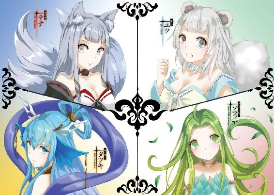

| 魔王の始め方4 魔王の始め方シリーズ (ビギニングノベルズ) | |
| 笑うヤカン | |
| (2016) | |

「おお......」
白い砂を踏みしめて、男は思わず感嘆の声をあげた。
砂浜の向こうには広大な平原が広がり、彼方には森が、そして美しい山々が聳え立っている。
見たこともない草木や花々が生い茂り、聞いたこともない鳥の鳴き声が響き、風の匂いさえ違うもののように感じられる。
どちらかと言えば安定を好む彼をして胸を高鳴らせる、未知の塊がそこにあった。
「オ～、ウ～、ル～......」
そんな彼に、未知とは正反対の聞き慣れた声がかけられる。恨めしげな声に視線を向ければ、見慣れた姿の使い魔がよろよろとした様子で船から降りてくるところだった。
「どうした、船酔いでもしたか？」
「悪魔が船酔いなんかするわけないでしょっ！ わたしの作った魔動船に何したの！」
淫魔はびしりと船を指す。魔力で動くその船は彼女が設計した力作であり、言い換えれば彼女自身の子にも等しいものだ。
「ああ。航海は長くて暇だったからな。住みやすいように作り替えてみた。船の機能自体には問題ないから気にするな」
「船室をダンジョンにされて気にしないわけないでしょ、このダンジョン馬鹿─────っ！」
リルの叫び声が、新しい大陸に響き渡った。
「新大陸？」
ことの起こりは、一年ほど前だった。
「そうだ。まあ便宜上の名前で、土地としてどちらが新しいかはわからんがな。ともかく、我々の住んでいるこの大陸から遥か東......海を隔てたところに、巨大な陸地があるということがわかった」
ばさりと広げられた地図を覗き込む顔は五つ。
リル、ユニス、スピナ、メリザンド、そしてオウル。
魔王の国を動かしている、国の核とも呼べる顔ぶれだ。
「あっ、あたしが前、空の上から見たやつだ」
王妃となったユニスは、生まれたばかりの子を抱いてあやしながら声をあげる。
「結構遠いのね......」
指で新大陸までの距離を計りながら呟くのは、忠実なる使い魔のリル。
「いよいよ別の大陸にも打って出る、ということですね」
魔王の第一の弟子、スピナは意気込んだ様子で表情を引き締める。
「大陸全土を支配し、安定もしているのだ。わざわざ危険を冒す必要はあるのか？」
元聖女でもあり片腕でもあるメリザンドは、オウルの意図をわかっていてあえて尋ねた。
「攻めこむというわけではない。むしろその逆だ」
「逆......ですか？」
目を瞬かせるスピナに、オウルはうむと頷く。
「我々は新大陸の情報を全く持っていない。ここに陸地があるということしか知らんのだ。いつかは必ず、彼の地に住まう者たちがこちらに侵攻してくるだろう。そうなる前に情報を集めておかなければならん」
「防衛のために偵察ってことだね」
ユニスが嬉しそうに声をあげる。
「となれば......迷宮ごと、というわけにはいかないか」
「無論だ。距離の問題もある」
オウルの作り上げた迷宮は大地の下に横たわる地の迷宮と、空をたゆたう天の迷宮とに分かれている。天の迷宮は自由に移動できる大拠点だ。他国に攻め入るならこれほど優れた兵器はない。
が、その巨大さと空を飛ぶことから、とかく目立つという欠点があった。新大陸で目撃されては秘密裏に情報を集めるのは不可能だろうし、こちらの大陸を完全に不在にするわけにもいかない。
「少数の人員を、船で送り込む。リル、少人数でも操れる船は作れるか？」
「勿論。任せといて」
リルの専門は魔兵器の制作だ。砲や火矢のみならず、乗り物もその範疇だった。
「でも、誰が行くの？」
ユニスが素朴な疑問を呈する。
未知の新大陸へと渡り、情報を集めてくる。重要かつ困難な任務だ。できそうな人材は極めて限られていた。最も向いていそうなのはユニスだったが、生憎と彼女は子育てに忙しい。愛情深い王妃は、己の息子の世話を侍女に任せきりにする気など毛頭なかった。
「そうだな。高い判断力を有し、あまり目立つことのない容姿で、できるだけ汎用性の高い能力を持ち、ある程度戦闘も可能で、万一の場合でも命を失う危険性のない者が望ましい」
「......そんな人いたっけ？」
リルは配下の顔を思い浮かべながら、指折り数える。
エレン、セレスたちアールヴは生存能力も戦闘能力も高いが、判断力に少し難がある。
その点ナジャ、シャル、ウィキアの元冒険者組はその経歴だけ見れば頼りになるが、死んでしまう可能性がないとは言えない。
悪魔のローガンはもし死んでも魔界に帰るだけだが、その外見はあまりに目立つ。
獣使いのミオは非常に強いがその能力はあまりに獣に特化していて、人間相手の情報収集は難しそうだ。
メリザンドの使役する英霊という手もあったが、肉体を持つユニスと違って普通の英霊の維持には莫大な理力が必要となるため、長期に渡る運用は難しい。
オウルの挙げた条件を全て満たす者は、人材豊富な魔王軍といえども中々いないように思える。
「ああ、一人だけいる」
オウルは親指でぐっと己の胸を指し、言った。
「俺だ」
１
そしてそれから、一年後。
万事準備を整え新大陸へとやってきたオウルとリルは、一先ず船の錨を下ろして岸に固定すると平原を歩いていた。
「この辺りでいいか」
そう言ってオウルが足を止めたのは平原の境、鬱蒼と茂る森の入り口だ。
「ん、焚き木集めてくる？ それとも、食べられそうな木の実か動物でも取ってこようか？」
「別にここで野営をするわけじゃない」
張り切るリルに、オウルは呆れて声をあげる。
「ここに、ダンジョンを作るんだ」
「ええー......またダンジョン？ 一から？」
「露骨に嫌そうな顔をするな」
端整な顔をしかめてみせる使い魔に、オウルは懐から小瓶を取り出した。
「今回はこれを使う」
「なにこれ。小型のダンジョンコア......？」
本拠地にあるダンジョンコアは、魔力を貯めこむほどにひとりでに膨らんでいく。今やリルすらどれほどの大きさになっているかわからない。しかしオウルが取り出したそれは、手のひらにすっぽりと収まる程度の大きさだった。
「基本的な機能は同じだ。魔力を貯蔵し、自由に取り出せる。だがこれにはそれに加えて、一つ能力を与えてある。......ダンジョンシード、とでも呼ぶか」
「ダンジョン、シード......？」
オウム返しに繰り返すリルに頷き、オウルはダンジョンシードを地面の上に落とした。途端、地面がぐねぐねと蠢き、ダンジョンシードは大地の中に潜り込んでいく。
「わ、わ、なにこれ！」
「俺の使う迷宮魔術。それを用いて半自動的にダンジョンを作り出す、一種のゴーレムのようなものだ」
ダンジョンシードは大きく穴を穿ち、どんどん地中深くへと洞窟を掘り進める。その壁面が輝いたかと思えば、掘り抜かれたままの土壁は箒で掃かれるようにしてレンガ壁に作り替えられた。
「事前に仕込んだ魔力を使って迷宮を広げつつ、そこから魔力を収集して更にダンジョンを大きく広げていく。まあ龍脈に突き当たりでもしない限りは収集量より消費量の方が多いだろうから直に止まるだろうが、仮の住処としては十分だろう」
「凄い凄い、これがあるならもう自分でダンジョンの設計とかしなくていいのね！」
「いや、そうでもない」
興奮を露わにする使い魔に、主は冷酷に首を振った。
「自動的に作られるということは、そこには一定の法則性があるということだ。計算に依ってのみ成り立つダンジョンには、人間の悪意が足らん。侵入者を騙し、陥れ、その心を挫く悪意がな」
「はいはい、あなたの底意地が悪いのは、よ────く知ってるから。そんなことより、さっさと入ってみましょうよ」
いまいち理解を得られていない気がしたが、オウルはリルの言葉に従って迷宮の中に足を踏み入れる。
「ほら、結構素敵じゃないの」
まるで新居にはしゃぐ新妻のような調子で、リルは地下回廊の中を軽やかに舞った。
「まて......様子がおかしい。ダンジョンシードが上を目指している」
基本的に、地中の魔力というのは深いほど濃い。それ故、ダンジョンシードは放っておいても深く深くへと根を張っていく。ところが、オウルが進む通路は途中から傾斜角度を変えて、上方へと続いていた。
「えっ、何か......」
言った？ と続くはずだったリルの言葉は、物理的に遮られた。
突如通路を埋め尽くした、植物の根によって。
「ちょっと、なにこれ！ ダンジョンシードの根っこ!?」
「いや......これは、本物の植物の根だな。だが無関係というわけでもない」
ダンジョンシードは周囲のものを利用して、ダンジョンを作り出す。通常は地面......即ち土そのものだが、場所によっては砂や岩、金属の鉱石など、様々な物質が織り交ざることを想定して作られている。勿論そこに、木々も含まれていた。
「この樹はどうやら、魔力を蓄える性質を持っているようだ。それで、ダンジョンシードは地下ではなく地上へ向かっていったのだな」
「冷静に言ってる場合かーっ！ ああもう、オウル、ちょっと下がってて！」
根の壁越しのリルの言葉に従って下がると、ややあって爆発音が鳴り響き、隙間から煙が漏れ、リルが盛大に咳き込む声が聞こえてきた。
「......大丈夫か？」
「何この樹、滅茶苦茶硬いじゃないの！ 石火矢を使っても傷一つつかないってどういうこと!?」
「迷宮の壁だからな。そう簡単に壊されるわけなかろう」
「威張るなー！」
叫ぶリルを無視して、オウルは壁面に触れる。木の根の壁は一瞬ぐにゃりと歪んでリルの煤だらけになった顔が見えたが、すぐに蠢いてピタリと閉じた。
「駄目だな。森の魔力を吸って、ダンジョンシードが迷宮を維持し続けている」
「......どういうこと？」
「端的に言えば、森にダンジョンを乗っ取られた状態だな」
「なんでそんな楽しそうなのよ......」
壁の向こうから、疲れを滲ませた声が聞こえてくる。
ぐったりと地面にへたり込むリルの姿が思い浮かぶようだ。
「楽しそう、だと？」
オウルが思わず己の頬に触れれば、口元は笑みの形に歪んでいた。
「今、笑ってるでしょ」
それを見透かすかのように、リルの指摘が飛んでくる。
「何故わかる？」
「見なくてもわかるわよ。わたしがよーく知ってる表情だもの、それ」
疲れ果てていたはずのリルの声も、いつの間にやら笑みを含んだものになっていた。
「そうよ。最近その顔してなかったから、すっかり忘れてたわ」
広大な大陸を治め、国々を統治し、政務に勤しむ毎日。
それは間違いなく、かつてオウルが渇望し、そして手に入れた平穏な日常だ。
「いいんじゃない。なんだかんだ言ってわたしもその顔嫌いじゃないから......さっさとこの迷宮、何とかして頂戴」
「ああ」
──だが。
「では手始めに、親に逆らうこの迷宮を躾けに行こうか」
この不測の事態に、邪悪なる老魔術師はニヤリと笑ってそう言った。
２
「ふむ......やはり、駄目か」
リルと別れて、オウルは一人迷宮の中を歩いていた。
数ヶ所、扉を作って壁を越えられないか試してみたものの、材質が石だろうと土だろうと木の根だろうとすぐさま修復されてしまう。
「思った以上に魔力を溜め込んでいるようだな」
それは文字通り、この迷宮がまだ生きていることを示していた。
ダンジョンシードにあらかじめ溜めておいた魔力はそれほど多くはない。
普通の土地であればとっくに魔力を枯渇させているはずだが、どうやらいきなり当たりを引き当ててしまったらしかった。
「このじゃじゃ馬め」
壁と天井を突き破り、木の根が槍のように飛び出してくる。それはオウルの身体を貫く寸前で、石の壁に阻まれて半ばからへし折られた。
「妨害が来るということは、こちらの道で正しいということだな」
オウル自身が作った迷宮であれば、そのような道理は通用しない。だがこれはダンジョンシードが自動で作り上げた迷宮だ。基本的には最小の魔力で最大の防衛効果を発揮するように生成される。無駄な道にまでは罠は張られない。
複雑に入り組んだ迷宮の中を、オウルは地図も描かず目印さえつけず歩いていく。冒険者でさえ、熟練の者であれば歩測と方向感覚だけで詳細な地図を描くことができるのだ。ダンジョンマスターたるオウルが迷宮で迷う道理などなく、彼はほぼ最短距離でダンジョンシードへと向かっていた。
森の入り口で創りだした迷宮は、森全体を飲み込むように中心部の方へと広がっている。恐らくは森の中心がダンジョンの中心にもなっているだろう、とオウルは当たりをつける。
その足が、ピタリと止まった。
「やはり、ついてきているな」
口の中で小さくそう呟く。
彼は迷宮に入ってからすぐに、何者かの気配を背後に感じていた。
リルではない。彼女ならばコソコソしたりせずに、直接話しかけてくるだろう。
できたばかりのこのダンジョンに、先に入った者がいるとも考えづらい。
ということは、オウルがダンジョンシードでダンジョンを作るより前から後をつけてきたものがいるということだ。
オウルに気づかれずに後をつけるということは、それなりの手練と見ていいだろう。
だが、迷宮の中でオウルからその存在を隠しおおせるのはほぼ不可能だ。
動かずじっとしているならまだしも、動いているならその足音や振動は必ず伝わる。
オウルは曲がり角を曲がり、懐から小さな石の箱を取り出した。
その表面に指先を這わせると、石の箱は組木細工のようにパタパタと展開し、あっという間に大きく広がる。それはまるで翼のようにはためくと、一瞬にしてオウルを移動させた。
通路を進む何者かの振動が、途端に速くなって通路を曲がる。
そして、そこでピタリと止まった。
オウルが進んだはずの通路は、曲がってすぐ行き止まりになっていたからだ。
戸惑うように振動の主はその場で一度、二度足踏みする。
そして一歩元の通路へ戻ろうとした瞬間、オウルは魔力を込めた指先をそれに這わせた。
展開して行き止まりの壁に擬態していた石の箱が、まるで蛇のあぎとのように追跡者を狙う。
敵もさるもの、剣閃が走って蛇のあぎとは防がれるが、そちらはフェイントだ。
石畳と天井に擬態した部分から同時に壁がそそり立って、追跡者を閉じ込める。
「......さて」
無事相手を捕獲して、オウルは深く息をついた。本来なら更なる反撃に備えて石箱を縮小、壁を厚くするところなのだが、その必要はなさそうだと彼は思う。
「聞きたいことは色々あるが────」
壁に挟み込まれるようにして身体を拘束され、閉じ込められているのはまだ女の子と呼んでいい年齢の少女だった。だがそれだけで油断するほど、オウルは生易しい人間ではない。
ただ単純に。
「お前は何をやってるんだ、マリー」
壁の中から上半身だけを突き出すような間抜けな体勢で照れ笑いを浮かべる少女は、顔見知りの相手だった。
３
「ではお前は、船の中にずっと隠れていたというのか」
「うんっ」
拘束された状態のまま頷くマリーに、オウルは頭痛を堪えるような仕草で額に手のひらを当てた。
「一体なんだってそんなことを......」
「だってついていきたいって言っても、オウルさま駄目って言うでしょ？」
「当然だ」
「だからだよぉ」
マリーは不満気にぷっくりと頬を膨らませた。
「わたし、もう子供じゃないもん」
子供そのものの仕草で言い放つ彼女に、オウルは思わずため息をつく。
全く説得力がなかった。
とはいえ確かに、未だにあどけなさは多分に残っているものの、もはや彼女は出会ったばかりの頃の幼い子供ではない。むしろ純粋な戦闘能力という点で見れば今やオウルやリルより強いと言ってもいいほどだ。
「わたしももっと、オウルさまに信用してほしい......」
にもかかわらず、オウルが何故彼女を重用しないかといえば。
「別に、お前のことを信じていないわけではない。ただ......」
「たいせつに、大事に思ってくれてるんでしょ？」
マリーはその理由を、ズバリと言い当ててみせた。端的に言ってしまえばそういうことである。
幼い頃から見知っている身となれば、過保護にもなる。十分強いとはいっても、オウルは常に万が一を考えてしまう性分なのだ。
とはいえ彼女を連れていかない理由はそれだけというわけでもない。
「......俺の言いつけをしっかり守り、勝手に視界から離れないと誓うか？」
「マリーはちゃんとオウルさまの言いつけ守ります！」
ピシリと手を上げて、マリーは宣言した。
むしろ問題なのはその自由闊達な気性の方だった。
とにかく、何をやらかすのか魔王をして全く予想をつかせないのだ。
「......破った時は無理矢理にでも帰すからな」
「はーい！ ちゃんと守ります！」
返事だけは調子よく返すマリーに、オウルは深くため息をついた。
置いてきても隙を突いてくるなら、手の届く範囲に置いておいた方がまだマシかも知れない。
「ねーねーオウルさまーオウルさまー」
そんなことを思っていると、マリーがしきりにオウルの名を呼ぶ。
「ところでこれはいつ解いてくれるの？」
彼女は未だ、オウルの作り出した壁に挟み込まれたままだった。
「ああ......」
オウルが石箱を操作すると、壁は彼女を挟み込んだままくるりと回る。
ちょうど腰のくびれの辺りを固定されて、壁面からマリーの尻だけが飛び出している形だ。
「あ、あれあれー？」
「じゃじゃ馬娘に躾をしてからだ」
オウルは傲然と、そう言い放った。
４
「お、おうるさまぁ......これ、なんか、恥ずかしいよぉ......」
オウルの眼前で、白い尻だけがふるふると震える。
壁から尻だけが突き出ている様は何とも滑稽だったが、同時に奇妙な淫猥さがあった。
「当たり前だろう。何の苦もなければ罰にはならん。ただ犯すだけではお前は喜ぶだろうが」
「そうだけどぉ......ひぁんっ！」
下穿きを脱がし、スカートを捲り上げて露わになった尻をオウルは無遠慮に掴む。
「中々肉付きが良くなってきたな」
「ふ、太ったわけじゃないよ！」
「誰もそんなこと言っておらんだろう」
初めて彼女を抱いたのは一年ほど前の話だ。その一年の間に、彼女の身体は主の寵愛を存分に受けて随分成長した。
若い尻肉は張りと弾力に満ち満ちて、それでいて指に力を込めればどこまでも淫らに歪む柔らかさがある。まだまだ幼いと思っていたが、丸く膨らんだ臀部は既に成熟した女らしさを多分に持っていた。
「立派に育ったものだ、と思ってな」
「ううう、はずかしいよう......オウルさま、あんまりみないでぇ......」
マリーはもじもじと太股を擦り合わせる。本人としては羞恥ゆえの反応なのだろうが、オウルから見れば誘っているようにしか見えなかった。
「んっ......あ、ぅん......」
ぴっちりと揃えて閉じた太股を手のひらを差し入れてこじ開け、ゆっくりと撫で上げていけば甘い吐息が漏れ聞こえてくる。
「ひぁあんっ！ お、おうるさまぁ」
尻肉を両手で割り広げるようにしてその中心に舌を伸ばすと、マリーは困惑と媚が入り混じったような声をあげた。
それに構わず蜜を滴らせるスリットを丁寧になぞり、舌先を差し入れ、ぷっくりと張り詰めた秘核を転がしていく。
「いやぁ、こんな、状態じゃなくて、ふつう......ふつうに、あぁんっ」
全ての悪意を寄せ付けない迷宮の中で、マリーは大切に育てられた。基本的にオウルに対しては聞き分けの良い娘ではあるが、しかしやはりわがままなところがないとはいえない。
「おねがい、おうるさまぁ......わたし、ふつうにおうるさまとえっちしたい......こんなの、へんたいみたいだよぉ」
マリーはくねくねと腰をよじりながら、甘い声で懇願した。そうやって甘えればなんだかんだと、オウルは彼女の言うことを聞いてくれると知っているのだ。
「誰が変態だ、失礼な。普通にとはどういうことだ？」
オウルはゆっくりと彼女の秘部に指を出し入れしながら、意地悪く問う。マリーの媚肉は指を咥え込みながらも、ひくひくと物欲しそうに蠢いた。
「まえからぁっ、まえから、ぎゅってして、してほしいのぉっ！ おくちでも、おっぱいでも何でも好きにしていいからぁっ！ おうるさまの、お顔みながらえっちしたいのぉ！」
マリーは余裕をなくした悲痛な声で請い願う。
「そうか。わかった」
オウルが頷いて指を抜くと、ほっとしたマリーの身体から力が抜ける。
「だが駄目だ」
「んぁぁぁぁぁぁぁんっ！」
そこに、オウルは思い切り剛直を突き入れた。
「なっ、ああぁっ、なんでぇっ？」
「これは罰だと言っただろう」
壁から突き出た尻を両手で抱えるようにして、オウルは手加減抜きで彼女の膣内を陵辱する。
相手のことを一切考えない、己の快楽のためだけの自分本位な動き方だ。
「いやぁっ、おうるさまぁっ！」
壁に動きを封じられ、顔も見えない相手に好き勝手に犯される。
それはまるで、種付けされる家畜のような扱いだった。
「やぁ......こんなの、やなのにぃ......」
涙混じりの声とは裏腹に、彼女の腰はオウルの抽送に合わせて淫らに動き、膣口はオウルの肉槍をきつく咥え込みながら浅ましく涎を垂らす。
普通であれば屈辱しか感じない状況にもかかわらず、一年間オウルに丹念に可愛がられたマリーの身体は勝手に反応し、快楽を貪っていた。
「......ふぅっ、あっ......！ ああぁっ......あぁぁんっ！」
ぐっと奥歯を噛み締めても、ずんと奥を突かれると脳髄が蕩けるような快楽が背中を走り、喉からは甘く媚びた声が出ている。それを意識してしまうと、もう駄目だった。
「あぁっ、だめ、だめぇっ！ そこ、あぁん、とんとん、してぇ！ もっと、あぁっ、いいのぉっ、はぁぁ、ああぁぁっ！」
馴染みきったオウルの男根はただ出し入れを繰り返すだけでマリーの弱い部分を擦り上げ、嫌でも己の身体が彼専用のものであると思い知らされる。
「あぁっ、イク、イっちゃう、おうるさま、わたし、イっ......」
まるで螺旋階段を昇るかのように彼女はどこまでも昂っていき、それが頂点へと達しようとした、その一瞬前。
「......え......？」
オウルの動きは突然止まり、マリーは己の腹の中に馴染みのある感覚を覚えた。どくどくと脈打ちながら、じわじわと何かが広がっていく感触。
膣内に精が放たれた感触だった。
「え、おうるさま、わたし、まだイってない......よ......？」
オウルとの性交で、こんなことは初めてだった。
彼は必ず、先にマリーを絶頂に至らせてから自らも達する。
少なくとも同時に、多い時なら十回も二十回もイカされてからようやく射精してもらえることすらある。
「おうるさまぁ......」
絶頂寸前まで高められた身体は燃えるように熱く、マリーはオウルに腰を押し付けるように背を反らす。しかしオウルはマリーの尻を掴んで彼女の身体を押し留めた。
そうまでされれば流石のマリーも、オウルが単に嫌がらせや戯れでそうしているわけではないと気づく。
「ごめんなさぁい！ ちゃんと、ちゃんと言うこと聞くから、許してぇ！」
「さっき、お前、誓わなかっただろう」
勝手に視界から離れないと誓うか。
オウルがそう尋ねた時、マリーは『言いつけを守る』と宣言した。
一見何気ないやり取りのように見えるが、彼らはどちらも魔術師である。
そこにはただの口約束以上の意味があった。
「誓うか？ 勝手なことはせず、俺を欺くようなこともしないと」
自分の迷宮の中であればともかく、これから進むのは危険のある場所だ。
そこへ連れていく以上、しっかりと手綱を握っている必要があった。
「はいっ、ちかう、ちかいますぅ！ 誓うから、おうるさまぁ......！」
「良かろう」
オウルの言葉と共に、マリーを縛り付けていた壁が積み木のようにばらりと崩れる。
そしてそのまま広がると、彼らを包み込むようにして小さな部屋を作り上げた。
「え、なんで、周り......？」
「当然だろう？」
オウルはマリーの望み通り、顔が見えるように膝の上に乗せて彼女の身体を抱き寄せる。
「声が漏れては困るからな」
「え、それってどう、あぁぁぁあっ!?」
身体の中心を貫かれ、小さな部屋の中にマリーの悲鳴のような声が反響した。
「そら、まず一回目だ」
「あぁぁぁぁあああぁぁぁぁっ！」
まだ火のついたままの奥を容赦なく抉られて、マリーは簡単に気をやった。
「どんどんいくぞ」
「お、おうるさま、ちょっとまっ......ふぁっ、あぁああああ！」
余韻どころか絶頂のさなかに子宮口をこじ開けるかのように突き入れられる肉塊に、マリーは全身に力を込めてオウルにギュッと縋り付く。
「だめっ、それ、だめぇっ！」
「駄目も何も、お前が願ったことだろう？」
マリーの小さな身体はそのままひょいと持ち上げられて、空中で揺するようにして犯される。その度に、彼女は身体を震わせてオウルのモノを強く締め付けた。
「だ......めぇ......っ！ こわれ、ちゃ、うぅっ！」
「安心しろ」
オウルはマリーの耳元で、優しく囁く。
「何度壊れても、しっかり可愛がってやる」
言葉と共に注ぎ込まれる精液の感覚に、マリーは二度目の絶頂を迎えた。
５
「ん......ちゅ、んん......ん、む......」
小さな口が赤黒くそそり立つものをぱっくりと咥え込み、短い舌が淫猥な水音を立てながら脈打つ肉茎を舐め上げていく。
ふわふわとした金糸のような髪をかきあげて、跪きながら奉仕する様はまるで神に祈っているかのように神聖な雰囲気を纏っている。しかし、両手で硬く張り詰めた男根を擦りながら熱心に吸い付く表情はどんな娼婦よりも淫らだった。
「く......出すぞ......！」
オウルの言葉にマリーは答えず、ただ手と口の動きの速度を上げる。
素早くピストン運動を繰り返しながら、その指や舌先はオウルの弱いところを的確に擦り上げていた。
呻くような声と共に、マリーの口内に白濁の液が放出される。彼女はぷっくりと頬を膨らませてそれを受け止めながらも、手の動きは緩めず射精を促す。二度、三度と断続的に迸るそれを、彼女は全て口内に蓄えた。
射精を終えてからもマリーは更に竿をしごき立て、尿道に残った汁までも一滴残らず吸い出す。そして形の良いおとがいを上に向けて口を開き、そこに溜まった白濁の液を主に示す。それをごくりと嚥下すると、綺麗になった口内を改めて見せた。
「お掃除終わりました、オウルさま」
最後に丁寧に竿を舐め清めて、仕上げとばかりに先端に口付ける。
「うむ......」
「どうしましたか？」
眉根を寄せながら頷くオウルに、マリーは首を傾げた。
「いや、先程までわがまま放題だったくせに、いきなり随分と従順になるな、お前は......」
「もう、どうしろっていうんですかあ」
ぷうとマリーは先程よりも大きく頬を膨らます。もっともな意見ではあったが、あまりの急激な態度の変化にはかえって裏があるのではないかと疑ってしまう。
「これでも、ちゃんと反省したんですよぅ......」
マリーはオウルの一物を丁寧に服の中に仕舞い込み、パタパタと服から埃を払う。
「オウルさまがわたしのこと心配してそう言ってくれてることくらいは、わかってますから」
そしてぎゅっと腕を抱くと、にこにこしながらそう言った。
「......まあ、わかっているなら良い」
彼女を子供の頃から見知っているせいか、どうにもやりづらい。そう思いつつも、オウルは周りを覆う小部屋の床に触れる。すると小部屋はパタパタと折りたたまれて、元の小さな石の箱に戻った。
「そういえばこれ、何ですか？」
「遠征用に造った武器だ」
マリーはオウルの手のひらに収まった石の箱をしげしげと眺める。見た目は、ただの石の塊にしか見えない。縦横高さの長さが同じ立方体で、黒に近い灰色をしている。大きさはオウルの手のひらの上に乗ってしまう程度だが、厚みがあるため手の中に隠せそうにはなかった。
「見た目は、全然武器に見えないですね」
「だろうな。これはまあ、言ってしまえば小型のダンジョンだ。便宜上、ダンジョン・キューブと呼んでおる」
「......そのままだね」
「うるさい。名前などどうでもいいだろう」
咳払いを一つして、オウルはキューブの表面を指でなぞる。するとパタパタとキューブが展開して、通路の上に石の橋がかかった。
「そこは落とし穴だ。この上を歩け」
「おー、べんり！」
橋の上を渡り終えると、キューブは再び元の石の箱へと戻る。
「地味だけどとってもお役立ちな、オウルさまらしい武器ですね！」
「地味は余計だ」
自覚があるのか、オウルは渋面を作りながらもキューブを懐に仕舞い込んだ。
「でもでも、色々使い方工夫できそう！ わたしにも使えますか？」
「迷宮魔術を覚えればな」
「おぼえます！」
マリーはぐっと、拳を握りしめる。
「ならば少し、教えてやろう」
作られたばかりのこの迷宮に魔物の類は存在せず、自動発生した程度の罠をオウルが見逃すこともない。まだまだ道のりは長いと見て、暇つぶしにオウルは講義を始めることにした。
「まず、魔術の行使の仕方に三種類あることは知っているな？」
「はいっ。呪文を唱えて使う詠唱系とー、魔法陣を描いて使う紋章系とー、手で印を組んで使う形象系！」
ピンと手を挙げて言うマリーに、うむとオウルは頷く。
「迷宮魔術はその中で紋章系に分類される」
オウルは指先に魔力の光を宿し、空中に複雑な紋章を描いていく。
「綺麗に描くの難しいし、描くのに時間もかかるから凄く面倒臭い奴ですよね。あれ？ でもさっきオウルさま、殆ど一瞬で発動させてましたよね？」
「そう。そこが、迷宮魔術の特徴だ」
我が意を得たりとばかりに満足気に頷くと、オウルは先程作った光の紋章を指し示す。
「これに魔力を注ぐとどんな魔術が発動する？」
「ええっと......あれ？ 三個に増える？」
「そうだ」
オウルが紋章を指で突くと、光は複雑さを増した三種類の紋章に増える。
「ではこれを新たな紋章として発動させるとどうだ」
「え、ええっと......ここがこうで、こうなって、こうだから......あ、また増えて八個になる!?」
「その通りだ。三重紋を暗算で読み解くとは、中々やるじゃないか」
紋章は組み合わされば組み合わさるほど、その効果は加速度的に複雑化していく。三重紋を読み解くのは、単一の紋章を読み解くそれの八倍は難しい。
「で、この八重紋を発動させるとどうなると思う？」
「そんなの、わかるわけ......ううん。ええと、多分だけど、十五個に増える？」
「正解だ。よくわかったな」
八重紋ともなればマリーに読みきれるわけがなく、それがただの当て推量であることは明らかだ。しかしそれでも当ててくるのが、マリーの恐ろしいところだった。
「で、それを発動させるとようやく目的の魔術の効果が発揮される。これが、迷宮魔術だ」
まるで迷宮のように入り組み、圧縮された紋章系魔術。
それこそが、オウルの作り上げた迷宮魔術という術式の真髄だった。
十五に増えた紋章を突けば光は見る間に広がっていって、迷宮の通路を舐め上げていく。
そのあとには、キラキラと輝く光の塊が所々に残っていた。
「わぁ......綺麗」
「触るなよ。それが罠のある場所だ」
案の定うかうかと触りに行くマリーの首根っこを、オウルは猫のように引っ掴む。
「......あの、ものすごく、沢山あるんですけど」
「侵入者は全ての罠に引っかかるわけではない。むしろ気づくこともなく素通りすることが殆どだ。故に、仕掛けてある罠全てを可視化すればこうなる」
その数はマリーが思っていた以上で、どの方向に視線を向けても光が瞬いている。
今まで何気なく進んでいた道にもいくつもあって、彼女は自分がどれだけ運良く歩いてきたのかを思い知った。
「床や壁にあるのはともかく、あの天井のとかは引っかかる人いるんですか......？」
「床や壁にだけ罠があるなら、天井を歩けば安全だろう。そう思う手合への罠だ。勿論、空中を飛んでも引っかかるようにしてあるから、気をつけろよ」
マリーはぎゅっとオウルの腕にしがみつきながら、ふとあることに気づく。
「この罠......っていうか、迷宮自体も、さっきみたいな紋章の展開で作られているんですよね？」
「他の術式も組み合わせてはあるが、基本的にはそうだな」
その場で多重展開する紋章を作り上げたオウルの技は、もはや神業と言う他ない。
それでも十五重紋くらいなら、綿密に準備と計算をして用意すればマリーでも再現できそうな気はする。
しかしこれほどの迷宮を自動的に作り出す魔術というのがどのくらい複雑なのかということになると、彼女には想像もつかない世界の話だった。
「最終的に、何重くらいの紋章になるんですか？」
「途中で別々の紋章に派生して別々の魔術になるから、見た目ほど複雑ではないぞ。合計するなら、この規模なら数億といったところだろう」
「おっ......」
さらりと言ってのけるオウルに、マリーは言葉を失う。
「オウルさま、やっぱり変態......」
「失礼なことを言うな」
渋面を作りながらも、元の調子に戻ってきたマリーに、オウルはどこか安堵を覚えた。
６
「それじゃあ、いきまーすっ」
「ああ」
腰の剣を二本抜いて構えるマリーに、オウルは頷く。
「せいっ！」
彼女が剣を同時に突き出すと、衝撃波が渦を巻いて迷宮の天井を貫き、ぽっかりと穴を穿つ。
「よし。今だ、登れ！ そう長くは保たんぞ」
同時にオウルがキューブを操り、円筒形の小さな塔と梯子を作り出して、修復されゆく天井を抑えながら地上への道を作り上げた。
「......あっ」
「どうした!? 地上部分に何か問題でもあったのか？」
梯子を登る途中、マリーは不意に動きを止めて、背後のオウルを見下ろす。
「さっきオウルさまがマリーの中に出した精液、垂れてきちゃった......」
「いいからさっさと登れ、愚か者！」
ぽっと頬を染めて恥ずかしげに呟くマリーに、オウルは思わず怒鳴った。
「こっちはあんまり、ダンジョンって感じはしないんですね～」
「いや、よく見ろ。ただの森に見えて、構造そのものは普通のダンジョンと変わらん。そうは見えないかも知れないが、これは壁だ」
きょろきょろと辺りを見回すマリーに、オウルは複雑に絡みあった樹の枝を指差した。
「でもただの木の枝なら打ち払っちゃえば通れそうな気がしますけど......あっ」
剣を振るってその枝を切り裂こうとすると、細く脆く見えた枝の中程までを切り裂いて剣は止まる。
「さっさと抜け！」
オウルの怒声に慌ててマリーが剣を引き抜く。枝はあっという間にざわざわと伸びて、マリーのつけた小さな傷はすぐに消えてしまった。
「魔力が通った枝だ。見た目通りの強度なわけがないだろうが。壁の破壊は最も恐れるべきことだから、当然対策もしてある」
「はぁい......ごめんなさい」
しょんぼりと項垂れるマリーの頭を、ぽんと撫でる。
「あれ？ でも、天井っていうか地面は簡単に壊せましたよね？」
既に修復されて消えた穴を見つめて、オウルの手のひらを頭に乗せたままマリーは首を傾げた。
「そうだな。あれは一種の隠し通路だ。どこでも壊れるわけではなく、ここだけが簡単に壊れるようにできている。それを見極めるのもダンジョンマスターの資質だ」
「わたしもずっとダンジョンに暮らしてたのになあ......」
「当たり前だ。お前と俺とでは年季が違う。大体、お前はダンジョンマスターではなかろう」
そんなことよりもだ、とオウルはマリーの背中を押す。
「恐らくこのダンジョンはここからが本番だ。地下は作ったばかりで大した罠すらなかったが、森の中には元々自生していた魔物もいるはずだ。油断するなよ」
「はーいっ！」
まったく、返事だけは良いんだが。とオウルは内心嘆息する。
彼女の能力自体は、非常に高い。純粋な戦闘能力という意味ではもはやオウルよりも上だろう。
特段天賦の才があったわけではないが、迷宮に住む実力者たちが鍛え上げたのだ。弱いはずもない。だが迷宮の中で大切に育てられたが故に、実戦経験というものが全く足りていなかった。
「そら」
中でも特に問題なのが、
「言った傍からお前は一回死んだぞ、マリー」
ダンジョンへの警戒心のなさだ。
「えっ、わっ、なにこれ、魔物!?」
マリーは木の幹にぎょろりと生えた目玉に驚き、次にその枝が槍と化して自分の腹まで伸びているのに驚く。
「やはり海を越えると見たことも聞いたこともない魔物がいるものだな」
感心したように呟くオウルにも木の枝が二本、左右から素早く伸びる。だがそれは彼の身体に触れる直前に、半ばから断たれて地面に転がった。
マリーが両手に二本の剣を持ち、同時に切り捨てたのだ。
「こっちはそんなに硬くないね」
彼女を警戒するように、木の枝がざわりと蠢く。更に四本の枝が触手のようにしなり、同時にマリーを狙って突き出された。マリーは二本の剣を盾のように構え、攻撃を受け止める。彼女の動きが止まった瞬間を狙って、地面から根が突き出した。
「わあっ。そっちからも来るの!?」
予期せぬ攻撃に、マリーは目を丸くする。
その瞳を貫く勢いで飛び出した根は、直前で動きをピタリと止めた。
「あーびっくりした。ちゃんと目が弱点で良かったー」
木の化物の目玉には、剣が二本突き刺さっていた。マリーの扱う四刀の三本目、四本目だ。
絶命した化物の後を追うようにして、木の枝もバラバラと崩れ落ちる。
奇しくも相手の攻撃を受け止めて追加攻撃を行うという狙いはどちらも同じ。ほんの僅かな差で、マリーの方が早かった形だ。
「ありがとです、オウルさま」
マリーの腹に巻き付いた石の帯がするりと解けてキューブに戻る。オウルが初撃を防がなかったら、彼の言葉通り何もわからないまま死んでいただろう。
「まさか木が動き出すだなんて......オウルさまは知っていたんですか？」
「いいや。俺も気づいたのは動き出す直前だ」
未だにバクバクと鼓動する胸を押さえながら尋ねれば、老魔術師は首を横に振る。
「ダンジョンではあらゆるものを警戒せねばならん。お前は異常に気づくのも遅すぎなら、気づいてからの対応も遅すぎる」
「ううー......」
いつになく厳しいオウルの意見に、マリーは眉根を寄せた。
「わかりました。もっと、気をつけます」
しかしすぐに立ち直り、彼女はきりりと表情を引き締める。
「これからは、もう絶対に油断しないんだから！」
そう言い放つ彼女の背後で、樹という樹がぎょろりと目を開けた。
７
「これは、まずいな」
流石のオウルも目を見開いて、キューブを取り出しながらマリーを抱き上げる。
「ふぇっ、な、こんなところでですか？」
「馬鹿な勘違いしてないでしっかり掴まってろ！」
キューブから伸びた石畳を踏みしめると、オウルの身体は高速で道の上を滑るように移動していく。一瞬後、無数の枝槍がマリーの髪を数本引きちぎりながら地面に突き刺さった。
「やあん、髪が！」
「命の心配をしろ。来るぞ！」
道の上を滑っていくオウルたちを迎え撃つように、前方で木々が枝を広げる。
「油断しないって言ったばっかりなのに、もぉー！」
マリーは叫びながら腰に下げた二対四本の剣を引き抜いた。両腕で剣を二本操り、魔術でもう二本を操る異形の剣術。だがそれは驚くほどの破綻のなさで、的確に彼らを襲う木の枝を切り落とした。
剣を扱う流派はそれこそ星の数ほどあるが、二本の剣を用いて振るうものとなると数えるほど。ましてや四刀流などどこにも存在しない。人間には腕は二本しかないのだから当然だ。
だが独自に磨いたにしては、マリーの剣技はあまりにも洗練されていた。長きに渡って無駄を削ぎ落とし、有効な動きだけを磨き抜いた技。四本の腕を振るう悪魔の戦い方を、誰よりも近くで目にし学んだ剣術だった。ダンジョン探索は落第だが、戦闘に限って言えば十分使い物になりそうだ、とオウルは値踏みする。
「よし、マリー。このまま突っ切るぞ」
「え!? でも......！」
オウルが示したのは特に木々が密集する行き止まりの方向だった。
道の左右からの攻撃であればいくらでも凌ぐ自信があったが、三方を囲まれた状態となると少々厳しい。ましてや行き止まりで、背後に回りこまれたら流石に対処しきれない。
「案ずるな。全ての剣を前に向け、全力で壁を切り開け」
「......全力って、全力で？」
「そうだ」
オウルが頷いてやると、マリーは目を閉じ、すっと開く。彼女のサファイアブルーの瞳が、右だけ赤く輝いた。
四本の剣が束ねられ、まるで一枚の刃のように連なって振り抜かれる。先程僅かな傷を与えることしかできなかった木の壁は、まるで紙のように容易く切り開かれた。
オウルはマリーを木々の攻撃からキューブで守りながら、彼女が空けた穴に飛び込む。転がりながら壁の向こうの空間に滑り込むと、オウルの予想通り木々の攻撃は止まった。
「よし、よくやった。流石に効果覿面だな」
オウルはマリーを抱き起こし、しげしげと彼女の空けた穴を眺めた。ぽっかりと空いたそれは、再生すらできずに開いたままになっている。
世界で唯一の、彼女の特異性──聖女メリザンドと呪術的な双子であるが故に使える、法術を乗せた一撃によるものだからだ。
法術には、魔術を打ち消す作用がある。魔術による解呪と違って、魔力さえ使っていればどんなものでも問答無用だ。勿論それは迷宮の壁とて例外ではなく、法術を使えば彼女が言った通りただの木の枝でしかなかった。
「襲って......こないですね。行き止まりに侵入する時も攻撃は少なかったし」
油断なく剣を構えながら、マリーは不思議そうに声をあげる。
「あいつらの根は地面にしっかりと繋がっている。移動はできん。純粋に防衛用の罠のようなものだな。それに、壁になっている木と動き出す木は別物だ。壁に囲まれた部分はかえって安全というわけだ」
当たり前のように解説するオウルに、マリーは己の至らなさを痛感した。どれだけ油断しないよう意気込んでも、オウルの視野はあまりにも広くてついていくことさえできない。これではただの、足手まといだ。
「ではこの後はお前の出番だ。期待しているぞ」
だから、オウルに肩を叩かれそう言われて、マリーは心底驚いた。
「わ、わたし？」
「この先に、恐らくこの迷宮の核がある」
オウルは目の前の、わだかまった茨の壁を指差す。
「これほどの魔力を保有する森だ。相当な力を持った主がいるのは想像に難くない。本来ならばじっくりと準備を整えるところだが、お前なら問題ないだろう」
純粋な真っ向勝負ならばマリーは既に相当な域にある。度胸も十分だ。
ならば他を自分が補えば、この規模の主には十分な戦力だろう。
オウルはそう判断した。
「頑張ります！」
マリーは俄然張り切って、茨の壁を切り開く。それが正規の侵入ルートだったのだろう。法術を使わなくとも、壁は容易く破壊できた。
「えっ？」
半球状に形作られた茨の部屋の中央に、それはいた。
その姿に、マリーは声を漏らしてぱちぱちと瞬きする。
四方八方から伸びた数本の蔓草が、中央にダンジョンシードを固定している。そしてその中で、小さな生き物が丸くなっていた。
「これが......主？」
「その、ようだな」
オウルも困惑を隠しきれない様子で頷いた。
そこにいたのは、どう見ても。
「赤ちゃんじゃない」
生まれたばかりの赤子であった。
８
「これも罠ってことですか？」
「......いや......」
油断なく剣を構えるマリーとは裏腹に、オウルは大胆に赤子へと近寄っていく。
手のひらに収まる程度の大きさだったダンジョンシードは、赤子がすっぽり収まってなお余裕がある程度にまで膨れ上がっていた。
それはつまり、内部に高密度の魔力を閉じ込めている証拠だ。ダンジョンコアを元に設計したダンジョンシードは、内包する魔力に応じてその大きさを肥大化させる能力を持っている。
だが、その内部には液状になった魔力は見られない。つまりこの赤子自体が、高濃度の魔力だということだ。そしてその正体が何であれ魔力である以上、ダンジョンシードの中からはオウルの許可がなければ出てくることはできない。
他に敵らしき姿も見えず、オウルはダンジョンシードに触れる。その途端、赤子がぱちりと目を開けてオウルの姿を見た。
髪と同じ色の、緑色の瞳がじっとオウルを見つめる。感情の読めない、野生の動物のような瞳だった。赤子は攻撃してくるでも、話しかけてくるわけでもなく、ただひたすらにオウルを見る。
すると徐々にその表情は歪み始め、ひくひくと息を吸ったかと思えば、突然泣き始めた。
「何だ？ 一体こいつは何なんだ？」
ただ泣いているだけだ。その泣き声に何らかの魔力が含まれていたり、音波で攻撃したりするわけでもない。オウルが困惑していると、マリーが剣を鞘に収めてダンジョンシードを覗き込んだ。
「オウルさま、この子、外に出せますか？」
「恐らくは出せるだろうが......」
「じゃあ、出してあげてください」
有無を言わさぬ彼女の口調に、オウルはダンジョンシードを掌握する。
一瞬にして迷宮はオウルの管理下に置かれ、彼は魔力を取り出す時の要領で赤子をダンジョンシードの中から引き出した。
途端、赤子は火がついたように更に泣き出す。その両目からは大粒の涙がぽろぽろと溢れだし、大きく口を開け、両手足をジタバタさせて泣き喚く。まるで、己の存在を精一杯世界に認めさせようとしているかのようだった。
「大丈夫よ。大丈夫。いい子、いい子」
マリーはオウルの手から赤子を受け取ると、手慣れた様子で抱きながらゆらゆらとその身体を揺らす。
「オウルさま、多分この子、ただの赤ちゃんだよ。女の子だね。産着か何か着せてあげないと風邪引いちゃう」
「む......とりあえず、これを使え」
産着の手持ちなどあるわけもなく、オウルは外套を脱いでマリーに手渡した。マリーは手早く赤子をそれで巻いて抱き直す。
「いやに手慣れているな」
「アリスたちやアークのお世話、結構してたもの」
マリーにとって、オウルがフィグリア王家の女たちに生ませた子やユニスとの間の子は可愛い妹分、弟分である。幼い頃から何かと面倒を見ていたから、赤子の扱いは慣れた物だ。
「でも何でこんなところに赤ちゃんがいるんだろ」
マリーの問いに答えるすべは、オウルでさえも持っていなかった。
「はい、持ってきたよー。産着と、おしめと、ベビーベッドと、その他諸々」
「すまんな」
小さなベッドを担ぎ上げ、転移してきたユニスをオウルは労った。
「転移したら船の中じゃないしマリーはいるし赤ちゃんはいるしで、びっくりしたよー」
「それをびっくりした、程度で済ませるんだから、ユニスは度量が大きいわよね」
けらけらと笑うユニスに、リルは憮然としながらぼやく。
ようやく迷宮から抜け出せたと思えば、オウルと共にマリーが赤ん坊を抱いていたのだ。リルの驚愕ぶりは並大抵のものではなく、一から十までオウルを問い詰めなければ気がすまなかった。
ユニスがスピナを伴ってオウルのもとに飛んできたのは、ちょうどリルが不承不承ながらも納得した時のことだ。距離も結界も無視して転移する能力を持つ彼女は、一日一回、オウルのもととダンジョンを往復して必要な物品などを届けている。
ローブに包まれた赤子を見た途端、ユニスは事情を殆ど聞くまでもなく、ダンジョンに取って返して赤ん坊に必要なものを取り揃えて帰ってきたのだった。
「やはり、純粋な人間ではありませんね。かといって精霊と言うには存在がしっかりしすぎています。人造生命に近い気はしますが......」
赤ん坊の顔を覗き込んで難しい表情をしているのはスピナだ。
こと人造生命に関する分野においては、彼女はもうオウルを凌駕している。
だがそんな彼女でも、赤子がどういう存在なのか断定することはできないでいた。
「何者かが俺より先に迷宮の中心部に入り込んで、魔力を使ってダンジョンシードの中に人造生命を作っていった、と？」
「そう......なりますね」
頷きつつも、スピナの表情はそんなことはありえないと言っている。
オウルとしても同感だった。
「しかし、ダンジョンシードを通じてダンジョンから魔力を集めているのは確かなようです。恐らく、ここを離れては生きていけないでしょう」
「厄介なことになったものだな......」
オウルは頭痛を堪えるように額を押さえる。
と、周りの視線が自分に向いていることに気がついた。
「安心しろ。どこの誰の子かは知らんが、邪魔だから殺せなどとは言わん」
オウルがそう言うと、女たちは一様にほっと笑顔を浮かべた。自分の子でもないのに情の深い連中だ、とは思うが、その意に添ってしまう辺り自分もだいぶ感化されている。
「じゃあ、名前つけてあげなきゃね」
マリーは赤子を抱き上げて、あやしながらその顔を見つめる。
新緑色の瞳はあっちこっちにどんどん興味を移して揺らぎ、見ていて飽きるということが全くない。
「ならば、マリーがつけるといい」
「わたしがつけていいんですか？」
きょとんとするマリーに、オウルは頷く。
「その子を最初に見つけたのは、お師匠様とマリーですから」
「随分マリーに懐いてるみたいだしね」
「オウルはあんまりネーミングセンス良くないしねえ」
「煩い。余計なお世話だ」
スピナたちも口々にそう答えるのを見て、マリーはもう一度赤ん坊を見つめた。
「......ねえ、ソフィ」
「だから、師姉と呼べと言っているでしょう」
相も変わらず魔術師になる前の名で呼ぶマリーに、スピナはいつも通りに呆れ声をあげる。
「じゃあ、姉さん」
しかしまっすぐ視線を向けてそう呼ぶマリーに、スピナは瞠目した。
そんな風に呼ばれたのは、初めてだった。
「その名前を、この子にあげてもいい？」
「......私の名は、スピナ。オウル様の一番弟子、ネリス・ビア・スピナです。捨てた名をどうしようと、構いません」
「ありがとう！」
スピナが素気無く答えると、マリーはぱあっと笑顔の花を咲かせる。
「あなたの名前は、ソフィアよ」
マリーは赤子を────ソフィアを空に掲げるように抱き上げて。
「わたしの知ってる中で一番強くて、気高くて、綺麗な人の名前なんだからね」
かつて呪いに満ちた名を、祝福をもって贈った。
「寝かしつけたよー」
「お疲れ様ー。あの子、寝付き良いんだね」
急ごしらえの寝室にひっそりとやってきたマリーを、ユニスが労う。
「あれ、オウルさま、待っててくれたんですか？」
「流石にお前の子守唄を聞きながらそういう気分にはなれん」
服を着たままベッドの上にいる四人に首を傾げるマリーに、オウルは渋面を作った。
「防音対策できないんですか？」
「できないわけではないが、コストがかかりすぎる。それに何かあった場合、全く声が聞こえないでは問題があろう」
寝付いたソフィアはスピナとリルの分身が見てくれてはいるが、何せ素性も何もわからない赤ん坊だ。オウルにとっては当然の備えというつもりだが、それを赤子への心配と受け取ったマリーは破顔して彼に擦り寄るようにベッドの上に乗った。
「じゃあ、あの子が起きちゃうから、声あんまり出さないようにしないと......ですね」
シンプルな作りのベッドがぎしりと軋む。別にマリーまで相手にする必要はないのだが......という言葉を、思わず飲み込んでしまうような色香があった。
「そうだな。ともかくも新大陸に辿り着き、拠点を作り上げた記念だ。今日は四人纏めて相手をしてやる」
夫の言葉に、妻たちは密やかに嬌声をあげた。
本来なら、相手をする必要があるのはオウルに魔力を渡すスピナだけだ。
後は強いて言えば、その魔力を貯蔵しておくリルだろうか。
無尽蔵に魔力を使える龍脈の中とは違い、遠く離れたこの地ではオウルの使える魔力は極めて限られている。そんな状態でまさか情事のために魔力を注ぎ込むわけにもいかず、自然、精力は己の肉体頼みだ。
いくら魔王といっても肉体的な能力には限界があり、魔術の補佐なしでは無限の精力を誇るというわけにはいかない。
「えっと、オウルさま、大丈夫なんですか？」
ましてや彼は日中にマリーに数度放出しているのだ。
唯一それを知る彼女は心配そうに尋ねる。
「四人相手となると確かに少し骨が折れるな」
オウルは両腕一杯に愛妻を抱き寄せながら、
「せいぜい、三回ずつが限界かも知れん」
耳元で囁くようにそう嘯いた。
「夫を奮い立たせるのも、妻の仕事よね」
リルが妖艶に笑みを浮かべ、己の豊かな膨らみを強調するように持ち上げながら、オウルの股間をついと指先で撫で上げる。何気ない動作に見えて、そこは淫魔の技である。その一撫でで、オウルのそこはあっという間に硬く反り立った。
「......そういえば、マリーとスピナがダンジョンに来たばっかりの時も、この四人でオウルを起こしたっけ」
「よく覚えているな、お前は」
ユニスに感心半分、呆れ半分で言いながら、その時の光景を再現するようにオウルは寝台の上に横たわる。すると左右からユニスとスピナが、脚の間にマリーが潜り込み、リルがオウルの上に覆いかぶさるようにして宙に浮いて、舌を寄せ合いそそり立つオウルの男根を舐めしゃぶり始めた。
しかしその威力は、以前とは全く異なるものだった。
何せ彼の弱いところを知り尽くした若妻たちの舌技だ。ユニスとスピナの舌がぎゅっと竿を挟み込んで扱き立てたかと思えば、絶妙なタイミングでリルが先端を口に咥え込み、同時にマリーは精の詰まった袋をやわやわと揉み撫でながら付け根からじっくりと舐め上げていく。
二人の頭がぶつかりそうになったところでリルは男根の先端を唇で撫でながら露出させる。そして四本の舌が雁首をなぞり、ちろちろと舌の腹で傘を弾くように素早く交互に舐められた。
「ぐ、うっ......」
彼女たちの見事な連携に呻き声をあげつつも、オウルは何とか射精の衝動を堪え切る。
「ご主人様ったら無理に我慢しなくってもいいのに。じゃあ、こうしちゃうんだから」
それだけで脳髄が蕩けてしまいそうなリルの忍び笑いと共に、柔らかな感触で剛直が包まれた。リルの背中で遮られ直接見ることはできないが、何をされているかははっきりとわかる。四対八つの乳房で、オウルのものは文字通り四方八方から押し潰されるように挟まれているのだ。以前は試みることもできなかった技だった。
リルの膨らみは大きさは言うに及ばず、その柔らかさといい張りといい、極上と言うべきものだ。ただただ男を悦ばせるためだけにあるその器官はオウルのペニスにしっとりと張り付いて、触れるだけで達しそうなほど。
人外の肉体という点では、スピナも負けていない。何せその身体は半人半スライムである。乳房はどこまでもぐにぐにと形を変え、男の形に歪んでその身を捧げる。そのひやりとした肉は、熱く滾る肉棒の熱を更に煽るかのようだった。
だがその二人とて、純粋な柔らかさという点ではユニスに一歩譲る。授乳を終えたばかりの彼女の乳房は張り詰めていた乳を失ってほぐれ、その柔らかさといったら崩れない水そのもののようだ。
そんな柔らかな三対の乳房に囲まれて、発展途上のマリーの胸はまだ薄く青く固い。しかし柔肉に押さえつけられ、その硬く尖った先端やなだらかな胸元が敏感な裏筋に擦り付けられる感触は筆舌に尽くし難いものがあった。
そこに更に、女たちの舌技が加わる。ふりふりと誘うように目の前で振られる尻尾に釣られるように、オウルはリルの尻肉を鷲掴みにした。
「あぁん」
打てば響く鐘のように、リルは甘く媚びた声をあげる。
男を咎めながら、しかし同時にそれを許す女の声だ。
とうとう堪え切れず、オウルのペニスから噴水のように白濁の液が吹き上がった。
「あん、勿体無い」
「えへへ。たくさんでたね、オウル」
「今お清めいたします、お師匠様」
「あっ、ずるい、ソフィ......じゃない、姉さん、わたしもー」
娘たちは嬌声をあげながらそれを浴び、啜り、舐め取っていく。そんな情景に、オウルの一物は萎えるどころかますます硬く反り返った。
「じゃあまず、わたしからね」
リルはオウルの手をとって彼の上半身を引き起こすと、彼の腰に跨がるようにしてふわりと浮いた。いわゆる対面座位の格好に近いが、そそり立つ剛直は彼女の入り口に軽く押し当てられるだけで、中に入れる気配はない。
「何を......」
している、と問おうとして、未知の感覚がオウルを襲った。
するりと彼の男根に巻き付いているのは、リルの尻尾だ。
まるで蛇のように伸びたそれは、しかし指のようにしなやかで、それでいて骨や筋とは無縁の柔らかさを持っていた。
「どう？ 気持ちいい？」
リルはオウルの両手を引いてそのたっぷりとした双丘に押し当て、上から己の手のひらを重ねる。そうしながら、尻尾はオウルのモノを締め上げた。
「む、ぅ......」
その快楽に、魔王は思わず呻き声をあげる。
柔らかな尾に包まれた肉塊は絶妙な力加減でずりずりと擦り上げられ、まるで乳房でできた指で握られているかのようだ。先端には潤いを帯びた膣口がまるでキスをするかのように押し当てられて、そこから溢れる蜜を浴びた尾は更に快楽をいや増していく。
だというのに、その中を求めて腰を突き出せば、その分だけリルは腰を浮かせてふわりと逃げるのだ。腰を掴んで無理矢理にでも挿入してやりたいが、淫魔の柔らかな乳房に捕らえられた両手は軽く上から押さえられているだけで、魔王の精神力をもってしても吸い付いたように離れない。
「沢山ビュービュー精子出していいからね。全部受け止めてあげるから」
嬉しげに笑うリルの表情は精を絞りとる淫魔ではなく、愛しい男に微笑む乙女のそれだ。だが、だからといってされるがままというのは魔王の矜持が許さなかった。
ぐっと手のひらに力を込め、左右の先端を一つに纏めて口に含む。
「あぁっ、両方......っ！」
リルの鳴き声は脳髄が蕩けそうなほど甘く、オウルの限界はまた一段と近づく。だが彼は臆することなく、果敢に攻めた。
硬く屹立した乳首をコリコリと軽く食み、指先は柔肉を繊細に捏ね回す。
互いに、互いの弱いところは知り尽くしていた。
「んぅっ......あ、そこっ、だめぇっ......！」
余裕をなくしたリルの声色に、オウルは彼女の中に一気に突き入れる。
「あぁっ！」
虚を突かれ、リルは中心を貫かれる感覚に高く鳴いた。そのままベッドの上に押し倒されて、男の欲望を叩きつけられるように犯される。硬く太い肉槍が荒々しく彼女の秘部に突き込まれる度に呼吸が止まるほどの快感が背筋を走り、指が彼女の胸を歪ませる度に下腹が甘く疼いた。
知らずリルの形の良い脚がオウルの腰に回されて、精をねだるように尻が押し付けられる。全身で抱きついてくる妻の頭に手を回すと、オウルは彼女に唇を重ねた。
「～～～～っ！」
途端、リルの膣口がねじ切らんばかりに剛直を締め上げる。オウルはその媚肉を無理矢理にこじ開けて、彼女の奥へと精を放った。どくり、どくりと肉塊が脈打つ度にリルは身体を震わせて、己の膣内を満たしていく熱い迸りを受け止める。
「はぁ......」
唇から銀の糸を伝わせながら、リルは恍惚の息を漏らした。
「もう。してあげるつもりだったのに」
最後にもう一度軽く口付けて、リルはオウルの胸元をつんと指で突いた。
「じゃあ次はあたしね」
ユニスはそう言って、ベッドの上に四つん這いになってオウルに尻を向ける。
「来て、オウル」
「珍しいな」
彼女の体勢に疑問を抱きつつも、オウルはユニスの腰を撫でる。リルとの情事を見て興奮したのか、そこは前戯の必要もないほど濡れていた。
ユニスは基本的に正常位や対面座位といった互いの顔が見える体勢を好む。このように後ろからをねだるのは非常に珍しい。だがオウルはこの体位でユニスを犯すのが嫌いではなかった。
彼女のよく鍛えられた太股のしなやかな筋肉は、触れてみれば男のそれとはまるで違って驚くほどに柔らかい。それでいて、脂肪にはないハリのある弾力に満ち満ちていて、いつまでも撫で擦っていたくなるような魅力を備えていた。
その脚を支える腰つきは、慎ましやかな胸元と違ってどっしりと大きい。それでいて、垂れるようなだらしなさとは全くの無縁の、若い瑞々しさに溢れた尻だった。
それをほしいままにしながら、オウルは彼女を後ろから貫く。たっぷりと潤いを帯びたそこはするりと奥まで肉槍を咥え込み、ユニスはんっと小さく声をあげた。
「んっ......ぅ、ふ、ぅ......ぅん......っ」
わざと乱暴に突けば小柄な彼女の身体は前に後ろに揺さぶられ、ポニーテールにしたふわふわの赤毛が目の前でポンポンと跳ねる。その度に、堪え切れず漏らしたユニスの嬌声がオウルの耳朶に触れた。
「む......？」
その時、オウルは違和感を覚えて声をあげた。ユニスの膣の中で、何か別のものがオウルの男根に触れている感触がある。だがそれはどこか見知った感覚で、不愉快な類のものではなかった。何か柔らかなものが先端の筋をなぞりあげ、膣口とは別の環状の圧力が雁首を弾くように締め付ける。
「これは......舌か！」
「ほうらよ。ひもひいい？」
自由自在に転移する英霊としての権能────その応用。
彼女は口内と膣内の空間を共有させて、上下の口で同時にオウルのものを咥え込んでいた。
器用なことをするものだと思いつつも、もたらされるその快楽にオウルは唸らざるを得ない。
膣口できゅっと根元を締め付けつつも、唇が亀頭を撫で上げて、舌で先端をなぞりながら全体をちゅうと吸い上げる。それはどんな名器でも生み出せない快感だ。
そして何よりオウルを興奮させたのは、その情景。英雄が前後から男に犯され嬲られる様だった。他の男に触れさせるつもりは毛頭ないが、どちらも自分であるならそれは征服欲を満たす要素でしかない。
「んぶっ、ん、んうっ......」
くぐもった嬌声を漏らしながらも、ユニスはわざとジュポジュポと音を立てながらオウルのペニスを舐めしゃぶる。しとどに濡れた秘裂と口元、男を咥え込んだ二つの口から淫猥な音を鳴らす少女の姿に、オウルの劣情はいやが上にも昂っていく。
「いくぞ......！」
「んんんっ」
射精と同時、ユニスは頬をすぼめるほどの強さで肉槍に吸い付いた。まるで子宮と取りあうかのように、オウルの精を吸い上げ嚥下していく。断続的に吐き出される白濁を飲み干して、更に唇と膣口とで扱き立てながら肉茎の中に残った精液を最後の一滴まで絞り出す。
「お師匠様、次は私たちに」
「ください！」
息つく暇もなく誘ってきたのは、スピナとマリーだ。
互いに抱きあうように折り重なり、脚を広げて秘部を晒していた。
絡みあう黒と金の髪は、例えるならば月と太陽。それぞれの美しさを高めあうかのようだ。
「ではいくぞ」
まずは上側、マリーに覆いかぶさるようにしているスピナの方へとオウルは己自身を押し当てた。出会って以来、十年以上に渡って殆ど毎夜のように可愛がってきた身体だ。オウルの形に作り替えられたその穴は、殆ど力を込めなくともするりと彼を受け入れた。
奥まで突き入れればピタリと嵌まるような感覚と共に収まる。
だが、それを引き抜こうとすれば一転して猛烈な反抗が現れた。逃すまいとするかのような強烈な締め付け。
それを振り切って、すぐ下のマリーに突き入れる。まだ幼さを多分に残す彼女の中は、やはりまだ青くキツい。だがそれをこじ開けるように突き込んでしまえば、柔らかな膣壁の感触がオウルをふわりと包み込んだ。
何もかもが対照的で、それでいてそれぞれに美しい姉妹を同時に味わう。男としてこれ以上に滾る状況もそうはないだろう。競いあうように鳴きあう二人の喘ぎを楽しみながら、オウルは己のものが二本欲しいとさえ思った。
と、その思いに応えるかのように、スピナの腰が軟体化して形をなくす。そしてマリーの腰をすっぽりと覆うようにして半透明の下半身が重なった。
軟体と肉体の狭間にあるのか、スピナの尻を触れば柔らかくどこまでも形を歪めるが、スライム特有のべたついた感触はしない。乳房のように柔らかな尻肉を揉みしだきながら挿入すると、ユニスの時とはまた違った未知の快楽がオウルを襲った。
スピナの膣壁がオウルの竿をすっぽりと包み込み、先端だけをマリーの膣口が強く締め付ける。引き抜けば縋るようにスピナの媚肉が纏わり付いてきて、押し込めばどこまでも肉を歪ませながら受け入れていく。互いの性器の長さが倍になったかのようだった。
スピナの肉を押しのけながら、マリーの膣口をこじ開けて子宮口をトントンと叩く。
腰を引けばつるりとマリーの膣口が先端を撫でながら、スピナの柔らかな蜜壺がどこまでもオウルの怒張を包み込む。どれだけ大きく腰を動かしても、気持ちの良い肉に包まれ擦り上げられる。この上ない快楽だ、とオウルは思った。
しかしその考えが間違いであったことを彼はすぐに悟る。
リルの尾がそそり立った茎の根元にきゅっと巻き付き、先端にユニスの舌の感触を覚えたからだ。
英雄の少女は口を大きく開けて、はしたなくよだれを垂らしながら虚空で姿の見えない男根を舐めしゃぶっている。普段快活な少女が見せる淫靡な雌の姿に、オウルの肉槍は更に硬度を増す。
淫魔の美女はその種族とはかけ離れた、恋い慕う乙女のような表情で夫を見つめていた。だがそうしながらも、その尾はまるで別の生き物のように、オウルの動きに合わせて竿を扱き立てる。
オウルは堪らず二人を抱き寄せて、乳房と尻とを鷲掴みにし、誘うように半開きにされたリルの唇にむしゃぶりついた。打てば響く鐘のように、舌が絡みついてくる。リルとユニスの指がついと胸元を撫でてくるのを感じながら、オウルは熱く滾った肉棒をスピナとマリーの秘裂に何度も打ち込んだ。
そうしながら同時にユニスの口内を喉奥まで犯し、リルの口の中も舌先で蹂躙する。四人の妻を同時にいっぺんに犯すような興奮に、流石の魔王も我を忘れ猛り狂った。突き込みながら一度、二度放ってもその怒張は萎える気配も見せず、リルを、ユニスを組み敷いて再び犯す。
最後は四人の妻全員の口奉仕を受け、己のものだと主張するかのように四人の髪と顔とに白濁をぶちまけて、魔王はようやく眠りについた。
１
「湯殿を作らねばならんな」
「そうね。急務ね」
「マリーちゃんも、それに賛成です！」
本拠地に戻るユニスとスピナを見送って、朝日の中宣言するオウルに、リルとマリーは一も二もなく賛成した。
情事を経て、汗やその他互いの体液で汚れきった身体は不愉快と言う他ない。
一応湯に浸した布で全身拭いたものの、まるごと肩まで湯に浸かるあの幸福には代え難いものがあった。
「早速、二代目の湯殿を作りましょう！ まずは地下水脈を掘り起こして、あと地熱のある場所に引き回せばいいんだよね！」
「そう簡単にはいかんのだ」
俄然やる気を見せ始めるリルに、オウルは首を横に振る。
「前のダンジョンとは状況が違う。最も問題なのは、魔力を殆ど使えんということだ」
すやすやと眠るソフィアの傍らに鎮座するダンジョンシード。
その中身は殆ど空っぽと言ってよかった。
「幸運にもこの森には魔力を貯める性質があったようで、予想よりはかなり広大な面積をダンジョン化できている。だがその性質上、ダンジョンは地上の森と地下一階だけだ。地下水脈に繋げるには深さが足らんし、掘るには魔力が足らん」
「あー。龍脈の中じゃないとそんなに大変なのね......」
前のダンジョンでは迷宮の拡張はインプやコボルトに任せるだけで良かったが、こちらではそもそもそういった手下を維持するだけの魔力すらないのだ。
「ユニスに連れて帰ってもらえればいいのにね」
「無い物ねだりをしても仕方がなかろう。現状で十分役に立っている」
ユニスの転移は万能なように見えて、欠点が二つあった。
一つは、彼女が抱えられる程度のものしか一緒に転移できないことだ。
人ならば二、三人程度が限界で、あまり大きく重いものは運べない。
最低限生活する分の魔力はスピナに溜めてユニスに運んでもらっているが、スピナは魔力を溜め込めば溜め込むほど分身が増えてしまうため一気に運べない。
何度も転移を繰り返せばいいのだが、理力というものは魔力と違って貯めるのに非常に時間がかかる。必要なだけの魔力を運ぼうとするとあっという間に蓄えが尽きてしまう恐れがあった。
もう一つは、長距離の転移には危険性を伴うということだ。
彼女の能力は結界や距離に左右されないが、逆に言うとあまりにもどこにでも飛べすぎる。うっかり地中や海底に飛んでしまえば、そのまま潰れて死んでしまう可能性もあった。帰り道はダンジョンの中にユニスが飛んでくる専用の部屋を作っているからいいが、問題はこちらへ来る時である。どんな状況かわからない場所に飛ぶのはあまりにも危険すぎる。
だが、絶対安全に飛べる場所が一つだけあった。それは、オウルの前だ。
そもそもユニスの能力は、敵に囚われたオウルを助けるために空間を無理矢理繋いでみせた経験によるものである。故に、オウルのもとにだけは、彼がどこにいようと確実に飛ぶことができた。
しかしそれが、オウルが本拠地のダンジョンに帰れない理由でもある。オウルが帰ってしまうと、また船で一から新大陸へ向かうはめになってしまうのだ。
「じゃあ、どうするの？」
「簡単な話だ」
リルの問いに、オウルは懐から小瓶を取り出す。
「質で勝てぬのなら数を作れば良い」
「まだあったの、それ」
オウルが取り出したのは、ダンジョンシードだった。
「計画はこうだ。海辺にダンジョンを作り、水路をこちらの森の迷宮まで引き込む。いわば、ダンジョンを人工的な地下水脈として使うわけだ」
「ダンジョンの中に水が溢れちゃったりはしないんですか？」
「それは多分、大丈夫かな」
マリーの素朴な質問に、リルが答える。
「地下のダンジョンの床で考えても、海面より高い位置にあるからこっちに流れ込むことはないわ。勿論、満ち引きや波を考慮する必要はあるけど......」
「でもどうせ引くなら、湖か河の方がいいんじゃ？」
ダンジョンの中には勿論海はない。だが、マリーは何度かオウルに海へと連れていって貰ったことがあり、海というものを見知っていた。
無限に続くのではないかと思えるほどに広い海原や打ち寄せる波で遊ぶのは楽しかったが、その後ひどい目にあったことを覚えている。
「水は凄く塩辛くて飲めないし、お風呂みたいに浴びると髪がバサバサになるし」
「何言ってるの、それがいいんじゃないの」
海で遊んだ後はしっかり真水で洗えとメリザンドに懇々と諭されたのを思い出してマリーが渋面を作っていると、リルがずいと身を乗り出した。
「どうせ毒の混入とかをこの心配性が心配して浄化は必須だもの。そのための魔道具は今まで何回も作ったし、何なら前のダンジョンに予備もあるはずよ」
「それは既にユニスに持ってくるよう言ってある。今晩には届くはずだ」
「さっすがオウル！」
リルはオウルに抱きつくと、音を立ててその頬にキスをした。
「えっと、何でリルはそんなにテンション高いの？」
「何って、塩よ、塩。海水から真水を取り出せば、塩が取れるのよ！」
「う、うん」
それの何が良いのかわからなかったが、リルの勢いに押されてマリーはこくこくと頷いた。
「それに、海と繋ぐなら魚も取れるんじゃないかな？ 海魚よ、オウル！ どれも前のダンジョンじゃ、外から貰ってくるだけのものだったのに、ダンジョンの中で取れるなんてとっても素敵じゃない？」
「確かにそうだな。ダンジョンの中だけで調達できるならばそれに越したことはない」
全てが内部で完結し、完全な自給自足を成り立たせる。それがオウルの理想とするダンジョンである。その点でこの主従の希望は重なっていた。
「この森にも探したら、食べられる木の実やキノコなんかもあるかも知れないわ。腕が鳴るわね」
そこで初めて、マリーはリルが料理に情熱を燃やしているのだと気がついた。
「料理するのそんなに楽しいの？」
「うん、楽しいわよ」
自分は食べられないのに？ という言葉を、マリーは何とか飲み込む。
「オウルが美味しそうに食べてくれるからね」
しかし顔には出ていたようで、堂々とした惚気で返された。
「ね、だから、落ち着いたらキッチン作りましょうよ。前のダンジョンだと、ちょっとわたしの部屋から遠すぎると思ってたのよね。使うのは侍女がメインだから仕方ないんだけど。こっちには連れてこられないし、龍脈の中にないならそこまで構造にも制約がないでしょう？」
くるくると部屋を回りながら、淫魔はあれこれと間取りの構想を楽しそうに語る。
「......リルって、なんかオウルさまにすごーく似てきたよね」
「え、どこが？ 全然違うじゃないの」
ぼやくように呟くマリーに、リルは輝かんばかりの笑顔でそう答えた。
２
「まずはあの魔動船から資材を回収するぞ」
「はーいっ」
波打ち際に停泊している船を指差すオウルに、マリーは元気よく手を振り上げた。
必要な物資の殆どは毎日ユニスに運んできてもらっていたから、積み荷というほどのものはない。とはいえいくらかの食料や水は万一に備えて余分に積んである。傷んでしまう前に回収しよう、ということで、オウルはマリーを伴い海岸へとやってきていた。
ちなみにリルは森のダンジョンに残り、ソフィアの面倒を見つつキッチン周りの整備を進めている。
「うわっ、なにこれ！ べちゃべちゃだ」
甲板に登ったマリーは、その惨状に目を剥いた。
一面、海水で汚れていたのだ。
「わたしたちがいない間に、高い波でも来たのかな」
「いや......そういうわけではないようだ」
船室の入り口を検分し、オウルは硬い口調で答える。
その扉は、明らかに波ではなく何者かによって力ずくで外されたものだった。
「どうやらこの周辺には、何かが棲んでいるらしい。どのような生き物かまではわからぬが、少なくとも」
オウルは扉の横の壁に手を当てて魔力を込める。すると壁がひとりでに動き、部屋がせり出してきた。オウルだけが使える、彼の部屋へのショートカットだ。
「ろくな罠もないとはいえ、俺の迷宮を踏破する程度の知能は持ち合わせているらしい」
オウルの部屋は滅茶苦茶に荒らされ、食料や飲料を保存していた樽がバラバラになって散乱していた。オウルによって改造された船内は小さいとはいえ迷宮そのもので、最深部である彼の部屋にはおいそれと辿り着けるものではない。
「そういえばマリーちゃんも気づいたら船の中がダンジョンになってて、出るの凄く苦労しました」
急いでオウルさまに追いついたらひどい目にあうし、とマリーはぼやく。
「敵かどうかはわからんが、注意せねばな」
「はい。一旦、リルのところに帰りますか？」
「いや、予定通り行う」
オウルのキューブが細い紐のように解け、海中に再び組み上がっていく。積み重なった石はまるで井戸のような中空の柱となって、海の一部を切り取った。
「この底にダンジョンシードを埋め込めば、森の迷宮を繋ぐ水路ができるはずだ」
「前回みたいに暴走したりしませんか？」
「二度同じ失敗はせん。森まで何があろうと道を作るよう調節してある」
素直なマリーの質問に、オウルは顔をしかめる。
「はーい、じゃあこれ持っててください」
そんな彼の反応を気にした風もなく、マリーは剣帯ごと四本の剣を外すとオウルに預けた。
「構わんが一体何をする気......」
言い終える前に、ぱさりと彼の顔をワンピースドレスが覆い隠す。
仄かな怒りを堪えながらそれを剥ぎ取れば、マリーは片足を後ろに折って最後の下穿きを引き抜いているところだった。
「お前には恥じらいというものがないのか......」
健康的な白い肌が日の光を一杯に浴びて、キラキラと輝く。青い空の下に晒される裸体はどこか非現実的で、不思議な魅力があった。だがジロジロと見ることは何となく憚られて、オウルはあえて視線を外す。
「だってオウルさまにはもう見られてないところも触られてないところもないじゃない。昨日だってお尻をあんなに」
「わかったわかった。いいからさっさと行ってこい」
「はーい！」
オウルからダンジョンシードを受け取ると、マリーは元気よく返事をして柱の中に飛び込む。金の髪がふわりと広がり、白い身体は魚のようにあっという間に水底の暗がりに消えていった。
ややあって、柱の中の水位が下がり始める。ダンジョンシードが作り出した空洞に海水が流入しているのだ。柱の内部から水がなくなったことを確認してオウルが降りていくと、マリーは柱の底で壁に寄りかかりながら、ぐったりと座り込んでいた。
「どうした、大丈夫か？」
「み、みずが、ぐるぐるまわって......」
「ただ目を回しただけか」
呆れ半分、安堵半分で言いつつ、オウルは彼女に手を貸して立ち上がらせる。すると、全身から水を滴らせる彼女の肢体がいやでも目に映った。
水を吸って濃い色になった金の髪が、重たげに肌に張り付いて彼女の胸元を申し訳程度に覆い隠す。ぽたぽたと滴り落ちる雫は頭上から降り注ぐ光を浴びて、まるで彼女の肌を飾る宝石のように眩く輝いていた。
「......いやん。オウルさまったら、えっち」
それほど長い時間見つめていたつもりはなかったが、少女は男の視線に敏感に気づいて嬉しそうに笑いながら、胸元を隠すような仕草をした。その動きによって髪の毛がずれ、かえって腕の隙間から胸の先端が見えてしまっていたが、あるいはそれも計算のうちなのかも知れない。
「下らんことを言ってないでさっさと服を着ろ」
ぺちんとオウルが額を叩いて剣を押し付けると、マリーの肌についた水分が弾け飛ぶ。濡れた髪までが一瞬にしてふわふわになっていて、改めてこれはどういう魔術なんだろうと考えながら、マリーは丁寧に折りたたまれた服に袖を通した。
「さて、では森のダンジョンに戻るぞ」
「はーい。......これ、どうやって上がるんですか？」
マリーは空を見上げながら問う。塔のように聳え立つキューブの天辺はかなりの高さになっていて、道具もなしにはとても登れそうにはない。しかしオウルはロープのような道具を持ってきてはいなかったし、マリーは飛行の魔術をまだ修めてはいなかった。
「登る必要はない。少し縮むから、中央に寄れ」
オウルの言葉に従ってマリーが中央に立つと、彼は床に手をついてキューブを操作する。石の柱はパタパタと上から折りたたまれて、彼らを囲む小さな部屋となった。
途端、がくんと部屋自体が大きく揺れて、マリーは空中に放り出されそうになる。
「すぐ安定する。掴まっていろ」
「は、はい」
彼女を抱きとめたオウルの背に腕を回しぎゅっとしがみつくと、彼の言う通り部屋の揺れはやがて止まった。だが完全になくなったわけではなく、立っているのに問題がない程度には細かな揺れが続いている。
「今、わたしたち、どうなっているんですか？」
「見せてやろう」
オウルが部屋の壁に触れると、上下左右、全ての壁が透けてその向こうの様子が露わになった。
「これって、水流......!?」
「そうだ」
したりとばかりにオウルは頷く。石柱で蓋をされていた新しいダンジョンに、海水が流れ込んでいる。その流れに乗って部屋ごと移動しているのだ。
凄まじい勢いで流れていく部屋の後方で、通路は無数に枝分かれしていく。最短ルートが作り上げられた後、侵入者を迷わせるための通路が出来上がっているのだ。
前を見れば、通路が右に曲がり左に折れては延びていく。そこへと海水が白く波を立てながら流れ込み、キューブで作られた部屋はその波に乗って通路を走っていく。
角を曲がる度に部屋の中でマリーの身体は右に振られ左に揺られたが、最初のように吹き飛ばされるほどではなく、不思議な浮遊感を楽しめる程度の動きだった。
「すごいすごい、オウルさま、これ楽しい！」
「そうか。これができるのは最初の開通時だけだからな。存分に楽しんでおけ」
「はい！」
そうやって笑う顔は、子供そのものなのだが。
オウルはマリーの笑顔を眺めながら、しみじみと思った。
３
「あー楽しかった！」
終点。
キューブは森のダンジョンの中心、ダンジョンシードのある部屋の真下まで辿り着くと、停止してパタパタと展開し、螺旋階段になって上へと延びていく。
『オウル、帰ってきた？ ちょっと......なんて言うのか。そう、異常事態よ』
リルから念話が飛んできたのは、ちょうどその階段を登っている時だった。
『どうした？』
『緊急ってわけじゃないんだけど......ううん、緊急なのかしら。とにかく、急いでダンジョンシードの部屋に来てくれる？』
どのみちそちらへ向かっていたところだ。要領を得ない彼女の報告を訝しみながら、オウルはとにかくダンジョンシードへと向かう。
「あっ、どこいくの、ちょっと待ちなさい！」
オウルが部屋へと足を踏み入れると、リルの制止の声を振り切って何者かが飛び出してきた。咄嗟にオウルは背後のマリーを庇うように動きながら、キューブを盾として展開する。
「まま！」
ごん。と、鈍い音が響き。
ソフィアは────オウルが盾として作り出したキューブの柱に激突したソフィアは、数秒後、火がついたように泣き始めた。
「ここ、たい、ここ、たいのぉ」
「そうだね、痛かったねー、痛かったねー、よーしよーし」
マリーはわんわんと泣き喚くソフィアを抱いて、頭を撫で続ける。ようやく泣くのが収まってきたと思えば、ソフィアはじっとオウルを睨みながら自分の鼻を示して痛い痛いと訴えた。
「オウルさま」
「......悪かった」
マリーに促され、微妙に納得できない思いを抱えつつオウルは赤子に頭を下げる。するとソフィアは先程までの泣き顔などなかったかのように満面の笑顔を浮かべた。
「ぱぱ！ えー、りっ」
「......ただいま」
困惑しつつもオウルはソフィアを抱き上げる。
「さっき、マリーのことママって呼んだわよね」
「まま！」
リルが尋ねれば、ソフィアは得意気にそう宣言する。
「で、こっちが」
「ぱぱ！」
指をさされて不満気に表情を歪めるオウル。
「じゃあ、わたしは？」
リルはワクワクしながら自分を指差して、
「りる！」
「なんでよ!?」
ソフィアの言葉に叫んだ。
「......で、どういうことなんだ」
「わたしの方が聞きたいわよ」
オウルが尋ねれば、忠実なる使い魔は「なんでわたしだけ呼び捨て......」とぼやきながら困ったように唇を尖らせる。
「さっきまではただの赤ちゃんだったのに、急に立って喋り始めたの」
「ではやはり、単に成長速度が早いというわけではないのだな」
朝オウルが見たソフィアは、生まれたばかりで立つことも喋ることもできない赤子だった。
だが今や彼女は自分の足で歩き、片言ながらも言葉を口にしている。年齢で言えば、二、三歳といったところだろうか。
「考えられる可能性としては、海のダンジョンの影響か」
「魔力が流入したから、ってこと？」
リルの問いに、オウルは頷く。
「海に植えたダンジョンシードは予備のコアとして働いているが、魔力の大部分はこちらへと流れている。......とはいっても龍脈の中というわけではないから、さほど多いわけではないだろうが」
「じゃあ、ダンジョン沢山繋げたらソフィアはどんどん成長するってことですか？」
「わからん。そもそも魔力を注ぎ込めば成長する存在など、聞いたこともない」
魔力を持てばそれだけ強大になる存在ならオウルも知っている。精霊や悪魔の類だ。
だが知能も魔力の量に合わせて発達するというのは見るのも聞くのも初めてだった。
「お前は一体、何なんだ？」
脇を抱えるように持ち上げて目を合わせても、ソフィアは遊んでもらえると思ったのか笑うばかりだ。この年頃の子供にはまだ、そういった抽象的な言葉を理解する能力はない。
「もうちょっと成長させたらわかるのかな」
「とはいえ、そのためだけにダンジョンを作るわけにもいかないが......」
「まあまあ、とりあえずお昼にしましょうよ。こっちの部屋を食堂にしてみたの」
悩むオウルの背を押して、リルはことさらに明るく声をあげた。
「そういえばこの子って、ご飯食べられるのかな？」
ちらりとソフィアに目を向けて、リルは疑問を呈する。
少なくとも出会ってからは一切何も口にしていないが、空腹を訴えたりもしていない。
「魔力が流れ込んでいるから、飢えて死ぬことはないだろうが......まあ試してみるか」
この年齢なら、大人とさほど変わらないものでももう食べられるはずだ。
リルの焼いたパンの香ばしい匂いが漂う食堂に移動し、マリーはソフィアを膝に乗せて席に座る。
その時のことだ。
「......いた！」
突然、ソフィアが声をあげた。
「どうしたの？ どこか痛いの？」
「いた、いた！」
マリーが顔を覗き込んでもソフィアは同じ言葉を繰り返し、オウルの顔を見つめてその腕を叩く。
「......まさか」
オウルはあることに気づき、急いでダンジョンシードへと取って返した。
指先に込めた魔力がダンジョンシードからダンジョン全体へと伝わり、反響していく。
「侵入者だ」
思った通りの存在が、そこにあった。
「え!? まだ何もしてないのに！」
かつてユニスが侵入してきた時のことを思い出したのだろう。
リルの叫び声はもっともなことだった。
「単に迷い込んだ......というわけではなさそうだな。水路をまっすぐこちらに突き進んでいる」
この新大陸においてダンジョンの存在を知るものはごくごく限られている。
「それって......船を壊してた奴？」
「その可能性は高いだろうな」
マリーの問いに、オウルは頷いた。考えられる可能性はそれしかない。
「ちょっと待って、船を壊した!? わたしの魔動船を!?」
「その話は後だ」
騒ぐリルを無視してオウルが手を振ると、ドーム状になっていた茨がわさわさと寄り集まって板になり、そこに幻影が浮かび上がる。何者かが、まるで空を飛ぶ鳥のような凄まじい速度で水路を泳いでいるのが見えた。
水中で視界が悪く、あまりに動きが速いせいで正体がわからないが、それは壁から射出される矢をいとも容易く弾き、天井から降りてくる槍をへし折り、虎の子の電撃罠さえ物ともせずに突き進んでくる。
しかも、ダンジョンの構造を完璧に把握しているとしか思えないほど最短で迷宮の出口を目指していた。
「ここではまずい。下で迎え撃つぞ。リル、ソフィアを頼んだ」
「待って。わたしも行くわ」
リルの身体がするりと二つに分かれ、片方はソフィアを抱きかかえ、片方は石火矢を掲げ持つ。
「これならいいでしょ？」
「......上出来だ」
オウルがニヤリと笑い、杖状に伸ばしたキューブで地面をコンと叩く。すると地面が円状に輝き、次の瞬間消失した。
「きゃうっ！」
悲鳴をあげてマリーが地面に落ち、リルがふわりと降り立って、最後にオウルがキューブでできた階段から降りてくる。それと連動するように部屋は大きく広がり、海のダンジョンへの通路を中心とした大広間へと姿を変えた。
天井の穴は閉じ、出口と呼べるのはオウルの背後の通路だけだ。
「......来るぞ」
直通口から間欠泉のように水が吹き出し、地面に広がる。同時に飛び出してきたのは、魚のような下半身を持った女だった。
「──人魚......？ いや。何だ、こいつは？」
見た目は人魚に似ているが、頭からはまるで鹿のような角が生えている。
オウルの知る人魚は泳ぎの邪魔になる衣服の類は殆ど身につけないが、その女は薄衣のような不思議な衣に身を包んでいた。
そして何より、纏う雰囲気や持っている魔力の量がただの人魚とは明らかに桁違いだ。
「タガーダ、ユウェーロ！」
女は声を張り上げて、何事か叫ぶ。
それは百の言語を操るオウルでさえ聞いたことのないもので、その場でその意味を理解できた者は女自身以外、誰一人いなかった。
敵対的なものなのか、それとも友好的なものなのか、それすらわからない。
ただ一つ確かなのは、それがただの鳴き声や意味を持たない唸り声などではなく、明確に何らかの意図が込められた言葉であるということだ。
「貴様は、何者だ。我がダンジョンになにゆえ立ち入った」
油断なく構えるマリーとリルを背後に、オウルは女に問う。
「タガーダ、ユウェーロ......」
半人半魚の女は先程と同じ言葉を繰り返すが、それで理解できるものでもない。
「失せよ。お前は俺の棲み家へ踏み入っている」
オウルのキューブがパキパキと音を立てながら形を変えて、まるで二本の鎌のように鋭く尖って刃を見せる。言葉が通じなくとも明確な敵意の表示だ。
「フェレナニーヴォ！」
すると女は鋭く声をあげた。その声に反応して、彼女の周りに飛び散った海水がまるで矢のようにオウルに向かって飛ぶ。
「......よかろう」
自動的に展開したキューブが盾となって水の矢を弾き飛ばし、
「魔王に楯突いたこと、後悔させてやる」
オウルは傲然とそう言い放った。
４
「喰らいなさいっ！」
リルの構えた連弩が、文字通り矢継ぎ早に矢を吐き出す。魔力を動力源とするその弓は、一呼吸の間に十本もの矢を打ち出す。
しかし人魚の足元がざばりと波立ち、うねる波に乗って彼女はその矢を難なくかわしてみせた。
「えーいっ！」
その隙を突くように、マリーが斬りかかる。リルの矢を避けて崩れた体勢では、それは避けることができない。
────はずだった。普通の相手であれば。
「わわわ！」
崩れた体勢のまま人魚の足元の波は急に方向を変えてマリーの剣をするりとかわすと、お返しとばかりに水弾が飛んできた。それをオウルの伸ばしたキューブが盾になって防ぐ。
「防御のことは考えなくていい。攻め続けろ」
「はいっ！」
マリーは二刀を構え、人魚に向かって突進する。牽制に放たれる水弾はキューブが防ぐ。マリーは跳躍すると、盾になったキューブを足場にしてもう一度跳躍した。
くるくると独楽のように回転しながら放たれる斬撃を、人魚は辛うじてかわす。しかしそのかわした先に、別の刃が待ち受けていた。マリーの腰に下がった鞘からいつの間にか引き抜かれ、宙を舞う三本目と四本目だ。
人魚はその刃を咄嗟に腕で防ぐ。防具らしい防具もつけているようには見えないのに、火花が散って剣は弾かれた。
「リルっ！」
「任せて！」
換装を終えた石火矢を構え、リルは引き金を引く。いくら波に乗って縦横無尽の動きをするといっても、マリーの剣に囲まれて動きが止まった瞬間だ。いわば刃の結界に捕らえられた人魚を、高密度の魔力弾が撃ち抜いた。
「嘘でしょっ!?」
しかし人魚はそれさえ凌ぐ。突如海のダンジョンから吹き出した水の壁に、リルの射撃はその威力の大部分を削がれて弾かれた。
「リル、飛べ！」
水の壁はその勢いのまま、四方八方に飛び散っていく。オウルはリルに叫びつつ、キューブを伸ばしてマリーを抱きとめた。
「ちょっと、これって......」
天井に張り付くように飛びながら、リルは床を見下ろして呻くように言う。
今の攻撃で床には薄く水が張り、足首程度の高さまで満たされている。
それはこちらの動ける範囲が狭くなり、相手の武器が増えるということを示していた。
しかも相手が攻撃すればするほど、水の量は増えていくのだ。
「ふうむ......」
オウルは唸り、顎を一撫でする。彼の操るキューブと、敵の操る水は実に性質がよく似ている。どちらも自由自在に形を変えて、攻撃にも防御にも使える。違いは、オウルのキューブが手のひらに収まってしまう程度の大きさであるのに対し、相手の水は無制限に引き出せるということだ。
「マリー。何とかあいつの動きを止めろ。一瞬でいい」
「何とか、って、わぁっ！」
マリーはオウルの腕から放り出されて、水の張った床に着地する。途端、まるで鎌首をもたげる水蛇のように、無数の水縄が彼女に襲いかかった。
「わっ、わっ、わっ」
次々と迫り来る槍のような刺突を避け剣で払うが、水でできた槍は剣で切っても意にも介さず伸びてくる。
「こんなの、どうしろって......！」
四本の剣を全て動員してなお無数の槍を避けることで手一杯で、敵どころかこちらの動きが止まっている。しかしそうするうちに、マリーはあることに気がついた。
「あれっ......あ、そうか！」
彼女はぽんと両手の剣を宙に投げ放ち、空中に浮いていた二本を手に取る。
「生まれよ、風よ！」
その刃を合わせるとぶわりと風がたなびいて、水の槍の中に一瞬、道ができた。
マリーはその道を一息に駆け、人魚のもとへと肉薄する。相手の視線は、彼女が右手に持つ剣へと注がれていることにようやく気がついた。
「熱性剣！」
剣の刃が赤く輝き、水が蒸発してじゅうと音を立てる。その刃が人魚に届くより早く、マリーの身体を吹き飛ばさんと彼女の足元から大量の水が吹き出した。
マリーの操る四本の剣はオウルが手ずから付呪を施したもので、それぞれ異なる性質を持っている。万物は地、水、火、風の四大元素から成るというのが現在の魔術で主流の考え方だが、彼女の剣が司るのはそれではない。その四大元素自体を更に細かく分割した、「熱・冷・湿・乾」の四大性質である。
そのうち熱を司るカリダティオを放り投げて、マリーは両手で空中の剣を掴んだ。
「冷性剣！」
最初から人魚に刃を当てるつもりはなく、狙いはその足元の波だ。海水はあっという間に凍りつき、人魚の身体を縫い止めた。水は操ることができても、氷までは動かせない。冷性剣が切り捨てた槍だけが再生しないのを見て、マリーはそれに気づいていた。
「よくやった。リル！」
「はいはい。こっちは戦闘に向かない淫魔だっていうのに」
リルの構えた石火矢がガチャガチャと音を立てながら展開する。原理としては、オウルのキューブと同じだ。オウルのように自由自在とはいかないが、あらかじめ設計しておいた形に変形させるくらいはリルの能力でもできる。
連射性を重視した連弩形態。
射程距離を重視した石火矢形態。
そして────
威力を重視した、大砲形態だ。
「いっけええええ！」
轟音と共に、大砲が火を吹く。魔力で形作られた弾丸は氷の壁をいとも容易く打ち砕きながら、その背後の壁にまでぽっかりと穴を空けた。
「うそっ!?」
しかし、人魚は無傷で、立っていた。
「寸前で避けられたか」
どうやって氷から抜け出したかはわからないが、彼女は砲弾を避けていた。
「リル、マリー、来い！」
オウルはキューブで小さな部屋を作りながら、二人を抱き寄せる。
リルの空けた壁の穴から勢い良く水が吹き出し、小部屋を押し流した。
「ごめん、オウル、わたし......」
「ああ」
震えるリルに、
「よくやった」
オウルはニヤリと笑みを浮かべた。
「水中で生きるものに一番効く罠とは何かわかるか？」
「ええと......」
氷は一瞬動きを止めることさえできなかった。
電撃の罠は既に効かないことは確認済みだ。
炎には弱いのかも知れないが、水中では効果は薄いだろう。
「み、水攻め？」
「そんなわけないだろう、愚か者」
マリーがとりあえず現状起こっていることをそのまま述べてみると、オウルは呆れて悪態をついた。
そんなやり取りをしている間にも、人魚は水中を凄まじい速度で追いかけてくる。
「覚えておけ。水生生物は......」
凄まじい振動と共に、小部屋が揺れた。小部屋が流れていた通路は奥に行くに従って徐々に細くなっていて、そこに嵌まり込んで止まってしまった形だ。
無論、通常の通路の幅がそんな風に変わることなどない。オウルがわざわざダンジョンを操作し、作り替えたのだ。止まってしまった小部屋の目前まで、人魚が迫る。
その時ガコン、と音がして。
「落とし穴に弱い」
人魚は大量の水ごと、開いた穴へと落ちていった。
５
「これ、本当に大丈夫なの？」
「恐らくはな」
キューブで作った小部屋の中に囚われた人魚を、リルは疑わしげに見つめた。
互いに視線が通るように半透明化した小部屋の中には一分の隙もなく水が詰められ、その中央に人魚はたゆたっている。
「こいつが操れるのは恐らく水自体というよりは、波だ。水を圧縮したり、凝固させるというようなことはできん」
もしそういったことができていたならオウルたちはもっと苦戦を強いられていただろうし、そもそも落とし穴で捕らえることもできなかっただろう。
「だからこうして完全に水で埋めた空間に密閉されると、手も足も出んのだ」
その弱点は、オウルのキューブも同じだ。キューブをまるごとぴったり箱に収められたら、それを打ち破るほどの力は出せない。
オウルがそれに気づいたのも、共通する弱点を持つからこそだった。
「それにしても、何なんだろねこの子」
「恐らくは土着の種族なのだろうが......」
人魚は閉じ込められていることを気にした風もなく、小部屋の中でくるくると回っている。
「......とりあえず、ご飯にしよっか」
くぅと鳴くマリーの腹の虫を聞いて、リルはそう切り出した。
「そうだな......だが、これから目を離すのは少し心配だ。悪いがこっちに持ってきてくれるか？」
「はいはーい」
「あ、手伝うよ」
パタパタと食堂の方に駆けていくマリーとリルを見送りながら、オウルは床に手をかざした。床石がぐにゃりと歪み、即席のテーブルと椅子が出来上がる。
「あ、テーブル用意してくれたの？ ありがとう」
分身とマリーの手を借りてリルが運び込んできたのは、見慣れた料理だった。
「こっちの食材も色々試してみたいけど、よく考えたらわたし味見できないから一人で新作に挑戦するのは無謀だったわ。ってわけで、今日はうちから持ち込んだいつもの物でごめんね」
「今度わたしお手伝いするね！」
「構わんが、未知の毒や病には気をつけろよ」
そんなほのぼのとした会話をしつつ、三人は席につく。
「いただきまー......」
スプーンを手にして口を開いたところで、マリーは強烈な視線を感じてふと横に目を向ける。
「うわっ!?」
人魚が、小部屋の壁にべったりと張り付いていた。
爛々と目を輝かせ、口を大きく開いてマリーの手元のスープを凝視している。
水中だからわからないが、よだれをだらだらと流しているであろうことは明白だった。
「......ほしいの？」
スープを掲げてマリーが問うと、言葉もわからないだろうに人魚は首をブンブンと縦に振る。
「まさか......食料を奪うためだけに我々に喧嘩を売ったのか？」
オウルは荒らされていた船内の様子を思い出した。
食料は奪われていたが、オウルの魔術書や魔道具は手付かずだった。
それらの価値を把握できなかったものだと思ったが......そもそも単に、食料以外に興味がなかっただけか。
「どうしよう、オウルさま」
マリーは困った様子で眉根を寄せる。このままでは非常に食べづらい。
「......食料をくれてやる代わりに、我々に危害を与えることを禁ずる。同意するか？」
ジェスチャーを交えてオウルがゆっくりと伝えると、人魚はぶんぶんと首を振った。
どうしたものか、とオウルは逡巡した。
契約の呪いというのは、たとえ虚偽であっても相手が形だけ同意していれば成立する。
......だがそれは相手が契約を理解していればの話だ。
相手がこちらの言っていることを少しでも理解しているのなら頷いている時点で呪いはかかるが、食べ物欲しさに闇雲に頷いているだけだと呪いはかけられない。
「あれっ、また女の子増えてる。どうしたの、この子？」
悩んでいるオウルのもとに、救世主がやってきた。
「ユニスか。ちょうどいい」
仮に人魚がこちらの意図を理解しておらず呪いがかからなかったとしても、彼女がいれば恐れるほどの相手ではない。
「うん、いいよ」
事情を説明すると、ユニスはあっさりと快諾した。
「いいの？」
「だってご飯は沢山で食べた方が美味しいでしょ」
あまりに迷いのない承諾に逆に心配になって問うたリルに、ユニスは的外れな返答をした。
「そうじゃなくて......ユニスは、あいつがどのくらい強いか見てないじゃない」
ユニスの強さは十分知っているが、人魚も三人がかりで何とか倒したのだ。いくら英霊の彼女でもそうやすやすと引き受けて良いのか、とリルは思う。
「マリーが避けられる程度の攻撃と、マリーの攻撃を避ける程度の防御でしょ？ だったら、あたしなら誰かが攻撃される前に殺せるよ」
しかしユニスはあっけらかんと言ってのけた。
彼女の口調の邪気のなさに、リルはかえって恐ろしくなる。
「あなたが敵じゃなくて良かった......いや、二、三回敵に回ったっけ」
「えー、敵だったのは最初会った時だけでしょ」
しみじみと呟くリルに、ユニスはケラケラと笑った。
「出ろ」
オウルの声と共にキューブの壁が展開し、ざばりと水が辺りに広がる。人魚がその波に乗ってぴょんと跳ねたかと思うと、その魚の尾が足に変わった。鱗はそのままきらめく衣になって、スカートのようにふわりと彼女の脚を包み込む。
「幻術......ではないな。氷から抜け出した種はこれか」
人間に変身する術を持つ種族は珍しいが、いないわけではない。
だが、身体の一部だけを変化させるものを見るのはオウルも初めてだった。
「俺は、オウルだ」
「おうる」
己を指して言えば、女はオウム返しに呟く。
「お前は？」
「たつき」
女を指して問えば、ただ名前らしき言葉を答えた。やはり馬鹿ではない。
言葉が通じずとも、こちらの意図を正確に読み取っている、とオウルは感じた。
「ではタツキよ。お前に糧をくれてやる。代わりにお前は我々を害するな。良いか？」
料理の乗った皿をタツキに向けて問えば、彼女はこくりと頷く。
それで、契約は成った。
「そら、食え」
テーブルに皿を置いてやれば、タツキは喜び勇んで食べ始めた。
「ビルスキィ！」
言葉はわからないが、何と言っているのかはその輝く表情を見れば一目瞭然だ。
ニコニコと笑顔を浮かべながら、タツキはあっという間にリルの用意した料理を平らげてしまった。
「どれ」
食べ終わって満足気に息を吐くタツキの胸を、オウルは無造作に鷲掴みにする。
「......結構あるな」
悲鳴は、二度響き渡った。
一度目はタツキが腕を振り上げる前、そして二度目はその腕をオウルの頬に振り下ろした後だ。
「どうやら呪いは正常に働いているようだ」
じんじんとする頬を押さえつつ、オウルは頷く。
彼に危害を加えれば、タツキには激痛が走る。「我々」の範囲や何をもって危害とするかは不明だが、とりあえずこの程度制限できていれば問題はないはずだ、とオウルは判断した。
「そら、さっさと帰れ」
腕を振るオウルを憎々しげに睨みつけ、タツキは下半身を魚に戻すと水路に飛び込んだ。
「帰しちゃって良かったの？」
新しくオウルの分の食事を用意しながら、リルは聞いた。
「ああ。問題ない。これでもうここに来ることはないだろう」
こちらの強さは示し、呪いをかけて危害も加えられなくした。
その上で、嫌な思いをさせたのだ。まともな神経をしていれば近寄ろうとするはずがない。
「犬とて痛ければ覚える。これでまた来るのであれば、よほどの大物か────さもなくば、底抜けの馬鹿だ」
そして奴はそのどちらでもあるまい、とオウルは心の中で呟いた。
なお、タツキは翌日も普通に食事を貰いに来た。
１
「言語を習得せねばならん」
オウルは端的にそう言った。
「いい加減、わからんことが多すぎる。そうでなくともこちらの言語を学ばなければならない」
「魔術で何とかならないの？」
オウルは何気に言語学の大家だ。アールヴ語、ドヴェルグ語、ゴブリン語やハルピュイア語など様々な言葉を解するから使わないが、言語翻訳の魔術は存在する。
「あれは、魔術を作った者がそもそも言語を理解していなければならないのだ。完全に未知の言語には使えん」
「へー、そういう仕組みだったんだ」
感心しつつ、リルはふとあることを思いついた。
「あの子に教えてもらえばいいんじゃないの？」
「アレは役に立たん」
アレというのは、オウルの隣で幸せそうにパンを頬張っている人魚のことである。
「おい、タツキ」
オウルに名前を呼ばれると、タツキは耳の当たりにあるヒレをピコピコと動かした。
しかし一瞥を向けることもなく、彼女は一心不乱に食事を続ける。
スープの汁の一滴までも貪って一息つくと、彼女はちらりとオウルを見た後、
「ディ────ヴィ」
何事か一言い残して水路に飛び込んだ。
「何を言っているかはわからんが、とにかく悪態をついたことだけは雰囲気でわかるな」
「そうね......」
うんざりと呟くオウルに、リルは深く頷いた。
「まあそういうわけで、言語を学ぶために現地人を探して連れてくる」
「どうやって？」
「俺は魔王だぞ」
オウルはローブを翻す。
「攫ってくるに決まっておろう」
邪悪な魔術師はそう言って、ニヤリと笑みを浮かべた。
ユツは一人、森の道を歩いていた。
小さな頃から遊び慣れた道だが、今日ばかりは酷く恐ろしく感じられる。
ともすれば止まってしまいそうな足を、一歩一歩、踏みしめるように歩く。
しかしその足は、不意に止まってしまった。
「......あれ？」
確かここの道は二つに分かれていたはずだ、と彼女は思う。
しかし木々の間に伸びている道は左にだけ続いていた。
奇妙な予感が彼女の胸を重くするが、それでも引き返すわけにはいかない。
彼女は仕方なく、左の道を辿っていった。
進んでいくうちに、彼女は違和感に気がつく。
いつもなら聞こえるはずの虫の音や鳥の鳴き声が、全く聞こえないのだ。
一旦意識してしまえば、しんと静まり返った森は酷く不気味だった。
今まで極度の緊張で気がつかなかったが、風にざわめく木の葉の音すらしない。
足は止まり、ゆっくりと後ずさり、そしてとうとう耐え切れなくなって、彼女は踵を返して駆け出す。
「そんな......なんで!?」
しかしそれはすぐに止まってしまった。今まで歩いてきたはずの道がなくなっていたからだ。
後ろを振り返れば、ユツを誘うように大きな赤い花が咲いている。彼女はそれを不気味に感じ、茂みを掻き分けて道なき道を進んだ。
「......嘘！」
そして、愕然とする。茂みを掻き分け抜け出したその先には、大きな赤い花が咲き誇っていた。
同じ種類の花がたまたま咲いていたわけではない。
記憶力には自信があった。戻ったはずなのに、同じ場所に出たのだ。
座り込みそうになる己を叱咤し、覚悟を決めてユツは道を進む。
そうするうちに、段々と辺りには霧が立ち込めてきた。
進めば進むほど霧は濃くなり、しばらくすると自分の足元さえ見えないほどになる。
とうとう立ち止まってしまうユツの耳に、声が聞こえてきた。
何と言っているかはわからない。しかし、自分を呼んでいるような気がする。
その声に誘われるように、彼女はゆっくりと歩いていく。
どれほど歩いたかもわからなくなった頃、視界は唐突に開けた。
まるでそこだけ建物になっているように複雑に編み込まれた茨の屋根の中にいたのは、一人の男だった。
見たこともない、濃い金の髪。背は天を衝くように高く、肌は不自然なほどに白い。
鼻も高ければ手も足も長く、金色の瞳が、ユツを見下ろしていた。
これはまた小さな娘が釣れたものだ、とオウルは思った。
オウルの部屋に迷い込んできたのは、ともすれば少年と見間違えてしまいそうな少女だった。
年の頃はマリーと同じか、少し下くらいか。
短く切った白い髪に黒い瞳。顔立ちも平坦なら、体つきも殆ど凹凸はなく未発達だ。
本来ならば人の侵入を阻む迷宮だが、今回オウルが仕掛けたのはその逆。
迷宮の奥に侵入者を誘い込み、迷い込ませる罠の数々だ。
初めて作った仕掛けが早々に上手くいったのは重畳だが、それで捕らえたのがこんな年端もいかない少女とは。
「まあ、選り好みをしても仕方あるまい」
そう自分に言い聞かせ、オウルは少女を捕らえようと腕を伸ばす。
少女──ユツは、逃れるどころかオウルの胸の中に飛び込んだ。
２
懐に飛び込んできた少女に、オウルは瞠目する。
どこを刺されたか？
いや、接触性の呪いか？
触手でも生えて捕縛されるか？
一瞬のうちに無数の疑問とその対処法が思い浮かぶが、少女はただ、オウルの腕の中で震えているだけだった。
「何が目的かは知らんが......こちらはこちらの目的を果たさせてもらうだけだ」
オウルは彼女をひょいと抱き上げて、ベッドの上まで運ぶ。
「お前には悪いが......」
オウルが宣言している間に、ユツは服を脱ぎ去っていた。
「......まあ、そういうことだ」
釈然としないものを感じつつ、オウルは彼女を組み敷いた。
同時に魔術で精査するが、武器なし、毒なし、魔力なし。
暗殺でも色仕掛けでもない。そもそもこの異郷の地でそんなことをされる覚えもない。
全くもって不可解ではあったが、たとえオウルの想像を超える罠であっても隣の部屋にはリルもマリーもいる。問題はない。
オウルはそう判断し、ユツの首に噛みつくように口付けを落とす。
そしてまた一つ、わからんと内心で呟いた。
「......落ち着け」
オウルは通じないとわかりつつ、諭すようにゆっくりと言ってユツの頭を撫でる。
少女は、震えていた。
魔王さえも騙す稀代の役者でもない限り、彼女はまだ男を知らぬ生娘であり、男を誑し込むような訓練も受けていない。
しかし、初対面の言葉も通じぬ男にその身体を許そうとしている。
不可解だが、状況を整理するとそういうことだった。
「お前がそれでは、こちらとしても困るのだ」
オウルの呟きに、ユツは不思議そうな視線を向けた。
頭を撫でている手のひらを、ゆっくりと頬に滑らせる。そして彼女を落ち着かせるように、ぎゅっと抱きしめた。
その肩は軽く力を込めれば折れてしまいそうなほど薄く華奢で、オウルの腕の中にすっぽりと収まってしまう。小柄な身体の温度は小動物のように高く、重ねた肌から伝わる胸の鼓動は張り裂けんほどで、なおさら彼女の小さな印象を強くしていた。
「落ち着いたか？」
その鼓動がようやく収まってきたところで尋ねると、言葉はわからなくとも意味は察したのか、少女はこくりと頷く。しかしその身体は次の瞬間、ビクリと跳ね上がった。
オウルの指が、その脚の間を割り広げたからだ。
恐らくは誰にも触れられたことのないであろう少女の秘奥を、オウルはゆっくりと撫で上げる。固く閉じた蕾は指を入れる隙間さえなく、未だ僅かな潤いすら帯びてはいなかった。
「大丈夫だ」
するすると、オウルのもう片方の手がユツの喉を撫で、胸元へと向かう。触れるか触れないか、産毛だけを撫ぜるような指先。男らしいゴツゴツとした指からは想像もできないほどの繊細な動きで、彼女の肌の上を滑っていった。
「んっ」
その指先が彼女の胸の頂に辿り着いた時、ユツは初めて小さく声を漏らした。それは快感というよりは羞恥と緊張によるものだったが、声を出すのと出さないのには大きな差がある。
「声を堪える必要はない」
耳元に口付けながら囁くと、ユツはふるりと身体を震わせた。指先で触れた場所が、徐々に熱を帯びていく。
「ふ、うっ......」
指と指の間をやんわりとなぞり、首筋に唇を這わせ、滑らかな腹を撫で、脇腹を伝い、太股を擦り、膝に触れて、ふくらはぎから足の指先までをそっと辿る。
じっくりと時間をかけ全身くまなく指と唇で愛撫して、その唇を奪った時にはユツの体中から力は抜けていた。
「んぅ......」
ふんわりとした気持ちのまま、ユツは唇を割って入ってきた舌を受け入れる。柔らかな濡れた肉は優しく気遣うように彼女の口内を犯し、甘く口付けを繰り返す。夢見るような心地でそれに応えていると、突然、熱い感覚が彼女を貫いた。
「......っ！」
気づけば彼女のほっそりとした両脚は大きく割り開かれて、その中心にオウルの赤黒い男根がずっぷりと突き刺さっていた。蕩けるほどに全身を愛撫され、恥ずかしいほどに濡れそぼっているからか、破瓜の痛みは殆どなかった。それ以上に、身体の奥から熱が込み上げてくる。
「あぁっ......！」
まるで焼けた杭を打ち込まれるような感覚を、ユツは背を丸めて耐える。痛みも苦痛もなく、オウルが彼女の奥を突く度に未知の熱さだけがユツを襲った。
「ふ、あぅっ......！」
わけもわからず堪えようとユツの腕は縋るものを探し、それはオウルの広い背中を見つけてぎゅっと力を入れる。両手両足でしがみつく彼女の肢体は、しかしかえって男に対して開かれて。
「あああああッ！」
奥の奥までを貫かれる感覚に、彼女は鳴いた。
「ひっ、あ、あっ！」
男を知らず、自らを慰めたこともない純朴な少女には、その熱が何なのか理解できなかった。
ただただ未知の何かへの恐怖が勝り、男に縋りしがみつけば、その色を塗り替えるようにより強い熱が突き刺さる。それをわかっていてなお、しかし彼女は縋ることをやめられなかった。
腕に力を込めれば、口内は貪るような舌に蹂躙される。
脚に力を込めれば、胎の奥まで貫かれる。
怖いのに、恐ろしいのに、しかし彼女はそれをやめることができない。
恐れ、離れ、縋り、求める。
揺られ揺られ繰り返すうちに、彼女の中から何かが込み上げてきた。逃れるように男の背中に爪を立て、腰を浮かせたそこに熱い肉槍が突き込まれる。
「あぁっ──」
知らずきゅうと締め付けて、少女はその熱を逃がすかのように喘いだ。
その逃げ道を塞ぐように、男の唇が彼女の口に重なる。
「────────っ！」
腹の底から込み上げるその熱は行き場をなくし、少女の小さな身体を蹂躙した。手が震え、脚がわななき、首が反り返る。その奔流は恐れを綺麗に押し流し、彼女は熱に──快楽の炎にその身を任せた。
「んっぅぅっ、うぅーっ！」
絶頂に達したばかりの少女の膣壁を、オウルの剛直は容赦なく抉る。男を知らぬユツのそこは見る間に老獪な魔術師の手によって開発されて、水を吸う綿のように女の悦びを吸収していく。
もはや少女は恐れではなく、欲求によってオウルの身体に取り縋っていた。腰に回した脚をきつく締め付けて、熱い怒張をねだり咥え込む。何も知らぬ無垢な少女は何度も何度も絶頂に導かれ、忘我の境でただ快楽を貪る。
「いくぞ......！」
オウルの言葉を、少女は理解しない。言葉が通じたとして、何も知らぬ無垢な彼女に意味は伝わらなかっただろう。
しかし己の膣内で膨らむ男の剛直に、本能的に少女はそれを完全に理解する。
己を犯し、穢し、種を付けようとする雄の欲求。
それを、彼女は全身全霊で、受け止めた。
「あっ、あっ、あっ、ああ────っ！」
どくどくと流し込まれる白濁に己の中が満たされていくことを感じながら、ユツは意識を手放した。
「......上手くいったか？」
「うん。成功よ。しっかりくっついてる」
ベッドの上に横たわるユツを見て、リルは深く頷いた。
二人の声に目が覚めたのか、ユツはぼんやりとした様子で瞼を開ける。
「俺の言葉がわかるか？」
「......はい。わかります」
問うオウルに、ユツはこくりと頷いた。
その言葉は依然として理解できないものだったが、その意味は互いに明瞭に伝わってきていた。
「俺の魂とお前の魂の一部分を繋げた。ゆえに、互いの考えていることはわかる」
悪魔は魂の扱いの専門家だ。とりわけ、淫魔であるリルは元々性交を通じて魂を奪うことを生業とする種族である。絶頂の忘我を利用して二人の魂に糸を張る程度は容易いことだった。
魂で繋がれば、言葉の差など大きな問題ではない。
相手が言わんとすることそのものが、意味として伝わってくるからだ。
「お前には悪いが、しばらく協力してもらうぞ」
「はい」
一方的なオウルの要請に、意外にもユツは躊躇なく頷いた。
それが偽りでないことは魂を通して伝わってくる。
そういえば、最初からやけに協力的だった、とオウルは思い出した。
魔術師でもない小娘一人、彼の手にかかれば籠絡するのはさほど難しいことでもないが、それにしても従順すぎる。
「......まだ何も説明していないが、構わんのか？」
「はい、勿論」
ユツは笑顔で頷いて。
「妻として当然の勤めです、勇者様」
そんなことを言い放った。
「まて。何だ、その、勇者だの妻だのというのは」
「ボクは、あなたに嫁ぐためにここにやってきました。勇者様が思ったよりも優しい方で、良かったです」
魂の糸を手繰ってみればユツの言葉に虚飾はなく、彼女は心の底からそう信じている。
「順を追って説明しろ」
「大巫女さまが、先見で見たのです。ボクが、勇者様の妻となることを」
先見。それは予言ではなく、予知を表す言葉だった。
オウルが使う予言は、魔力を用いて自分の望む未来への道を敷くことだ。本来あるべき運命を捻じ曲げ、そのような未来を作り出す。故に、力のない魔術師のものや、あまりに荒唐無稽な予言は外れることもある。
しかし予知はそれとは全く別のものだった。知り得るはずのない未来を知る。それは魔術でも法術でも不可能なことだ。
「その、勇者とかいうのは、何だ」
言葉としての意味合いはそのままだ。勇気ある者。英雄に近いかも知れないが、英雄のように天からの定めを受けた者という感覚はない。純粋に、傑物ということだろうが。
言葉の意味はわかっても、どういうつもりで言っているか、その思考までは読めない。
無論、魂同士を繋げる糸を太くすればそういったことも可能なのだが、その効果は双方向だ。つまり思考を読めるようにするなら、オウルの思考も読まれてしまうということである。当然ながらそれは避けた。
「はい。勇者とは」
頷き、にこやかに説明するユツの言葉に、
「魔王を討つ者のことです」
オウルは思い切り、顔をしかめたのだった。
３
「あははははははは！」
「笑いごとじゃない」
腹を抱えて笑うリルに、オウルは渋面を作る。
先見とやらの詳細を聞くためユツの村へと行く道すがら。
オウルから説明を受けたリルは、憚ることなく笑っていた。
「だって、オウルが勇者様で、魔王を倒すって」
「リル笑いすぎでしょ......」
宙をフワフワ浮きながら笑いすぎて出た涙を拭う美女を、マリーは呆れ顔でたしなめる。
そんな二人を、ユツは不思議そうに見上げた。
「そういえば、こいつを連れていくのは問題ないのか？」
オウルはリルに視線を向けてユツに尋ねる。悪魔という存在が彼女たちにどのくらい認知されているのかはわからないが、少なくとも歓迎される存在ではないはずだ。
「はい。先見にある通りですから」
ユツの答えに、オウルは内心舌打ちをする。
接触すらしていないというのに情報が漏れるというのは、何とも気味の悪い話だった。
程なくして、オウルたちは村に辿り着いた。森のほど近くにある、小さな村だ。
道はろくな舗装もなく、踏み固められただけで馬車の轍すら見て取れない。
木々を組み、藁のようなもので葺かれた家屋はあまり高い文明を持っていそうにはなかった。
大通りを歩くオウルたちを、村人たちが物珍しげに眺めている。
その視線には好奇や不審はあっても、恐怖や嫌悪というほどのものはない。
随分平和的に暮らしてきた種族のようだ、とオウルは思った。
彼らに共通するのはユツと同じ黄色がかった肌の色と低い背、そして鼻の低い平面的な顔だ。髪の色が白いのはユツだけで、殆どの村人は黒髪黒目だった。
「お前が特別小さいというわけではないのだな」
「勇者様たちが、大きすぎるんです」
オウルの背は高くも低くもなく、中肉中背と言って良い。ユツの背は小柄なユニスよりも更に小さく、オウルより頭一つ分は低かった。
村人たちも人間の半分しかないクドゥクやドヴェルグに比べれば大きいが、男でも平均してオウルより頭半分くらいは背が低いようだ。顔立ちも相まって、年齢よりもだいぶ若く見える。ユツもマリーより歳上なのだと聞いて、オウルは驚いた。
「ここです」
村の奥、一際大きな家へと案内されて、オウルは踏み入ろうとする。
「あっ、あっ、あの、靴は脱いでください」
「何？」
それをユツは慌てて押し留めた。
「何故だ？」
「何故って......家の中が汚れちゃいますし」
武器を持って入るなというならわかるが、靴を脱げというのは不思議な文化だ。
オウルはそう思いつつも、言われた通りに靴を脱いで家の中に上がる。
「よく来たね。悪魔の王、オウル」
出迎えたのは、顔中を皺に覆われた老婆だった。
腰が曲がっているせいか、背の低いユツの種族の中でも更に小さく見える。
「そういう貴様は、何者だ。何故俺の名を知っている」
オウルは不快感を隠さずに問うた。
「儂はテナという。ユツの祖母じゃ。お主のことは何度も先見の力で見た。何でも知っておるよ」
睨みつける魔王の圧力を気にすることもなく、老婆はゆっくりとそう答える。
「ほう。何でもときたか」
オウルは柱にもたれかかりながら、老婆を見下ろす。
「やめとくれ」
途端、テナは表情も変えずに言った。
「儂はこの通りの婆じゃ。わかってもそれは避けられんし、お主の蘇生の術とやらにも耐えられん。死んでしまうわい」
「......実態が何であれ、厄介な能力だな」
「え？ え？ どういうこと？」
舌打ちするオウルに、マリーは状況を把握できずに二人の顔を見比べる。
「オウルが家を操って攻撃しようとしたけど、やるより先に見透かされたってことね」
リルの言葉に、オウルは頷く。
大陸を支配した迷宮の王である彼にとって、何の呪的防御も施されていないこの小さな家を己の迷宮として掌握することなど、呼吸にも等しい。それはもはや呪文も動作も必要とせず、ただ入るだけで行えるほどの域にまで高められていた。
それを見抜ける魔術師など、世界に五人といないだろう。ましてやどんなことをしようとしているかまで察するなど、それこそ未来予知でも可能でなければできることではない。
「とはいえそれだけで、未来予知ができると決まったわけではないがな」
「そんなに先見を信じられぬかね」
皺に紛れて殆ど見えない目を片方開けて、テナはオウルの顔を見る。
「信じられんというより、ありえん」
無から有を生み出し、不可能を可能にするのが魔術と言われるが、魔術では絶対にできないとされている事象がいくつかある。そのうちの一つが、未来の出来事を知ることだ。
「お前は俺の名を呼んだだろう。それこそが予知など存在しない証拠だ」
「ほう」
「予知によって俺の名を知ったというなら、お前は俺が名乗る場面を予知によって見たということだろう。だがお前は俺が名乗るより早く名を当てた」
それはつまり、未来予知で見た光景と現状がズレている、ということだ。
「儂がお主の名を当てるところまでが運命として決められており、予知することがそもそも織り込み済みだったとしたならどうかね」
予知によって名を知り、名を知ったことで予知した未来を実現する。
魔術的には全くもってありえない話だったが、オウルに延々と議論をするようなつもりはなかった。
「証明するのは簡単なことだ」
オウルはテナの首を掴み、ぐいと引き寄せる。
「俺がお前を殺すかどうか、その先見とやらで当ててみせろ。殺すといえば殺さん。殺さぬと言えば殺す。どうだ」
老婆の首は酷く細く、オウルの腕力でも力を込めれば簡単に折れてしまいそうだった。
「殺さぬという予知を見て、殺すと言えばどうじゃ？」
魔王に命を握られながらも、テナは泰然とした態度でそう尋ねる。
「無駄だ」
オウルは低い声で宣言した。
「俺に嘘は通じない」
悪魔というのは、嘘偽りに極めて敏感だ。
オウルを通じてテナの言葉は翻訳されている。
嘘をつけば、リルがそれに気づかないわけがない。
「お主は儂を殺さぬよ」
「そうか」
躊躇うことなく、オウルは腕に力を込める。
「殺せば後悔することになるからな」
老婆は慌てることもなくそう言った。
その首の骨をへし折る寸前、オウルは動きをピタリと止める。
「儂を殺せば、一年と持たず......」
老婆の指が、マリーを指し、
「その娘は死ぬ」
彼女はそう、宣言した。
４
「......戯れ言を」
オウルは吐き捨てるように言ったが、その指先に力は籠もらなかった。
老婆の言葉を信じたわけではない。だが真実である可能性があるなら、殺してしまうわけにはいかない。そう判断するのがオウルという男であった。
「戯れ言かどうかは、お主が一番わかっておるのではないかの？」
老婆の言葉に対し、リルから否定の声はない。
少なくとも嘘はついていないということだ。
「......対価は何だ。お前は何を望む」
オウルは舌打ちしながら老婆の首から手を離す。
「落ち着きな、お若いの。別にその娘を救う方法と引き換えに何かをしろなどと言うつもりはないわい」
テナは己の喉を撫で擦りながらそう言った。
「儂にとってもお主にとっても、ヤツは敵なのじゃからの」
「......ヤツ？」
怪訝な表情で尋ねるオウルに、テナはうむと頷く。
「全てを平らげ全てを滅ぼす魔王。それが『ヤツ』じゃ」
「名はないのか？」
「ある。あるが、口にすることはできぬ。名を呼べばそれだけでヤツはそれを聞きつけて、その力を増す」
「名を呼ぶだけで......だと？」
それはオウルにとって、あまりにも理解し難い概念だった。
そんな魔術など、聞いたこともない。
自分に同じことができるのであれば、侍女にでも毎日名前を呼ばせ続けるところだ。
「まあ良い。そんな存在が実在するとして、俺はそのヤツとやらとわざわざ敵対する気などない」
オウルが新大陸を訪れたのは、飽くまで侵略ではなく脅威の調査だ。全てを滅ぼすなどという馬鹿げた存在に付き合う義理などない。
「そうはならんじゃろうな」
「どういう意味だ」
「そのままの意味じゃよ。お主は必ず、ヤツと戦う運命にある。なぜなら、儂の先見がそう告げておるからじゃ」
オウルは老婆を睨みつけ、やがてゆっくりと腰を下ろした。その動作に連動して、床が盛り上がって椅子を形作り、オウルの身体を支える。
「良かろう。詳しく説明してみろ」
足を組んで肘掛けに頬杖をつき、オウルはそう促した。
「儂らがヤツと呼び慣わすかの魔王は、年に一度生け贄を欲する。清く美しい娘をじゃ」
テナの言葉に、オウルは渋面を作った。かつて自分自身が同じことをしていたからだ。
「生け贄を渡さねば魔王はこの一帯全てを滅ぼすじゃろう」
「愚かなことだ」
それは率直な感想だった。そんなことをしていれば所領がどれほどあっても足りないし、女一人のために村を一つ滅ぼすなど非効率の極みだ。同じ生け贄を欲する魔王でも、『ヤツ』とやらとオウルのやり方は決定的に相容れない。
「そしてこの村に若い娘はもはやユツしかおらぬ」
「まさかそのために、お前は孫娘を差し出したのか!?」
オウルは立ち上がってテナの胸ぐらを掴んだ。
ユツはもはや清らかな娘ではない。オウルが穢したからだ。
娘を得られないくらいで滅びを与える暴虐な魔王が、それを許すことなどないだろう。
つまり、オウルの手によってこの村は危機に瀕しているのだ。
「滅びを粛々と受け入れるよりはよほどマシであろう、悪魔の王よ」
顔色一つ変えず、テナは言った。
「貴様......！」
「待ってください、勇者様！ それはボクが望んだことでもあるんです！」
思わず握りしめられるオウルの拳を、ユツの両手が包む。
「ボクはずっと、勇者様の話をお祖母様から聞いてました。そしてヤツの贄となるくらいなら、勇者様の妻になる方がいいと思ったんです」
彼女はオウルの腕を胸に抱くようにしながら、彼の瞳をじっと見据えた。
「そしてそれは、間違いじゃなかった」
「......勝手なことを言うな」
ユツの手を振り払い、オウルは椅子に座り直す。
「それで、マリーが死ぬというのはどういうことだ」
「お主はヤツと戦う運命にあると言ったじゃろう。その戦いで、その娘は死ぬ。それもまた運命として定められておるのじゃ」
オウルはその段になってようやく、自分が何故こうまで苛ついているのかに気がついた。
「定められている────だと？」
未来が決められているということは、彼が今まで歩んできた道もまた定まっていたということだ。自ら選び、勝ち取ってきたものが、ただ単に決められていたものだなどという言葉は、到底受け入れられるものではなかった。
「一体誰がそれを定めたというのだ。天か？ もしそうであるなら、俺はそんなもの疾うの昔に捻じ曲げたぞ」
腹立たしげに言うオウルに、しかしテナは首を振る。
「運命を決めるのは常に人自身。儂であり、お主であり、その娘自身じゃよ、お若いの。そして、じゃからこそ、それは変えることができる。そうでなければわざわざお主にこうして助けなど請わぬじゃろう」
内心で、オウルは舌打ちをした。思考そのものを先回りされている。
それは彼女が敵でないにしても......いや、敵でないからこそ、まずい事態だ。
「つまりお前の言う運命とは......知っていてもなお避けられない筋道。そういうわけか」
「然り」
オウルが『ヤツ』と遅かれ早かれ敵対するのは、理解できる。その性質を対立させる魔王同士が共存できるわけもなく、いずれ出会えば確かにそれは敵となるだろう。向こうが勢力を広げていくつもりなら避けられない。
「マリーを我らの本拠地に連れ帰ればどうなる？ それでもヤツとやらはこの娘を殺すのか」
「いいや。そうはならぬ」
テナの言葉にオウルは胸を撫で下ろすと同時に、それがただの脅しであったことに気づいてほぞをかむ。
「儂の力では逃げ出すことはできても、ヤツを倒すことはできぬ。お主は単独でもヤツを倒しうるかも知れぬが、災いを見通すことはできぬ。それ故、互いに協力しヤツを討ち果たそう。......そういうことじゃ」
「なるほど」
それはどちらの損にもならない申し出だった。
テナの先見の強力さはオウル自身が十分味わっている。
何よりその能力は、無駄な争いをできる限り避け、この大陸の内情を探りたいというオウルの目的とこれ以上ないほど合致する。
「お前の能力が本物ならば、俺がどう答えるかもわかっているのだろう？」
「......何故じゃ」
だからこそ、オウルはこの話を受ける気はなかった。
「そう問うということは、俺は理由を答えることはないと決まっているわけだ。お前の言う、運命とやらでな」
それだけ言って、オウルは立ち上がる。同時に床から生えた椅子はぐにゃりと歪み、もとの平らな床へと戻った。
「勇者様！」
「離せ」
縋るように伸ばされるユツの腕を、オウルは振り払う。
「勇者などと呼ぶな。俺はそのような都合の良い代物ではない」
そう言い残し、オウルはリルとマリーを伴ってその場を立ち去った。
「ふぅ......」
その背を見届けて、テナは深く深く息をつく。
気を抜いた途端、堪えていた冷や汗が一気にぶわりと全身から吹き出した。
「まったく、老骨には堪えるわ」
何をされても何を言われても平然とした態度を取る。
それが、あの魔王と対等に渡りあうための最低条件だった。
「断られてしまいましたが良かったのですか、お祖母様」
「ああ。とりあえずはこれが最善手じゃ。案ぜずとも────」
どのように話を持ちかけようと、この時点でオウルが手を組んでくれる未来はない。
「既に楔は打たれておる」
だがそれは、彼女の思い描く未来への道を断つものではなかった。
「......オウルさま。どうして協力しなかったんですか？」
帰る道すがら、マリーはオウルに問うた。
「理由は色々あるが......簡単に言えば、信用ならないからだ」
「でも、嘘はついてなかったんですよね？」
「そうね。そこは間違いない。あのお婆ちゃんは一回も嘘をついてないわ」
マリーの言葉を、リルが胸を張って請け負う。
「なんかリルがそう言うと逆に心配になってきた」
「何でよ!?」
そんな彼女に、マリーは疑わしげな視線を向ける。
「だってリルって結構うっかりしてるし」
「あのねえ......」
「リルがそう言うのなら、間違いはない」
この小娘どうしてくれよう、と腰に手を当てるリルにオウルが助け舟を出す。
「そうなんですか？」
意外そうに、マリーは目を丸くした。
オウルは何かとリルに対して、詰めが甘いとか仕事が雑だとか言っているイメージがあったからだ。
「こいつは俺の右腕だぞ」
端的なオウルの言葉に、マリーははっと息を呑んだ。
大陸を統べる魔王の片腕。よくよく考えてみれば、それはつまり大陸全土で二番目の地位にいるということに他ならない。ましてやオウルは徹底した実力主義だ。妻だから、仲が良いからという理由で重用しているわけではない。
「リルって凄い人だったの......？」
「ま、少なくともわたし相手に嘘を突き通す人間なんてのが想像できないのは確かなことね」
素直な尊敬の目を向ければかえって面映ゆい様子で、リルはそう答えた。
「でも、っていうことは、あのお婆ちゃんはほんとに未来を見れるってこと？」
「信じ難いが、そういうことだろうな」
忌々しげにオウルは頷く。
読心術や予言を組み合わせて似たようなことをできなくもないが、それならリルはそれを嘘と見抜く。半端な悪魔なら見逃してしまうだろう些細な言い換えや根拠のない思い込みも、今の彼女ならば鋭敏に察知するのだ。
だからこそ、オウルは協力を断った。
もし予知などというものが本当に可能だとすれば、そんな相手と行動をともにするのは非常に危険が伴う。将来彼女を信用し、信頼することになったとしても重要な情報は渡せない。未来で渡すのと現在渡すのは、予知できるものにとって等価だからだ。
「いずれにせよ、これきり無視するというわけではない」
無視するには、テナのもたらした話はあまりに重要で無視できないものだった。
情報の面で完全に上をいかれている以上、その対策を練る時間が必要だ。
どことなくぼんやりとしていた様子のマリーは、はっとあることに気づいた。
「あれ？ じゃあわたし死んじゃうの？」
「お前は本拠地のダンジョンに戻れ。そうすれば死なないとテナとやらも言っていただろう」
「えっ、そうだっけ？」
自分の生き死にに関係することだろうに、とオウルはマリーの呑気ぶりに嘆息する。
「少なくとも、こちらにいる我々を無視していきなり海を越えて攻めてくることはあるまい。攻めてきても本拠地にはユニスもメリザンドもいる。お前に累が及ぶことはあるまい」
「......はい」
渋々と、マリーは頷く。
リルはオウルの右腕だ。英雄であるユニスは言うまでもなく、スピナだってオウルの一番弟子。メリザンドもオウルの迷宮に欠かせない相談役だ。
彼の傍にいる女性たちは誰もが優れた能力を持ち、迷宮の運営に貢献している。
そんな中で、マリーだけが、何者でもなかった。優れた者たちの集団に紛れて同じ立場のような気になっていたが、そうではないのだ。それをようやく、彼女は自覚した。
オウルはダンジョンの扉を開き、マリーを促す。
「おかえりなさい、まま！」
途端、ソフィアが駆け寄り彼女に抱きついてきた。
「お帰りなさいませ、お師匠様」
留守中ソフィアを見ていてくれたスピナが、ぐったりとした様子でオウルたちを出迎える。
「どうした？」
いつも隙なく鉄面皮を保っている彼女の珍しい様子に、オウルは思わず問う。
「いえ、大したことでは......ただ、マリーに......ママに会いたい、と少し暴れまして」
彼女の乱れた髪を見れば、『少し』どころでなかったことは明白だ。
「......オウルさま」
足にしがみつくソフィアを抱き上げながら、マリーは後ろを振り向いた。
「わたし、やっぱり帰れない。この子を置いていけないもの」
幼子の目尻に溜まった涙を拭いてやる少女の表情には先程までの幼さはなく、我が子を守る母親の決意に満ちている。オウルはかつて、その表情を見たことがあった。産んだばかりの我が子を抱くユニスの浮かべていたそれと、同じ表情だ。
オウルの性格上、危険があると聞いてなおマリーを最前線に出すことはないだろう。それでもマリーが死ぬというなら、それは最も安全な場所が......つまりソフィアが、危機に晒されるということだ。今のマリーにとって、それは己の死よりも耐え難いことだった。
「なるほど......そういうことか」
オウルは渋面で呟く。
『そうはならぬ』
あの言葉は、ダンジョンに帰ればマリーは死なないという意味ではなかった。
マリー自身が、ダンジョンに戻ることを選択しないという意味だったのだ。
５
「うむ......？」
妙な寝苦しさにテナは目を覚ます。
「なんじゃ？」
いつの間にか彼女は、全く見覚えのない部屋で横たわっていた。
壁は見慣れた木材ではなく赤茶けたレンガでできていて、テナの眠る部屋から通路が一本、見通せぬほど先までまっすぐに続いていた。
流石にそのまま寝直すこともできず、老婆は身を起こす。
「おかしい......」
通路を恐る恐る歩きながら、彼女は口の中で呟いた。
未来が、見えないのだ。能力を封じられたのか、あるいは己の命運が尽きたのか。
しかし昼間に見た時には自分の未来は変わらず見えたし、こんな場所に放り込まれるような未来は見なかった。
ということは、他に考えられる可能性は......
「夢......か？」
「まあ、そのようなものだ。お前にとってはな」
呟けば、声が返ってきた。聞き覚えのある声だった。
「オウル？」
長い長い通路の行き止まりには、最初にテナが寝ていたのと似たような部屋があった。
そこに待ち受けていたのは声の主。魔王オウルだ。
「どういうことじゃ？」
テナが問うと同時、唐突に未来が見えた。
大きな鏡を見せられ、そこに映る像に驚くテナの姿だ。
そしてその未来像自体に、テナは驚愕した。
慌てて己の手を見れば、そこにあったのはいつもの枯れ木のような腕ではない。
若々しい張りに満ちた、滑らかな手のひらだった。
「予知能力というのは便利なものだな。まあ、一応見ておけ」
呆れ半分に言いつつオウルは鏡を差し出す。そこには予知で見た通りのものが映っていた。
ピンと伸びた背にシワ一つない肌、腰まで伸びる艷やかな銀の髪に、黒曜石のような瞳。
ユツによく似た、美しい少女の姿だ。
「お前の能力は、未来を見通すものだ。過去を見通すものではない」
オウルは言った。
「あの通路は時を逆向ける道だ。進むことは即ち過去へと戻るということ。だから、進む先に何があるのか見えなかっただろう？」
「何が......目的じゃ」
「まさに、それが知りたいのだ」
オウルはテナをぐいと抱き寄せる。
「お前が何を企んでいるのかを、な」
「儂が望んでいることは既に話したはずだ。ヤツを......」
「ああ、いい。話す必要はない」
若きテナの言葉を遮り、オウルは首を横に振った。
「お前の身体に直接聞くからな」
「こんなババアを抱く気か？」
テナの言葉に、オウルはくっと笑い声を漏らす。
「何がおかしい」
「いや、お前は毎回同じことを言うな。安心しろ。実年齢で言えば、ちょうど互いにこのくらいの歳の差だ、小娘よ」
言いつつ、オウルはテナをベッドの上に押し倒した。
魔術師の細腕なのにその力はまるで万力のようで、テナは抗うこともできずに男に組み敷かれる。
「さあ、得意の予知で当ててみせろ。俺は今からお前に何をする？」
言われるまでもなく、テナは未来を見ていた。
オウルがその剛直を彼女に突き入れ、荒々しく犯す姿を。
「ふん、下らん。好きに犯すがいい」
肉体が若返ったとはいえ、その精神はとうに枯れた老婆である。
今更陵辱を受けて泣き喚くような可愛らしさなどとっくに朽ち果てている。
「なるほど、ではそれはやめておこう」
「何？」
そんな心境で吐き捨てれば、唐突に未来の姿が変化した。
「さあ次だ。俺はお前に何をする」
次に映ったのは無理矢理ペニスを口の中に入れられて、白濁を飲まされる未来だ。
口淫などという文化を持たないテナにとってそれは酷くおぞましく屈辱的な光景で、思わず彼女は盛大に顔をしかめる。
「貴様......何という」
「見たな？ では次だ」
その瞬間、未来像は再び変化した。
テナが見た未来視の結果を受けて、オウルは未来を変化させる。
オウルはけして、伝えられた行為をしようとはしないからだ。
テナが言葉で伝えずとも彼女の表情の変化を巧みに読んで、オウルはそれを察知する。
若い肉体は些細な感情の変化にも敏感に反応して、老婆の時のように無表情を貫くことはできなかった。
未来の姿はまるで万華鏡のように、くるくると無限に流転していく。
その中でテナは何千回も何万回も犯され、穢され、辱められた。
「はぁ......っ、はぁっ......」
予知の途中で予知が変わることなど初めてで、そのあまりの情報量にテナは目がくらむ思いだ。
息は荒く、汗がしとどに流れ、もはや何が現で何が夢なのかもわからない。
「ああぁっ！」
そこにオウルの指が突き刺さり、彼女は高く声をあげた。
テナの中心を、無骨な指が深く抉っている。いや、それは未来の像だ。実際の指は、テナの薄い乳房を鷲掴みにしている。いや、いや、違う。尻に、うなじに、太股に、指先に、唇に。
「そら、次はどうする」
もはやどれが未来で、どれが現在であるかすらわからない。何千本もの指が、テナの身体を這い回っていた。それらは全て的確に彼女の快楽を引き出し、昂らせていく。
指だけではない。手のひらが、唇が、舌が、テナの全身をくまなく愛撫する。
それは彼女が長い人生で味わったことのある中で最高の快楽を容易く超えて、更に何千倍もしたかのような体験だった。
「や、やめ......やめ、て」
何千回も絶頂を味わわされて、テナは息も絶え絶えに懇願する。
「何を言う。俺は何もしてはおらんぞ」
オウルの言葉と共に、幻視は全て消えた。彼の言う通り、オウルはまだ何もしてはいない。全ては可能性の世界の中、未来の体験だった。
「まだ」
その可能性は一瞬にして、一つに収束する。
「ぐうぅっ！」
それと同時に、オウルの肉槍はテナの秘部を貫いていた。
両脚の間に感じるのは、破瓜の痛みだ。
孫娘がいる以上、彼女は確かに妊娠出産を経ているが、時を戻された肉体は処女のそれだった。
──だが。
「くあぁぁあんっ！」
それ以上に強い快楽が、鈍い痛みを一瞬にして押し流す。
幻視の体験で昂りきった肉体は、貪欲に男のものを咥え込んでその快楽を味わっていた。
「次はどうして欲しい？」
耳元でぼそりと囁かれる。
テナはぐっと唇を引き結んだが、魔王の前には無駄だった。
「なるほど、奥......深く、ゆっくりと、だな」
先程までと、全く逆のことが起こった。幻視で見た動きを、オウルの実体がなぞって繰り返していく。しかも予知で感じた些細な不満を拾い上げて修正し、よりテナが感じる部分を抉っていくのだ。
読心術や予言を組み合わせれば、予知に似たようなことは再現できる。オウルはまさにその方法で、未来を覗き見ていた。
「なんっ......なん、れ......こんな、あぁっ......！」
オウルから逃れようと身を捩れば、突き出す格好になった尻を後ろから鷲掴みにされ突き入れられる。そんな未来に抗わずオウルに尻を向けて、テナは気づいた。
「あああぁぁぁぁっ！」
もはや、自分がこの男に犯されることに悦んでいると。
無限に続くかのような陵辱は、やがて終わった。
テナの身体は汗と愛液と白濁とにまみれ、叫び続けた喉はひりひりと痛み、何度も絶頂に導かれた身体は鉛のように重い。
「さて、目覚めの時間だ」
答える気力すらなく、テナは気だるげに視線をオウルに向けた。
「お前はこの夜のことを全て忘れ、老婆に戻る。お前自身は初めてだと思うておるだろうが、こうしてお前を嬲ったのはもう何度になるか」
「な......」
言われた瞬間、彼女は全てを思い出した。
「思い出したか？ ここが、逆向きの終着点だ。空に投げた石が再び落ちるように、お前は元の老婆に戻る」
オウルの言葉と共に手が枯れ、銀の髪は白く、足が萎え、腰が曲がっていく。
そしてそれと連動するかのように、記憶がぽろぽろと欠けていき──
テナは、意識を失った。
「お祖母様、起きてください」
「む......もう少し、寝かせてくれんか......」
孫娘の声に、テナは目を瞑る。
ここ数日、妙に身体がだるくて朝起きにくい。
どれだけ寝ても疲れが取れないばかりか、余計に疲れているような気さえした。
そろそろ迎えが近いのかも知れない。
その前に、あの悪魔の王にヤツを討ってもらわなければ。
欲を言えば共倒れになってもらうのが一番だが、最悪でもヤツを倒してもらわなければこの村ばかりか周辺一帯に何も残らない。
それだけは避けねばと思いつつ、四苦八苦して身体を起こす。
「ぐっ......」
起き上がると、脚がずきりと痛んでテナは呻く。
軋むような節々の痛みとは別の、鋭い痛みだった。
不審に思って脚を撫ぜると、覚えのない傷がそこについている。
爪を立ててつけたような傷だ。
寝ている間に、寝ぼけてつけてしまったのだろうか。
そう思って撫ぜるうちに、ふとテナはあることを思いついた。
未来を、明日の朝を見る。すると今ついている傷は消え、別の傷がそこに残っていた。
明後日を、その次を、更に見る度に傷はその場所を変えていく。
テナは急いでそれを紙に書き留めた。
「これは......」
それはただの傷ではなく。
『オウルヲ コロセ』
そう書かれた、文字だった。
６
「ん......む......？」
寝苦しさを覚え、今日もテナは夜中に目を覚ます。
「なんじゃ？」
寝床を抜けて、未来が見えないことに不審を抱きつつもレンガ壁の通路を通り、オウルの待ち受ける部屋へと辿り着く。
そして鏡を見せられて、己の若返りに気づく。
毎夜繰り返されてきたやり取りだ。
「む......！」
だが、そこから先は違った。
ぼたぼたと垂れる血に、オウルは顔をしかめる。
夜着を翻し、短刀を構えたテナは、オウルの肘から手のひらまでを切り裂いてついた血を刃から振り払った。
「なるほど。こういうわけじゃったか......」
テナが傷の形で未来の自分から送られた情報は、短く簡素な物だった。
しかし寝る前についていなかった傷が起きた後についていることから、その間に何かが起こっていることは明白だ。
彼女はそれを武器を準備しておけという忠告であると受け取り、夜着に短刀を隠して床についた。そして、その選択はどうやら正しかったようだ。
「そんな小刀で俺に勝つつもりか？」
「ふん。儂を若返らせたのは失策じゃったな」
テナは己の親指に短刀の先を押し当てる。
ぷつりと浮かぶ血の珠を瞼の上に赤く塗って、彼女は叫んだ。
「来い！」
銀の髪の毛がざわりと蠢き、側頭部からは獣のような毛に覆われた三角形の耳が生え、夜着の裾からはふさふさとした尾が伸びる。
「ほう。ライカンスロープ......ともまた違うか」
感心したように、オウルは呟いた。
彼の知る獣人とは違い、耳や尻尾が生えても元々の身体自体には変化がなく、瞳に宿る知性の光も失われてはいないようだった。
タツキもそうだが、どうやらこの大陸には身体の一部だけを変化させる者が随分多いようだ。
テナの四本の尻尾の先端に炎が灯り、ふわりと浮いてオウルに飛来した。
矢よりも早い速度で宙を走るそれは、しかし全てキューブに防がれる。
「ダンジョンの中で俺に勝てると思うなよ」
「それはどうじゃろうな」
言葉と共に、オウルの眼前からテナの姿が掻き消えた。
「幻術か」
だが掻き消えたのはどうやら姿だけだ。
ほんの微かな足音と、ダンジョンの中の空気の動きからオウルはテナがまだそこにいることを察知する。それを追って視線を向けると、キューブがぐるりと動いて彼の背後で火花を散らした。
「チッ......」
テナは舌打ちする。空中を飛んで不意をついたつもりだったが、どうやらオウルの防御は本人の意思とは無関係に攻撃を防ぐらしい。見えていようがいまいがお構い無しだ。
「そっちだったか」
オウルが呪文を唱えると、幻術が解除されてテナの姿が露わになる。
同時に床石がいくつも隆起して、彼女を捕らえようと触手のように伸びた。
複雑な動きで動くそれを、テナはするりと容易くかわす。
次々と襲いかかる触手は紙一重で避けられて、互いに巻き付き合い、塊になった。
身体能力が強化されているだけでなく、彼女は予知ができるのだ。
動くよりも先に避けられている。
「ならばこれでどうだ」
オウルがその行動を実行に移すよりも早く、テナはそれを見た。
檻のように床が迫り上がって、テナを閉じ込めるつもりだ。
素早くすり抜けようにも範囲が広すぎて間に合わない。
「ならば......！」
彼女の身体が細く長く伸び、まるで蛇のようになって檻の隙間をすり抜けた。
「器用な芸当をする」
「もっと器用な真似も得意じゃぞ」
言葉と共に再び炎が投げつけられた。自動で展開するキューブの防護。
だがテナの炎は今度はそれをすり抜けて、オウルに着弾した。
「くっ......！」
慌ててオウルは魔術を起動し、己のローブに燃え移った炎をかき消す。魔術の込められた特製のローブは、その柔らかな感触とは裏腹に下手な鎧などよりよほど硬く火も寄せ付けないが、それでも何発も撃たれればオウルの身体の方が持たないだろう熱量を持っていた。
「なるほど、迷宮か」
テナは少女の顔でにやりと笑う。オウルの防御の仕組みを早くも見抜いたのだ。
キューブは攻撃に対して自動的に展開し防御しているように見えるが、実はそうではない。
攻撃を自動的に察知し防ぐには、非常に高度な魔術が必要だった。
近づいてくるものに対し、何が攻撃で何が攻撃でないかを判断しなければならないし、その速度にも対応できなければならない。そういった部分に気を使えば使うほど防御能力には関係ない部分で大量の魔力を消費するし、それを超える速度の攻撃には対応できない。
オウルの防御はもっと単純なものだった。目に見えないだけで、常に彼の周囲には防御壁が展開されているのだ。それを悟らせないために、攻撃を防いだ部分だけが実体化してまるで壁が伸びたように錯覚させる。
これが、キューブの本当の姿。オウルを常に囲む、小型の迷宮だ。
全てを囲んでしまうと窒息してしまうし、外部に対して魔術を使うこともできなくなってしまう。かといって攻撃の時だけ防御を解くなど言語道断だ。それを解決するのが、見えない迷宮だ。たとえどんなに曲がりくねっていようと、オウルならばその道を通じて外部に魔術をかけられる。
だが、オウル以外のものが見えない迷宮を潜り抜けるなどというのはほぼ不可能だ。目に見えず、曲がりくねった道を正確に通すことなど、エレンのような弓の名手ですらできることではない。
「そら、ゆくぞ！」
だが。
テナには、テナにだけは、それができた。
生み出す矢が形をもったものではなく、炎の塊であるということ。
そして何より、未来を予知して正解のルートを辿るまで無限に施行を繰り返せるという性質が、絶対の防御を打ち崩したのだ。
「させるか！」
オウルは壁に手をついて、迷宮自体を操った。キューブの壁で防げないなら、ダンジョンの壁で防ぐまでだ。
しかしそれこそ、テナの狙いだった。
チャンスは一度。しかし失敗することは絶対にない。
なぜなら、失敗するならそれも予知で見ることができるからだ。
そしてテナには、成功するビジョンだけが見えていた。
「曲がれっ！」
くい、と指を横に向けるテナの仕草に呼応して、炎はオウルの繰り出した壁ではなく、その根元に突き刺さって爆発した。堅牢なダンジョンの壁に、ほんの僅か、小さな穴が空く。しかしテナにとってはそれで十分だ。小さな鳥に変化して飛び、更に虫に変じて穴から外に出る。
オウルの迷宮魔術は石を生み出すわけではない。動かすだけだ。
だから床を操作すれば床が、壁を操作すれば壁がその分薄くなる。
そうやって逃げ出す未来が、テナには既に見えていた。
「ユツ！」
「お祖母様！」
迷宮を抜け出した先に、テナは孫娘の姿を認めて彼女の名前を呼んだ。
同時にテナは未来を幻視する。オウルの放った石の槍が、ユツの胸を貫くのを。
振り向きながら、彼女は尾をぶんと振る。四振りの刀に変じた尾は細く長く伸ばされた石槍を切り落とす。石槍は宙を舞って地面に落ちた。
「お祖母様！」
ユツの頭から、ぴょこりと丸い獣の耳が飛び出す。
テナ同様、妖魅を降ろせる彼女と二人でなら勝つことも可能なはずだ。
戦闘に限って言えば、ユツはテナよりも強い。
「ユツ、力を貸すんじゃ！」
ゆっくりと壁を開き、出てくるオウルを睨みつけながらテナは叫ぶ。
その両脇に、ユツの腕がするりと滑り込んできた。
「な......何をする!?」
ユツの両腕はテナの腕をがっしりと締め付けている。
いわゆる、羽交い締めの状態だ。
「儂じゃ、お前の祖母、テナじゃ！」
「はい。わかってます、お祖母様」
若返っているからわからないのかと思って言えば、ユツはいつも通りの笑顔で答えた。
「どういう......ことじゃ」
言葉の後半は、力なく呟かれる。
問い詰めるまでもなく、テナは予知によって全てを悟ったからだ。
「お祖母様がボクを守ったらこうしろと、オウル様に言われていたんです」
その予知で見た通りの言葉を、ユツは語る。
騒ぎを聞きつけてか村人たちが姿を現したが、彼女たちに助けを求めるつもりにもならなかった。
助けにならない予知が見えたからではない。
若い娘などユツしかいなかったはずの村なのに、姿を見せた女たちは皆一様に、少女のような若々しさだったから。
村自体が既にオウルの手に落ちていたことを、ようやく悟ったからだった。
「わぁっ、凄いです！」
ドボドボと流れ落ちる水の音と、もうもうと立ち昇る白い湯気。
見たこともないほど広く大きい風呂場に、ユツは両手を胸の前で組んで感激の声をあげた。
「本国にある湯殿に比べれば、これでも随分小さいがな」
「十人は一度に入れそうなのにですか!?」
海水に魔力が含まれていることは嬉しい誤算だった。
無論龍脈のそれに比べればごくごく微々たる量ではあるが、しかし絶えず打ち寄せる海の水はどれだけ汲めども尽きぬ魔力源である。少なくとも海水を濾過して真水を作り、日に一度湯を張るくらいの贅沢は許される暮らしは保証されていた。
「......それはいいんじゃが」
ユツによく似た、しかし苦々しい声が響く。
「何故儂まで一緒に風呂に入らねばならんのじゃ。それも、こんな姿で」
若く美しい少女の顔を、テナは思い切り不満気に歪めてみせた。
「お前には腹を割って色々と話してもらわねばならんからな」
「散々話したじゃろう......」
湯に浸かりながら、テナは唸るように呟いた。
湯の温度は憎らしいほどに彼女好みの熱めで、一体どれだけの情報を吐かされたのかとテナは暗澹たる面持ちになる。
オウルが警戒した割に、テナが秘めていたのは企みというほどのものでもなかった。
彼が遠からず『ヤツ』と敵対することになっていたのは本当のこと。
しかしそれは、テナたちの村が滅ぼされた後のことだ。
テナはその時期を少し早め、自分たちを守ろうとしたに過ぎない。
「いいや。まだあの妙な変身のことは聞いておらぬ」
「変身？ ......ああ。巫術のことか」
テナが銀の髪をかきあげると、その隙間から獣の耳が、そして尻から同じ色の尾が四本にょきりと生えた。
「口寄せ、召鬼などとも言う。精霊を己の身に降ろし、その力を得る術じゃ」
「精霊を......？」
精霊の力を借りる術はオウルの扱う魔術にもある。自力で炎を起こすよりも、精霊を魔力で操って炎を起こす方が少ない魔力で大きな力を出すことができるからだ。
だが精霊を瓶や宝石に封じておくようなことはあっても、自分の身体に取り込んだりはしない。
「ええっと、精霊というよりは、妖魔の方が近いかも知れません。こちらの言葉では、妖魅というんですけど......」
オウルと魂で結合しているユツが、そう訂正した。
「儂が降ろすのは天狐と呼ばれる狐の精じゃ。千年を生き、四本の尾を持つ狐は人の扱える妖魅の中では最上級と言われておる」
「ほう。千年か」
どこか誇らしげに薄い胸を張るテナに、メリザンドよりは年下だな、とオウルは内心呟く。
ついでに言えばローガンよりもだ。
「ボクはお祖母様ほど高位の精霊は扱えないんですが、このくらいなら降ろすことができます」
ユツが自分の眉に何かを塗る仕草をすると、彼女の身体に変化が起きた。
頭から獣のような耳が生え、腰からは尻尾が伸びる。
三角形のテナの耳に対してユツのそれは丸く、すらりとした流線型のテナの尾と違ってユツの尾は太く丸く、一本だけだ。しかしもう一つだけ、大きな違いがあった。
それは平らなままのテナのそれとは対象的な、豊かな胸の膨らみだ。
「そんなところまで変化するものなのか」
「はい。変身能力と肉体の強化だけで言えば、お祖母様の天狐よりも上です」
ユツがえへんと胸を張れば、それに従って二つの果実がぷるんと揺れた。
「......実体を持っているのだな」
頭に触れれば、そこに生えた耳は幻影ではなく、ふわふわとした感触が返ってくる。
「はい。こちらもちゃんと中身があります」
ユツはそう言いながら、オウルの手を自分の胸元に押し当てた。
「どういう原理だ？」
揉みしだけばその感触は間違いなく人の肉の柔らかさだ。詰め物や紛い物にはけしてない弾力とずっしりとした重みがあった。大きな胸から小さな胸まで何百と触ってきたオウルでさえ、真贋の判別がつかない。
「狸は大食を司る面があるので、どうしても太ってしまうんだそうです」
太るという割に、ユツの身体つきはほっそりとして小さく華奢なままだ。
強く握れば折れてしまいそうなその身体に不釣り合いに膨らんだ大きな胸元は、その清廉でいとけない顔立ちとの対比でかえって淫靡な雰囲気を醸し出していた。
「天狐の能力は変化、幻術、狐火、そして未来予知じゃ」
一方でテナの方は顔立ちこそユツに似ているものの、そこにあどけなさはなく、老成した知性の光の灯った鋭い眼差しがあった。酸いも甘いも噛み分けたであろうその人生とは裏腹に肉体は細く未発達で、どこか浮世離れした美しさを備えている。
「......まさかあんな弱点があるとは、儂も知らなんだがの」
予知によって行動を変化させた場合、その結果未来がどう変化するかは実際に変化させるまでは予知できない。
オウルが度重なる実験によって突き止めた、テナ自身さえ知らない予知の欠点であった。
「なるほど。一つの術で複数の能力を同時に得られるわけか。魔力による能力ではないな。これは何だ？」
「ボクたちは霊力と呼んでいます。生き物の身体の中に流れている、心の力だと」
ユツの身体から漏れ出る力を、オウルは仔細に観察する。魔力でないのは間違いないが、しかし覚えのある感覚でもあった。
そのうち解析しなければなるまい、と心に留め置きながら、何となくオウルはテナの尾を撫でる。
実体ではないせいか、そこは湯に浸かっても萎れることなくふさふさとした感触を保っていた。
「ひぅん......」
「妙な声を出すな」
「お、お主が妙なところを撫でるからじゃろうが！」
眉根を寄せるオウルに、テナは四本の毛を逆立てながら叫んだ。
「神経も通っているのか」
オウルが感心したように言うと、テナは口をつぐむ。
「霊的に接続されている部分ですから、むしろ敏感なんです」
しかしユツがあっさりとそうバラした。
「ええい、余計なことを言いおって」
「お祖母様は予知できるのですから、ボクに言われるのはわかっていたことでしょう？」
「い、今は見ておらんのじゃ！」
小首を傾げるユツに、テナは叫ぶ。
「ほう。何故だ？」
「そ、それは......」
ニヤリと口の端を笑みに歪めるオウルに、テナは後ずさりしながら口ごもった。
「こうなるからか？」
「や、やめいと言っておるだろう！」
オウルは逃げるように身を捩るテナの腰に腕を回し、その尻尾を撫で擦る。
「オウル様、ボクも撫でてくださいませんか......？」
ユツは飽くまで控えめな態度で、しかしその豊満な胸をオウルの腕に押し付けながら彼を見上げた。
「いいだろう。祖母孫纏めて相手してやる」
言いつつ、オウルは湯船の中立ち上がる。
「な......な......なんじゃ、それは!?」
その屹立した彼の怒張を見て、テナは目を大きく見開き叫んだ。
「何と言われても......別に男の性器を見たことがないわけでもあるまい」
「そんな凶悪なモノ、見たことあるわけがあるかッ！」
孫までいる女が今更何を言っているのだ、と眉をしかめるオウルに、テナは声を震わせる。
へそに張り付いてしまうのではないかと思うほど硬く反り立った赤黒い肉の茎は、腕くらいあるのではないかと錯覚してしまうほどに太く長い。表面には太い血管が走り、どくどくと脈打っているのがわかった。先端にはまるで槍の穂先のようなぷっくりとした頭がついていて、湯を浴びて濡れたそれは艷やかな光を反射している。
大きさも形もテナの知る男根とはまるで違うもので、彼女は思わずそれをマジマジと見つめてしまう。するとユツは自然な様子でオウルのペニスに手を伸ばすと、舌を伸ばしてその先端を舐め上げ始めた。
「ユツ！ な、何をしておるんじゃ!?」
「これからボクたちを可愛がってくれる大事な場所を、お清めしてるんです」
そう言って太い肉塊を口に含む孫娘の姿に、テナは驚愕する。
「そ、そんなところを......気でも狂っておるのか!? そこは、排泄する場所なんじゃぞ!?」
「でもこうすると、オウル様は凄く喜んでくれるんですよ。ほら、お祖母様も」
ユツはテナの手をぐいと引く。
「ヒッ」
すぐ目の前に迫るグロテスクな肉の塊に、テナは身を震わせた。そんな彼女に構うことなく、孫娘はそれを舐め上げていく。
今まで一度も見たことのない、いやらしく浅ましい雌の表情だった。
とろんと瞳を蕩けさせ、幸福で仕方ないとでも言わんばかりにユツは男に奉仕する。
テナが普段知る健気で素直な愛らしい孫の姿とはかけ離れた光景は、まるで現実感がなかった。
「ユツ、お主、何故そんなに手慣れているんじゃ」
「オウル様のものになれと言ったのはお祖母様ではないですか。お祖母様の知らない間に、ボクも沢山、可愛がって頂いたんですよ」
ユツは己の双丘を両手で持ち上げると、それでオウルの男根を挟み込んでみせた。
魂の端で繋がった彼女は、声に出さずともオウルの大まかな感情くらいは感じ取れる。
それに伴って教え込まれた奉仕の仕方を、ユツは瞬く間に習得してしまった。
幼く素朴な顔立ちの娘が男のものを乳房で擦り上げ舌を伸ばして先端をチロチロと舐め上げる様は、娼婦が裸足で逃げ出しそうな淫猥さだ。
「お前もやってみろ」
オウルがぐいと腰を突き出し、テナの鼻先にそれを近づける。
一瞬覚悟したすえた臭気のようなものは感じられず、テナは思わずくんと鼻を鳴らした。
「失礼な奴め。臭うような状態で放置するものか。そうでなくとも今洗ったばかりだろうに」
「ボクはオウル様の汗の匂い好きですけど......」
憮然とするオウルの横で、ユツはぽっと頬を染めた。
「そら、もたもたするな」
尻を軽く叩かれて、テナはキャンと鳴きながらそそり立つものに恐る恐る口をつける。
嫌悪感は、思ったよりもなかった。
尿の味や匂いといったものは微塵もなく、ただぬるくなった湯の感覚だけが舌先に感じられる。
「ではお祖母様は、先の方をお願いしますね」
ユツはそう言って四つん這いになると、オウルの脚の付け根から肉の袋までを食むように愛撫し始めた。
大きな胸が重力に従ってぶらんと吊り下がり、尻から生えた太い尾がゆらゆらと振られる様は、テナでさえどきりとしてしまうくらいに扇情的だ。
ユツはごくりと唾を飲み込み、オウルの肉槍を両手で掴む。それは鉄でできているのではないかと思うほど硬く、火が灯っているのではないかと思うほど熱かった。脈打つそれの先端を、テナは意を決して口に咥える。
「その裏の筋のところを舐めてみろ」
そんな言葉と共に、オウルはふわりとテナの耳を撫でた。
「んんっ......」
ピクピクと狐耳を動かしながら、テナは言われた通りに舌の先で裏筋をなぞる。すると肉塊はピクリと震え、口の中に今まで感じられなかった味が滲んだ。
それが先走りの汁であるということくらいは、テナにもわかる。
そんなものを口の中に入れるのは初めてだったが──意外にも、それはさほど悪いものではなかった。ほんの僅かに感じる塩気のような味と、ヌルヌルとした感触。美味いなどとは流石に思わないが、不愉快なほどのものでもない。
それよりも、ピクピクと反応する男の方にテナは興味を持った。
己をやり込め尊大に命令するオウルが、舐める度に脈打ち小さく跳ねる。
「く......」
面白く思って握る手のひらに力を込めれば、小さく漏れる声にテナはますます興味を強めた。
「気持ちいいのか？」
「ああ......」
口を離して尋ねてみればオウルは素直に肯首し、もっと舐めろと言いたげに腰を捩る。
可愛いところもあるではないか。
テナは内心そう呟いて、未来を覗き見た。
どのように舐めれば最も良い反応が返ってくるのか、無数の可能性の中から拾い上げ実行すると、オウルの反応は劇的だった。
「お前、急に上手く......くっ」
呻きながら腰を引くオウルを追うようにしてテナは彼の怒張を舐り、若く柔らかな手のひらで扱きあげる。
「ユツ、胸を出せ」
そして孫娘にそう指示すると、彼女の豊かな乳房と、己の貧相な胸元で肉槍を挟み込んだ。
「こんな幼く薄い胸に興奮しておるのか？」
テナはオウルの表情を覗き見て、嘲るように言った。
平たいとはいえ女の胸だ。僅かについた肉は柔らかく滑らかで、ペニスの先に擦り付けられれば思わず腰を浮かせてしまうほどの気持ちよさ。
「ほれ、これでどうじゃ。ユツ、お主もやってみい」
更にテナは舌を伸ばして、先端をユツと共に舐めしゃぶる。
「ぐ、うぅ......っ！」
一際苦しげにオウルが呻く。
「ぎゃぁっ！ なんじゃ!? なんじゃこれは!?」
内心で快哉を叫んだ次の瞬間、白濁の液が彼女の顔めがけて勢い良く吹き出して、テナは悲鳴をあげた。
オウルが最も気持ちよくなる道を探し予知を繰り返していたテナには、その更に先の未来が見えていなかった。断続的に吹き出す精が彼女の顔と髪を容赦なく穢し、白く染め上げていく。
「何......一体、何を」
湯で洗い流そうとしても、ネバネバとしたそれは湯の温度で固まって更に絡みつく。
そうするうちに、彼女の小さな身体はひょいと持ち上げられた。
「何を......」
「我慢できん。挿れるぞ」
浴槽縁の石に座ったオウルに後ろから抱えられた形のテナは、そのまままるで人形のようにその膝の上に乗せられる。
天を指すようにそそり立った一物の真上にだ。
「いっ......！」
一気に奥まで貫かれ、全身を走る電流にテナは硬直した。
「な、ん......」
パクパクと、何とかテナは口を動かそうとする。
身体の芯から指の先までを支配するかのようなそれは、痛みではなく。
痺れるような、快楽だった。
「何で、こん、な......」
「お前は覚えていないだろうがな」
片腕でユツを抱き寄せながら、オウルは言った。
「俺がお前を抱くのはこれが初めてではない......というのはもう言ったか？ 若返らせた肉体の、全く同じ時間に何度も仕込んだのだ。お前という存在自体に、俺という男の存在が刻み込まれている」
そんなオウルの言葉を聞いているような余裕は、テナにはない。
彼女の脳裏には、今までオウルから与えられた快楽が雪崩のように流れ込んできていたからだ。
「て......くれ......」
「とっくの昔に、お前の身体は俺の身体に合った造りになっているのだ。もはや処女に戻ろうと大した痛みもないだろう。もう他の男で満足することも......ん、む......」
オウルの台詞を遮るように、ユツが彼の唇を口で塞ぐ。
「て、くれ......」
テナは孫娘が男と口付ける姿を見つめながら、堪え切れず言った。
「動いて、おくれ......！ 儂を、突いて、犯しておくれ......！」
言葉に出してしまえば一層耐え切れず、腹の奥の疼きは更に男を求める。しかしどれだけ懇願しても、オウルは動く気配がなかった。
「オウル様。ボクのことを可愛がってもらえませんか？」
それどころか、ユツがそんなことを囁く。
「ボク、オウル様のお種を、おなかいっぱい注いで欲しいです......」
オウルは「ほう」と声をあげ、ユツの乳房を鷲掴みにする。
「あん。勿論、そのおっぱいも好きにしてくださっていいんですよ」
ユツはぱたぱたと尾を振りながら、甘い声でそう答えた。
「あなた様......っ！」
とうとう、テナはオウルの胸元に縋り付いて声をあげる。
「お願いじゃ。儂を......っ！ 儂を抱いておくれ、あなた様......！」
その両眼からポロポロと涙を流し、恥も外聞もなく、テナはオウルにそう請うていた。
「良かろう」
くい、と指でテナのおとがいが持ち上げられる。
彼女はすっと目を閉じて、接吻を受け入れた。
唇を割り、歯を押し開いて侵入してくる舌先に、狐の尾が四本ともピンと伸びて広がる。
「あの、あなた様......？」
思う存分口の中を蹂躙し、銀の糸を伝わせながら唇を離して、テナはおずおずと声をあげた。
「何だ」
「儂の口は先程まであなた様のものを咥えてたんじゃが......口吸いなどして、良かったのかの？」
「余計なことは言わんでいい」
無論オウルとて全く気にしないわけではないが、自分で咥えさせたものを厭うなどと度量の狭いことを言うつもりもない。
「重なって横になれ」
オウルが言うと、石畳の地面にころりと転がったテナの尻尾の一房がぶわりと広がって布団になる。ユツは彼女を抱くようにして、その上に重なりオウルに尻を向けた。
「便利だな、お前の変化の術とやらは」
尻尾が転じた布団にはやはり、湯船の水が滲むような様子もない。
「あなた様......」
「オウル様......」
オウルがしげしげと触れて観察していると、テナの残り三本の尾とユツの狸の尾が、オウルをねだるように彼女たちの秘部を指していた。
「本当に便利だな」
感心半分、呆れ半分で呟きつつも、オウルはまずユツの方に突き入れる。
「ふあぁ......」
彼女のそこは柔らかく、軽く力を込めただけで容易にずぶずぶと飲み込み、オウルを奥まで受け入れる。まるで互いの身体が液状になって蕩け、混ざりあうような温かさだ。
「きゅぁんっ......！」
一方で、テナの膣内は全く別の感触だった。固くキツく、ぐいぐいと締め上げる。腰を動かす度にざわざわとした膣壁が無数に男根を擦り上げてきて、得も言われぬ快楽があった。
顔はそっくりな血の繋がった祖母と孫だというのにこんなにも違うものなのかと、オウルは繰り返し二人の間を行きつ戻りつしてその味の違いを楽しむ。
「あなた様ぁ......」
そうしていると、不意にテナの尾がオウルの腰に絡みつき、逃がすまいと締め付けた。
「あぁん、お祖母様、ずるいですぅ......じゃあ、こうして」
ユツの尾が細くしなやかに伸びてオウルの根元をきゅっと掴む。
そしてポンと音を立てて白い煙に変じたかと思えば、煙が晴れた後、オウルの腰には二本の男根が生えていた。
「......こんなこともできるのか」
「えへへ。お祖母様の天狐にはできません。変化に長じた妖狸だからできる芸当ですよ」
尻尾のなくなった白い尻をふりふりと振りながら、ユツは自慢げに言った。こんなことができるからといって何の役に立つのかとオウルは思ったが、少なくとも今の状況にはこの上なく有用だ。
「ふあぁぁんっ！」
「くうぅぅんっ！」
一度テナの中から引き抜き二人の膣口に同時に挿入すると、ユツとテナは声を揃えて鳴いた。
「くっ......！ これは、幻術か！」
「幻術は天狐の得意技ゆえ、な」
片方はユツの作った偽物であるのに、挿入した感覚はしっかり二本分、オウルに伝わってくる。それが幻術によって作られた擬似的な感覚であることを老魔術師はすぐさま見抜いたが、それは解除する必要のない幻だ。
「これは......凄まじい、な......！」
二倍で襲いかかってくる快楽の奔流に、流石のオウルも苦しげな声をあげる。
「あなた、さまぁ......！」
せつなげな声と共にテナの残り三本の尻尾が立ち上がったかと思えば、彼女の上半身の姿に転じてオウルに抱きつき、口付けた。
「いくぞ......！」
流石にこれには堪え切れず、オウルはそう宣言すると速度をあげて腰を二人の尻に打ち付ける。すると、二人は同時にきゅっと膣口を締め付けて、オウルのものをキツく咥え込んだ。
二人のほっそりとした腰を纏めて両腕で抱え、オウルは一際奥へと肉槍をねじ込み、その膣内に荒々しく欲望を迸らせる。
「はぁぁぁ......」
「ふあぁぁ......」
二人の女は男のものとなったその証拠を受け入れる快楽に、互いを抱きしめあいながら身を震わせる。
「ふう......」
しばし余韻を楽しみ、呼吸を整えた後、オウルは男根をテナの膣内から引き抜く。ユツの作った偽物はいつの間にか尻尾に戻っていたが、彼女の膣口からはしっかりと種を受け止めた証が流れ出していた。どうした方法でか、オウルの精を分けて流したらしい。
「お祖母様」
オウルが身を起こすとユツが駆け寄り、テナを呼んだ。
彼女は、今度は躊躇うことなくユツに倣う。
愛液と精液、そして僅かな血液で汚れた男根を舐め清める二人の少女の獣耳を撫でながら、オウルは満足気に息を吐いた。
１
「あれは、無理だ」
「なんだと？」
苦々しげに絞り出されたウォルフの言葉に、オウルは反射的に問い返す。
「あれは俺には殺せん」
「竜ではないということか？」
相手が竜であれば必ず殺すことができる。それが『竜殺し』英霊ウォルフの権能だ。その能力の適用範囲は広く、竜の姿をしていれば下等な眷属や精霊の一種といったものまで滅ぼすことができる。
「いいや、あれは竜だ。それは間違いない」
そして彼らが今相対しているのは、まさしくその竜であるはずだった。
他ならぬウォルフ自身が、そのことを請け負う。
「では、何故──」
「単純な話よ」
英雄王の表情が歪み、その額に脂汗が滲む。
「あれは、メトゥスよりも......俺よりも、強い。ただそれだけの話だ」
それは、恐れの表情だった。勇猛にして果敢、最古の竜さえ躊躇わずに相手取っては殺してみせ、地上最強と謳われた男が、怯えているのだ。
「逃げろ。時間くらいは稼いでやる」
言って彼は背中の剣を引き抜いた。白に染め上げられた装束の中、唯一銀に光るそれは彼が生前から愛用していた宝剣、フラントだ。
竜の身体がそれに応じるようにして動く。無数の鱗に覆われた胴体は音もなく流れるように移動して、巨大な鎌首がもたげられた。
「早く行け！ 長くは持たんぞ！」
叫びながら、英雄王は剣を振り上げながら跳ぶ。
岩をも容易く両断する一撃が、竜の脳天に向けて振り下ろされ......
そして次の瞬間には、宝剣は根元から折れて弾け飛んでいた。
「お父様！」
「逃げろ、ユニス！」
バグンと音を立てて、太い腕が地面に転がった。
数多の巨人を討ち滅ぼし、幾多の竜を切り捨ててきた、何よりも逞しい英雄王の腕。
残ったのはそれだけだった。
それ以外は、全て竜の口内に収まり、魂さえも磨り潰されて消える。
「嘘、何で......」
「ユニス、しっかりしろ！ 転移だ！」
ウォルフが文字通り命を懸けて稼いだ時間を無駄にするわけにはいかない。
オウルは呆然と虚空を見つめるユニスの肩を揺さぶった。
「違うの」
しかし彼女は、力なくふるふると首を横に振る。
「転移、できな」
その首が、ぶちぶちと音を立てて千切れた。
ぷしゅっと音を立てて血が吹き出し、オウルの顔を赤く染めていく。
ぐるりと彼を取り囲むのは、闇の中炎のように爛々と光る赤い瞳。
シュウシュウという呼吸の音が、四方八方から聞こえてくる。
大きなアギトが恐ろしくゆっくりと開き......
そして、オウルの身体をバラバラに引き裂いた。
「とまあ、そんなところじゃな」
「嘘でしょ......」
長々と語ったテナの話に、リルは愕然として呟いた。
「どうしようオウル、オウルが死んじゃう！」
「落ち着け、愚か者」
縋り付くように袖を掴んでくるリルの頭を、オウルは軽く小突く。
とはいえ流石の彼も今の予知には平静ではいられなかった。
英霊王ウォルフは、オウルの陣営で間違いなく最強の一人だ。
そんな彼が為す術もなく殺されるような相手など、信じたくもない。
だがリルがこれほどまでに動揺すること自体が、テナの言葉が嘘ではないことを物語っていた。
「それに勝つ道筋はあるのか？」
「うむ。一年ほど後であれば、お主は犠牲を出しつつもヤツを倒しうる」
「犠牲というのが、マリーのことか」
苦々しい表情のオウルに、テナはうむと頷く。
「じゃがもはや猶予は一年もない。このまま戦えば結果は先程言うた通りというわけじゃ」
「お前のせいだろうが」
オウルは怒りに任せ、テナの頬をぐいぐいと引っ張った。柔らかな頬はどこまでもよく伸びる。
猶予が少ないのは、テナがユツを生け贄にしなかったからだ。
そのせいでオウルが『ヤツ』と戦う時期が早まり、結果としてこのままでは戦力が足りずに負けることになる。オウルとしては正直いい迷惑だ。
「ではとりあえず贄を用意し、時間を稼ぐ。別に生け贄はユツでなければならんというわけでもあるまい」
清らかな娘というだけであれば、オウルならば何人でも用意できる。
「それならば......未来はほぼ元の形に戻るな」
ひりひりと痛む頬を押さえつつ、居心地が悪そうな表情でテナは言った。結局マリーは犠牲になる上に、別の娘も一人生け贄として捧げられるのだ。己の孫娘のためとはいえ、良心が咎めないわけではなかった。
「俺がお前に言付けるだろう。何と言う？」
オウルの言葉にテナは怪訝そうに首を傾げて、瞑目して集中する。未来のどこで言付けられるかもわからないと、それを探すのは中々に困難なことだった。
「恐らく、ヤツとやらと戦う直前だ」
それに気づいたオウルが伝えれば、テナはすぐにその場面を見つけ出した。
「ソフィアを育てろ。過去のお主にそう伝えろと、お主は言うな」
「どういう意味だ？」
テナはニヤリと不敵に笑い。
「いや、全くわからん」
そう答えた。
「ふざけているのか？」
「待て待て待て！ お主のせいなんじゃぞ！」
ぐっと首を掴む魔王に、テナは慌てて叫ぶ。
「お主が何も教えてくれんから！ そう伝えればわかるはずじゃと」
「......ふむ」
オウルが手を離すと、地面に尻餅をついたテナがキャンと鳴いた。
「まあいい。生け贄は取りやめだ」
「なんじゃと？ ......これはどういうことじゃ？ 戦う時期が早まっておるのに、結果が一年後と同じになっておるぞ」
テナは瞠目し、呟いた。こいつの能力は思った以上に便利で厄介だ、とオウルは思う。
未来のオウルが必要以上の情報を伝えようとしなかったのも、その厄介さ故だろう。
オウルは元々、無為な犠牲を出すつもりなど更々なかった。
そう仮定した場合の予知によって、十分に時間をかけた時の答えだけを手に入れたのだ。
故に、その答えに至るまでの時間を短縮できた。
あとは何とか、マリーを犠牲にする未来を避ければ良い。
「......ところで儂はいつまでこの姿なのじゃ」
思い悩むオウルに、テナは不満気にそう聞いた。
村人たちは元の姿に戻ったが、テナだけは若返った姿のままなのだ。
「予知ができるんだから、わかるだろう？」
「儂が予知で見える範囲、全部この姿のままなんじゃが......」
憮然とした表情で、テナは言う。
「元の年齢に戻してぽっくり逝かれても困るからな。当分はその姿のままでいてもらう。お前としても、老いた不便な身体より若く美しい肉体の方が良いだろうが」
「美......な、何が良いものか！」
真顔でさらりと言ってのけるオウルに、テナは頬を真っ赤に染めて叫んだ。
「何を今更嫌がることがある。昨晩はあんなに素直になっていたではないか」
「ち、違う！ あれは、気の迷いじゃ！ 何かの間違いじゃ！」
ぶんぶんと首を振り、テナは必死に否定する。
「間違いだというなら見てみろ」
だが、彼女の目にはとっくの昔に。
「お前はこの後どうなる？」
再びものすごく素直にされる自分の姿が映っていた。
２
「ごはん、ください！」
「毎回そう言ってたのか、お前は......」
ダンジョンの中に当たり前のように響く声の内容に、オウルは思わず額を押さえた。
彼の記憶が確かならば、最初にタツキがダンジョンに侵入してきた時の第一声も全く同じだったはずだ。
「あれ？ おうる、喋ってる」
「言葉を覚えたからな。お前が毎回俺のことを馬鹿と言い捨てていったのもわかってるぞ」
「ふーん、そうなんだ。ところで今日のご飯なに？」
「ブレないなお前は......」
タツキは魚の尾を脚に変えると、勝手知ったる我が家のように食堂に向かう。
既にそちらの方からはリルの焼くパンの香ばしい匂いが漂ってきていて、タツキはごくりと喉を鳴らした。
「美味しそうに食べてくれるから作りがいはあるけどね」
「見たことも聞いたこともないものばっかり出るけど、美味しいよ！」
オウルがテナの攻略に勤しんでいる間にも、タツキは毎日のように迷宮を訪れては食事をせびっていたらしい。すっかり一人分多く作ることに慣れたリルが皿を並べながら言えば、タツキは瞳を輝かせた。
「よくもまあそんなものを平気で食べるな、お前は」
「？ だって美味しいよ？」
毒を混ぜられているかも知れないという発想がないらしく、タツキはオウルの言葉に首を傾げる。
「海にはこんな魚いないもん」
「お前は海の中に住んでいるのか？」
「うん。そうらよ」
猪肉のソテーをつまみ上げ、上を向いて口の中に放り込みながらタツキは答える。
「お前は一体何なんだ」
「何って言われても。たつきはたつきだよ」
「種族の名前はないのか？」
「シュゾク......」
指についた脂を行儀悪く舐めながら、タツキはううんと頭を捻る。
「そういえば陸の人間は、たつきのことを魔王って呼ぶよ」
そして、まるで昨日の食事のメニューを思い出したかのような気軽さで、そんなことを言い出した。
「魔王!?」
「いや......待て」
反射的に剣に手をかけるマリーを、オウルは制止する。
「魔王と呼ばれているのは、お前一人か？」
「んーん。なんか結構たくさんいるらしいよ」
魔王という言葉は、現地語での『オーミ』という言葉を翻訳したものだ。
全く同じ意味の言葉は、オウルたちの言語にはない。
怪物や魔物の配下と治める領地を持つが、人の王とは異なる存在。
それに最も近いのがオウルであったがゆえに魔王という訳語を当てただけだ。
オウルたちの大陸においては『魔王』はオウルただ一人だったが、こちらでもそうとは限らない。
何より、この幸せそうに鴨のモモ肉に舌鼓を打っている少女が全てを滅ぼす魔王とはとても思えなかった。
『全てを平らげる』という意味では合っているかも知れないが。
「お前の知ってる魔王について教えろ」
塩漬け魚のオムレツを頬張り、ヒヨコ豆のスープを飲み干し、白パンに蜂蜜をかけた菓子を食べきったタイミングで、満足気に腹をさするタツキにオウルは問うた。
「んー......東の海のダーオーンとか、北の海のナパートとか？ すごーく遠いし、会ったこともないからよく知らないけど」
「近くには他にいないのか？」
「この辺の海はぜーんぶ、たつきのだよ」
両腕を広げ、タツキは自信満々にそう言った。
「陸は？」
「陸の上のことなんて、たつきが知るわけないじゃん」
「結局役立たずじゃないの......」
当たり前のように答えるタツキに、期待していたわけでもないけれどと呟きつつもリルは肩を落とす。
「......では」
オウルはしばし考えた後に、質問を変えた。
「河の周りならどうだ？」
水を全く必要としない生き物はいない。魔王といえど生き物であるなら、オウルがダンジョンに地下水脈を引き入れたように、何らかの形で水は引いているはずだ。
そして河というものはたいてい、海に繋がっているものだ。
「それなら、知ってるよ」
その推測は当たっていたのか、タツキはにやりと笑みを浮かべた。
「強くって、大きくって、なーんでも食べちゃうのを」
気づいてはいたが、聞かれなければ答える気はなかった。そんな感じの笑みだ。
「詳しく聞かせろ」
テナの言っていたことと合致する情報に、オウルはずいと身を乗り出す。
「んーとぉ......」
タツキは人差し指をピンと立て、枝葉でできた天井を指差した。
すると水がまるで枝に巻き付く蛇のように螺旋を描きながら渦巻いて、天井に大きな穴を空ける。
「ああっ屋根が!?」
「アレ」
叫ぶリルを尻目に悪びれた様子もなく、タツキは遥か彼方に連なる山脈を指し示した。
「あの山を拠点としている、ということか」
「キョテン......というのは、ちょっと違うかなあ」
「どういう意味だ？」
首を捻るタツキに、オウルは怪訝な表情を浮かべる。
「あそこにいるってこと」
「......まさかあの山自体、などとは言わんだろうな？」
「違うよ」
首を振るタツキの説明は、どうにも要領を得ないものだった。
「まあいい。それで十分だ」
元々タツキから大した情報を得られるとは、オウルも思っていなかった。
敵となりうる相手の大体の居場所と、どのような存在であるか。それがうっすらとでもわかったなら期待していた以上の成果だ。
「あ、それとー」
両足を魚の尾に戻し、すっかり彼女専用通路となった海のダンジョンに飛び込む寸前、タツキは不意に振り返る。
「それも、魔王だよ」
タツキが尻尾の先で指し示したのは、ソフィアだった。
３
「あれが魔王で、ヤツと戦う決め手......か」
オウルはキャッキャと声をあげて遊ぶソフィアを眺めながら、頭を悩ませていた。
リルの身体によじ登りながら、その角をぐいぐいと引っ張っている幼子の姿からはどちらも全く想像できない。
「しかしお前、淫魔のくせに子供の扱いが手慣れすぎじゃないか」
「そりゃあ、マリーにアリスにラシーにアナに......いい加減、慣れもするわよ」
ぶらんと首にソフィアをぶら下げながら、リルが指折り数えるのは迷宮育ちの子供たち。その大半は、フィグリア王家の女たちに生ませたオウルの子だ。
勿論子供の面倒を見るのはリルの仕事ではないのだが、夢魔でもある彼女の手にかかればどんなに泣き喚く子供でもすぐさま安らかに眠ってしまうので、何かと重宝されていた。
元々淫魔にしては異常に情け深い彼女のこと、そうするうちに寝かしつけ以外でもなんだかんだ面倒を見るようになってしまったのは、自然な成り行きといえた。
「そんなお前から見て、ソフィアは使い物になると思うか？」
「うーん、そうね......」
戯れに聞いてみれば、意外にもリルは真剣な眼差しでソフィアを抱き上げ、じっと見つめる。
「今一ヶ月くらいで、三歳半くらいの見た目でしょう？ このペースなら五ヶ月で十七歳。十分オウルの相手できると思うし、この顔立ちならきっと美人に育つわよ」
「お前は何の話をしてるんだ」
かと思えばその至った結論に、オウルはがっくりと肩を落とし、
「......まて。三歳半だと？」
使い魔の言葉を聞き咎めて、顔を上げた。
「赤ん坊の成長なんて個人差大きいから大体の目安だけど......」
「お前、前は二、三歳と言ってなかったか？」
それは一ヶ月前、タツキがダンジョンを襲撃する直前のことだ。
「そういえばそうだっけ。いつの間にか大きくなったのね」
「いつの間にかで済ませていい話か、愚か者！」
オウルとて、この一ヶ月一切ソフィアの面倒を見なかったというわけではない。しかしその成長には今の今まで全く気づいていなかった。勿論、覚束ない足取りで歩く程度だったのが駆けては跳ねるようになったり、言葉が以前より達者になったのは把握していたが、それは赤子の自然な成長と捉えていたのだ。
だがよくよく考えてみれば、一月で一年から半年分程も成長するというのは明らかにおかしい。
単に元々成長速度が極めて早いだけというのならばともかく、短期間に異常成長する存在なのだ。僅かな成長にも、何か理由があるのではないか。オウルはそう考えた。
「そうはいっても......魔力が増えたわけじゃないし、これが自然な成長なんじゃないの？」
リルはソフィアのベビーベッドの上に飾られたダンジョンシードに視線を向ける。その中には海のダンジョンから吸い上げられた魔力が液状となってゆったりと波打っていた。
といっても貯蓄はほんの僅かだ。龍脈と水脈では取れる魔力の量は比べ物にならない。その僅かな収入から、日々の生活に必要な魔術を捻出しているのだ。オウルが村人やテナを若返らせたり、大きな湯殿を作ったりした上でなお多少なりとも残っているのは、リルの涙ぐましい節約と配分の努力があってのことだった。
「魔力の問題ではないとしたら、どうだ」
「どういうこと？」
聞き返すリルの腕の中で、ソフィアはじたばたと暴れだす。
「はいはい」
リルが苦笑しながら幼子を地面に下ろすと、彼女は壁に向かって一直線に駈け出した。
「まま、おかえり！」
それと同時に扉のように壁が開き、ソフィアはその向こうにいた金髪の少女に飛びつく。
「はい、ただいま。ソフィア見ててくれてありがとうね、リル」
それを抱きとめながら、マリーはリルに軽く頭を下げた。
「あんなにわたしに懐いてたのに、やっぱりマリーの方が良いのね、ソフィアは」
ツンと可愛らしく唇を尖らせて、リルは不平を漏らすフリをする。
そうした次の瞬間には赤子を抱きかかえる少女を見て頬を緩ませているのだから、文字通り口先だけだ。
「今こいつは、入ってくるより先にマリーの存在に気がついた」
オウルがぽんとソフィアの頭に手を乗せると、ソフィアは嬉しそうにその手をとって、もう片方の手をマリーに伸ばした。マリーがその手を握れば、ソフィアは両親の手を両手に握ってにっこりと微笑む。
「ダンジョンの中にいればわかるみたいね。マリーが部屋を離れても、ダンジョンの中にいるなら騒がないし」
「俺よりも早く気づいた、と言っているのだぞ」
ソフィアの愛らしさに相好を崩すリルに、オウルは重ねてそう言った。そこまで言えば流石にリルも気づき、はっと目を見開く。
「そういえば、タツキが来た時も真っ先に気づいたんだっけ」
オウルとて、ダンジョンの全容を完全に把握しているわけではない。その気になればダンジョンの隅に転がる石ころの数まで数えられるだろうが、それを常に認識することは人間の能力を超えるのだ。ダンジョンの中を見渡すにはそれなりの集中が必要だし、他の作業をしながらできるようなことでもない。
それをソフィアは、リルによじ登って角に手を伸ばしながら、誰に教えられるでもなく自然とやってのけたのだ。
「......ソフィア」
ふとオウルはあることを思いたち、ソフィアに視線を向けて地面に手をつく。
「これが、できるか？」
オウルが手のひらを持ち上げると、パチパチと魔力の光を溢れさせながらその手を追うかのように床が変形し、塔のように盛り上がる。
「うん！ そふぃ、できるよ！」
ソフィアがマリーに抱かれたまま頷くと、オウルの周りの床が突然隆起した。
慌てて飛び退こうとすれば、オウルの背に石の壁がぶつかる。
壁は見る間にオウルを覆い尽くすと、真下の床が迫り上がって彼の身体は持ち上げられる。
左右からは木々が生い茂り、ざぶんと音を立てて海水が流れオウルの足元の溝を通っていく。
「......これは」
そして少し離れたところに出来上がった、小さな玩具のような塊を見てオウルは全てを理解した。
未来において彼自身が伝えようとしたのは、このことだ。
「精度はまだまだだが、よくできている」
オウルは高台のようになった中心部から降りると、膝をついて部屋の端にできた小さな塊を眺める。
「なあに、これ」
リルもふわりと浮いてそれを見つめたが、地面から不格好な指先のようなものがいくつか疎らに生えているようにしか見えない。
「わからぬか？ これはここ一月のソフィアの成長の証だ」
だがオウルには、それが何を示しているかはっきりとわかった。作りは稚拙だが、位置関係や数は完全に合っている。
「イナダといったか。テナたちの住む、あの村の似姿だ」
「あ！」
オウルにそこまで言われてようやく、リルは気づく。
ソフィアが作り上げたのは極めて稚拙な出来ではあったけれども、ダンジョン全体の模型だったのだ。
「そしてソフィアは、あの村自体もダンジョンだと認識している。半年分の成長は、恐らくそのためだ」
テナの裏をかくために、オウルはこの一月、ゆっくりとイナダの村を己の手中に収めていた。床下に通路を作り、家同士を繋ぎ、外部から中を窺えぬよう木造の家を秘密裏にレンガの壁で覆った。テナが眠っている間に送り込まれたのも、そうして作った地下通路だ。
それは見方を変えれば、村をまるごとダンジョンとして取り込んだとも言える。
「でも......魔力は増えてないのに、ダンジョンが広がるだけで成長するなんてことあるの？」
魔術的にはありえない話だった。魔術は大概の不可能を可能に変えることができるが、それには何にしろ元手──魔力が必要不可欠だ。
「ありえんな。ありえんが......こちらの常識でありえんことなら、新大陸に来てから何度も遭遇した。今更だ」
そもそもソフィアの存在自体、理解し難いものなのだ。
「成長がダンジョンと同期し、俺よりもこのダンジョンを把握し、自由自在に操る。そんな存在がいるとするなら、それはただ一つ」
オウルはソフィアを抱き上げて、ぐるりと辺りを見回す。
「お前はここだ。このダンジョン自身だ。俺が作り上げ、マリーが名付けた。だから父と、母と呼ぶんだろう」
ソフィアは単に遊んでもらっているとしか思っていないらしく、きゃっきゃと笑い声をあげた。
未来のオウルが伝えた『ソフィアを育てろ』とは、つまりダンジョンを育てろということだ。彼女が意思を持つ迷宮そのものだとすれば、なるほどそれはオウルにとって最高の武器と言える。
「ならば育ててやろう。お前を、最高の魔王に！」
我が子を天に掲げるようにして、オウルはそう宣言した。
４
「......本当にこの道を行くのか？」
硫黄の匂いが充満し、噴煙たなびく溶岩洞を目の前にして、テナは思い切り顔をしかめた。
「この山を勧めたのはお前だろう」
「それは、そうなんじゃが......」
そこはタツキが『ヤツ』がいると指し示したのとは別の、高い高い山にできた洞窟だった。
テナ曰く、古来から強い力を持つ霊山であるらしい。
そうでなくとも、火山というのは龍脈の魔力が地表に噴き出している場所であることが多い。魔力を入手するという観点から見ても、次のダンジョン作成地として最適な場所であるとオウルは見当をつけた。
「この中は極めて危険じゃぞ」
では何故今まで火山をダンジョン化しなかったかといえば、それが理由だ。
地下水脈を掘り当てて溺れてしまうのはダンジョン作りの際最も気をつけなければならないことだが、溶岩洞でのそれは煮えたぎる岩だ。ダンジョンシードで自動的にダンジョンを作ることすらできない。
その上高熱と猛毒の火山ガスが充満しているのだから、ダンジョンを作っても人間の住める場所ではなかった。
「だからこそ、万全を期したのだ」
メンバーはユニス、マリー、ユツ、スピナ、オウル、テナ、そしてソフィアの七人だ。
リルにはダンジョンシードを守る役目を与えたため留守番である。
「任せといて！」
ぐっと力こぶを作ってみせるユニスを、テナは胡散臭げに見つめた。
身の丈でいえば自分と殆ど変わらない小さな赤毛の少女。
身長はそれよりは高いが、細く無口な黒髪の女。
そして死が約束された金髪の少女と、緑の髪の赤ん坊。
とてもではないが、過酷な火山の中を通り抜けるに相応しい一行とは思えなかった。
事実、このまま進めばこの中の何人かは死ぬ予知が見えている。
そのこと自体はオウルには既に伝えてあるのだが。
「お前の能力があれば危険は避けられるはずだ」
「それは、そうなんじゃが......」
問題は、危険を避けた後どのような運命になるのかは、実際に避けてみるまでわからないということだ。一つ、二つの危機であれば予知によって避けられても、手詰まりになる可能性があった。
「覚悟を決めろ。行くぞ」
オウルの両手が琥珀色に輝き、光は地面を伝って壁や天井へと広がっていく。
光が舐め上げた部分は瞬く間に石造りの通路へと変貌した。
「吹き散らせ、ソフィア」
「はーい」
オウルの指示にソフィアはピンと手を掲げる。
途端、出来上がったばかりの通路に暴風が吹き荒れて、有毒ガスが一掃された。
「すごーい！ 今の、ソフィアがやったの？」
「そふぃ、やったよ！」
パチパチと手を叩くユニスにソフィアはえへんと胸を張る。
「......何ですか、その顔は」
何やら複雑そうな表情のスピナを、マリーはニヤニヤと笑みを浮かべて見つめた。
「ダンジョンを構成するのは、何も通路や部屋だけではない。その内部にあるものも当然、ダンジョンの一部だ。空気を動かすのは、ソフィアにとっては息を吐くのに等しい」
この溶岩道に至るまでの道は、オウルが地下道を掘ってきている。つまり溶岩洞はソフィアのダンジョンと繋がっており、そこを舗装すれば自然とソフィアの一部であると認識されるようであった。
「では進むぞ。危険があれば逐一伝えろ」
「......仕方ないのう」
テナは大きく息を吐き、ちょんと指先を短刀でついて瞼に朱を塗る。狐の耳と尻尾を出すことで、彼女の予知の速度と精度は飛躍的に高まった。老いた肉体では長時間天狐をおろしておくことができないので、これに関してはオウルに感謝しないでもない、とテナは内心呟く。
「今から少し進んだところで、天井から溶岩が降り注いでくる。お主がそれを被って死ぬ」
「そうか。三歩先になったらまた教えろ」
死の予言にオウルは表情一つ変えることなく、スタスタと歩いていく。
その歩みに従って、洞窟はじわじわとその姿をダンジョンに変えていった。
「出るぞ！」
テナの警告からきっちり三歩オウルが歩いたところで、何の前触れもなく天井を突き破って赤熱したマグマが降り注いだ。
だがそれはただの一滴もオウルにかかることなく、左右に分かれて流れ落ちていく。オウルのキューブ、見えない迷宮が道となって防いだからだ。
「ソフィア、口を開けろ」
「あーん」
ソフィアが大きく口を開けると、同時に床がぱくりと開いてマグマをごくりごくりと飲み込んでいった。その間にオウルは破れた天井を補修してマグマを塞き止める。
「ふむ......やはり、不自然だな」
まるで何事もなかったかのように平穏を取り戻したダンジョンに、オウルは顎を撫でる。
「待て！ 急いで逃げるんじゃ！」
その時、突然テナはそう騒ぎ始めた。
「状況は正確に伝えろ。何が起こる？」
「溶岩じゃ！ それも、大量の！ 儂ら全員焼け死んでしまう！」
「正確にと言っただろう。どちらからだ」
逃げようとするテナの襟首を掴み、オウルは冷静に問う。
「奥の、通路全部じゃよ！」
テナが叫んだ瞬間、濁流のようにマグマが押し寄せてきた。
水とはわけが違う。触れなくとも重度の火傷を負ってしまうような、煮溶けた岩なのだ。
水よりも遥かに重く、それでいて速度は水のそれと殆ど遜色ない。
薄い石壁で防げるようなものではなかった。
「ソフィア、水だ」
「あい！」
オウルの指示にソフィアはさっと両腕を前に突き出した。すると床に穴が二つ空き、そこから凄まじい勢いで水が吹き出す。
「海水、ですね」
「そうだ」
そこに交じる僅かな潮の匂いを感じ取って、スピナが顔をしかめた。半スライムの彼女には剣も魔術も通じはしないが、唯一の弱点が塩水だ。塩水を浴びると彼女はスライムとしての身体を保っていられず、魔術の吸収もできなくなってしまう。
勿論、海水もその範疇に入った。
よく冷えた海水はマグマに対しても効果絶大であった。
溶岩とぶつかってじゅうじゅうと音を立てる海水は瞬く間にその温度を奪い、凝固させていく。たとえそれが破られても、漏れ出したマグマがそのまま壁の補修材になり変わるのだ。
それを続けるうちに、固まった溶岩と押し寄せるマグマの間に、固まるほど冷たくもなく、かといって固まった溶岩を溶かすほど熱くもない層ができる。そうなってしまえば、水を止めても大丈夫だった。
「タツキちゃんの来る海のダンジョンから、水を引っ張ってきたんですね」
「ああ。理屈としてはダンジョン内の空気を動かしたのと同じだ」
感心したように声をあげるマリーに、オウルはそう説明した。
「あれ？ 地下迷宮なんだから石や土を動かせるのは当然として、風と水を操れるってことは......」
ふとユニスはあることに気づき、目の前にできた溶岩の壁を見やった。
「そう。この火山を手中に収めれば四属性が揃う」
オウルが火山にやってきたもう一つの狙いはそれだ。
「......あれ、もしかしてソフィアって、わたしより役に立つ......？」
「俺の娘なのだ、当然だろう」
わたしがダンジョンに来た時よりも小さいのに、と愕然とするマリー。
落ち込む彼女の頭を、ソフィアはよしよしと撫でた。
「そんなことよりもだ。テナ、直前まで今の溶岩は予知できていなかったな？」
「そういえば......そうじゃな」
問われて初めて、テナは気づいて頷く。
「お主が最初に、天井を塞いだ影響かのう？」
「その程度であれほどの変化が起こるものか」
首を捻るテナに、オウルは呆れて息を吐く。
折角予知能力があっても、本人がこの様子では宝の持ち腐れだった。
「お前の予知は確定した未来だけが見える。そして予知によって未来が変わった場合は、実際に変わるまでその未来を見ることができない」
「じゃから、お主が天井を塞ぎ、死ななかったことで未来が変わった。そういうことじゃろう？」
テナの言葉は一言一句間違っていない。
だが、最も重要な情報だけが抜け落ちていた。
「そうだ。だがそれは、天井を塞いだことで溶岩の圧が変わったとか、流れる方向が変わったとか、そういった理由ではない」
「......どういうことじゃ？」
「もっと単純な話だ」
オウルはそれを、そもそも溶岩洞に足を踏み入れる前から薄々察していた。
「殺しそこねたから、追撃を放った。ただそれだけだ」
「なんじゃと？ それじゃあ、まるで......」
予知なしで進めば死ぬ、とテナは言った。
いくら危険な場所とはいえ、オウルとソフィアという二人のダンジョンマスターを擁し、英雄ユニスが護衛を務めるパーティが、ただの探索行でそうそう簡単に死ぬわけがない。
「この洞窟が、儂らを殺そうとしているようではないか」
「全く、その通りだ」
ならばこれはただの探索行などではない。
「正確には、この洞窟を統べる別のダンジョンマスターが、な」
既に敵の胃袋の中にいるということだった。
５
「そら、新手が来たぞ」
「ええ、またあー？」
二本の剣を杖にしながら、マリーはぜえはあと肩で息をする。
「もう、ユニスも手伝ってよお！」
「だーめ。これは訓練みたいなものなんだから」
剣を構えて泣き言を言うマリーに、ユニスはぴしゃりとそう答えた。
眼前に迫るのは、人型の獣たちだ。その数、三体。
全体的な身体の造りは、人間によく似ている。
だが全身を深い毛に覆われ、鋭い牙を生やし、長い鉤爪を振りかざすそれはどう見ても人ではなかった。ぎょろりとこちらを睨みつける一つ目の上に、鋭い角が何本か生えている。テナとユツはそれを『鬼』と呼んだ。
「やぁっ！」
飛びかかってくる鬼の爪を剣で逸らしながら、マリーは魔術の腕で鬼の腹に斬撃を叩き込む。
「あーもう、硬ーいっ！」
だがごわごわとした分厚い毛はその衝撃を容易く吸収し、傷一つつかない。
最初に戦った鬼はこれで両断できたのに、とマリーは歯噛みした。
疲労しているというだけでなく、奥に行くほど明らかに敵が強くなっている。
「あの、ボクもお手伝いしていいでしょうか？」
三匹の一つ目鬼に防戦一方になっているマリーを見かねてか、ユツがおずおずとそう言い出した。
問いかけられたオウルはそのままユニスに視線を送り、彼女はユツの身体を上から下まで眺める。
「んー。まあいいかな」
「どんなものだ？」
「見たところ、マリー一割引って感じ」
ユニスの答えに、オウルはほうと驚きの声をあげた。
それなら思っていたよりもずっと強い。
「いきます！」
掛け声と共にユツの頭に耳が生え、胸が膨らみ、尻尾が伸びた。
「えっ、嘘、何あれ！」
これには流石のユニスも目を剥く。
ユツがそのまま尻尾を引っ張り抜いたかと思うと、白い煙と共にポンと音を立ててそれは巨大な木槌に変じた。
「えっと、マリーさん、助太刀します！」
ユツは己の身の丈ほどもある柄をぐるんと回し、マリーに襲いかからんとしていた鬼に向かって振り下ろした。その瞬間、木槌の頭は更に巨大化して鬼の巨体をぷちりと潰す。マリーは突然目の前を埋め尽くした壁のような木槌に、目を白黒させた。
「よいしょっと」
ユツが木槌を引っ張れば、その頭は再び元の大きさに戻って彼女の手の中に収まる。
「マリー、次は避けられるから気をつけてね」
ユツが再び木槌を繰り出す前に、ユニスがそう忠告した。
「もう一体っ！」
仲間を一人失って浮足立つ鬼たちに向かって、ユツは木槌を振りかぶる。
だがユニスの忠告通り、鬼はそれを容易くかわした。威力は大きいし速度も速いが、動きが単調すぎるのだ。
「えっと、えっと......」
マリーはユツの攻撃を大きく飛び退ってかわした鬼の背後に回りこんではいたものの、どうしたものかとまごついていた。彼女の膂力では鬼の毛皮を貫けないからだ。
「あ、そっか！」
しかしふといいアイディアを思いつき、彼女は手に持つ剣を入れ替える。
「変ぜよ、土よ！」
そして体勢を崩した鬼に振り下ろしながら、その力を解放した。その性質の重ね合わせが示すものは土の元素だ。といっても、風や炎のように土くれが生まれるわけではない。剣には既に土に属するもの......鋼が使われているからだ。ただその土としての性質を強化する。即ち、硬さと重さを。
振り下ろされる速度はそのままに、重さだけを増やされた剣は容易く鬼の毛皮を切り裂き、骨ごと両断した。
「わお」
マリーは口をオーの字に開けて、己のしでかした結果に目を見張った。
「まま！」
その隙を突いて繰り出された鬼の鉤爪を、塔のように隆起した壁が防ぐ。
「ソフィア、ありがとうっ！」
礼を言いつつ、マリーは残る二本の剣を空中で打ち合わせた。
「生まれよ、風よ！」
熱と湿との性質を合わせて生まれるのは土の逆、即ち風だ。
といってもそれはせいぜい僅かに体勢を崩す程度の威力しかない。
「ついでにこれもお願い！」
だがそこにソフィアの協力があれば話は別だった。
マリーの敷いた道をなぞるように、ソフィアはそこに突風を吹かせる。
鬼の巨体がぶわりと浮いて、空中に投げ出された。
「ユッちゃん！」
「あ、はい！」
マリーの声にユツははっとして、木槌を構える。そしてぐるりとその場で一回転し、加速しながら巨大化する木槌で落下してくる鬼を思い切り弾き飛ばす。哀れな鬼の巨体はそのまま壁に叩きつけられ、全身の骨を粉々に砕かれて絶命した。
マリーは剣を振って血を払い鞘に納めると、自信あり気に笑みを浮かべながら、ユニスの表情を窺う。
「まあ及第点ってところかな」
「ええー」
しかしその評価に、マリーは不平の声をあげた。
「マリーは動きは良いんだけど、やっぱり判断が遅すぎるよね。ユツは逆に戦い方そのものが拙すぎる。能力は凄く便利そうだから、もっと戦い方を工夫すると良いよ」
「え、あ、はい」
ユツは突如話しかけられて、慌てながらも頷く。
厳しい評価を下しつつも、ユニスは内心己の弟子の成長を喜んでいた。
マリーに足りていなかったのは実戦経験だ。今まで殆ど身内相手の訓練しかこなしてこなかったことを考えれば、この成果は上々と言っていい。それに何より素晴らしいのは、同年代で実力も同じくらいの友人ができたことだ。
互いに互いの長所を吸収しあって、どんどん強くなっていくことだろう。
「ソフィアは......」
ふとユニスはワクワクしながら目を輝かせている幼児に気づき、少し考えて、
「満点！ 完璧！ よくできました！」
「そふぃ、できたよ！」
手放しで大げさに褒めながら頭を撫でた。ソフィアも得意満面の表情で胸を張る。
「なんか納得いかない......」
我が子相手に嫉妬するマリーは、まだまだ未熟であった。
「分かれ道か......」
二つに分かれた道を前に、オウルは歩みを止める。ここまで細かな分岐はあったもののどれも人が通れるほどの大きさではなく、はっきりとした分かれ道はここが初めてだった。
「どちらが正解の道だ？」
「......駄目じゃ。どちらに進んでも道はない。行き止まりじゃ」
オウルの問にテナはしばし瞑目し、未来を読んでそう答えた。
「ここに来るまでに、正解の道を見逃したのではないか？」
「それはありえん」
テナの言葉に、オウルは断言する。
「隠し通路や分岐の類があれば、俺がそれに気づかないわけがない」
「だがそのお主が、どちらの通路も行き止まりだと言っておるんじゃぞ」
「......もう一度、それぞれについて予知をしてみろ」
オウルは少し考えて、テナにそう命じた。
「それぞれの数値はいくつだ？」
「......三十二、十五、マイナス五と、三十、十五、マイナス五......一体何の話じゃ？」
テナは予知の先でオウルに告げられた数字をそのまま告げる。
「座標だ。ほぼ同一座標で横軸だけが違うとなれば、その間に進む道があると見て間違いなかろうな。俺が行って道を見つけられなかったということは......恐らく、両方の道に進む必要があるということだ」
そう言って、オウルは一行をぐるりと見回した。
「仕方あるまい。二手に分かれるぞ」
６
「オウルさまと一緒がよかったなぁー......」
「ぼやかない、ぼやかない」
マリーと並んで歩きながらも、ユニスは明るい声で彼女を励ました。
「まま、いいこいいこ」
マリーに抱かれたソフィアが母の頭を撫でて、その背後をむっつりとした表情でテナが歩んでいる。左の道へとやってきたのは、この四人だった。
この火山のダンジョンを手中に収めるという目的がある以上、二手に分かれるなら二人のダンジョンマスターは別行動しなければならない。そしてソフィアはマリーと一緒にいたがるために、マリーとオウルは同じ組になることはない、という理屈だった。
そちら側に予知能力を持つテナと英霊であるユニスを配したのは二人を守るためでもあったが、同時に連絡を取るためでもあった。
ユニスがテナを連れてオウルのもとへ飛んだことにしてその未来を見れば、実際はオウルのもとへと移動することなく彼の指示を仰ぐことができる。実際に飛んでしまうと、ユニスの能力では元の場所に戻れなくなってしまうのだ。
しかし、とテナはユニスを見た。
彼女が当初思っていたよりもずっと強いことは、この後の予知でわかる。
しかしその先の未来が、何故か全く見通せない。
こんなことは初めてだった。
「最近、ユニスあんまり優しくないしなー」
「そりゃ、あたしマリーの師匠なんだからね。もうちょっと敬いたまえよー」
笑いつつ、ユニスはマリーの頭をぐりぐりと乱雑に撫でた。
「わかってるけど、もう少し手心を加えてくれたっていいじゃない」
「十分優しくしてるつもりなんだけどなあ」
どこかあどけなさを残したままの眉根を寄せながら、ユニスはすらりと剣を引き抜く。
「死にそうになったらちゃんと助けてあげるしさ」
彼女が無造作にそれを振ると、どこからともなく飛んできた矢が押し下げられて地面に突き刺さった。
「......見事」
通路の奥から低い声が聞こえてきて、二度ほどパチパチと瞬きをした後、マリーは自分が今攻撃されたことに気がつく。
「矢を剣で弾くことができる剣士など、百人に一人いるかどうか。切り落とせるものは万人に一人だろう。だが、矢を空中で押し下げて逸らすなど、初めてこの目にした」
現れたのは弓を手に、腰に剣を差した男だった。
その腕はまるで丸太のように太く、胴回りも樽のように分厚い。
背丈はユニスとそう差はないが、目方で言えば倍はあるだろう。
「この先に進むことまかりならぬ」
男はそう言いながら弓と矢筒を投げ捨てると、腰の剣を引き抜く。
「マリー、下がってて。あたしが相手する」
片刃の剣を構える男の姿を見て、ユニスは硬い声で言いながら剣を構えた。
「我が名はホデリ。いざ、手合わせ願おう」
「ユニスだよ。よろしくね」
ホデリは両手で持った片刃の剣を顔の横に構え、ユニスは両刃の剣を片手で持って背中に担ぐような姿勢を取る。互いの構えはゆるりと緩慢に完成し、やがて同時にピタリと静止する。
かと思った次の瞬間、雷光のような鋭さでユニスは踏み込んだ。
同時に剣は最短のコースを走ってホデリの額を打ち割るように振り下ろされる。
ホデリはその動きに合わせて、擦り上げるように刀を突き出した。
甲高く金属音が鳴り響き、火花を散らしながらホデリの刀身を滑ってユニスの剣は軌道をずらされる。そしてそのままその動きはユニスの首を狙う突きとなって放たれた。
ユニスは首を傾けてその突きを避けつつ、手首を柔軟に返して剣の柄頭でホデリの頬を打つ。ホデリはその一撃を受けながら、ユニスを蹴り飛ばした。
「......キミ、強いね！」
地面に転がる勢いを利用して飛び起きながら、ユニスは喜びに溢れた声をあげた。
ホデリは英雄ではない。彼からは兄や父のような、英雄特有の力強さのようなものを一切感じなかった。腕力も、速度も、全然大したことはない。
だが、強い。
純粋に反応が速く、そして正確なのだ。それは生まれ持った才能でも天から与えられた能力でもなく、ただただ鍛錬によって磨きぬかれた技術であった。
剣の道だけであれば、ホデリはユニスの遥か先にいる。
つまり、ユニスはもっともっと強くなれるということなのだ。
だから、彼女は屈託なく笑った。
「死合の最中にそのような顔で笑うか......」
そしてそんなユニスを見て、ホデリは内心汗をかいていた。
純粋な剣技であれば勝っているという自負はある。
だが、戦いに勝利できる気はまるでしなかった。
「もう少し戦っていたいところなんだけど......」
その考えを裏付けるように、ユニスはぺこりと頭を下げる。
「ちょっと卑怯な手を使わせてもらうよ」
突きの構えを見せるユニスに、ホデリは疑問を覚えた。
彼女の持つ剣はホデリの刀よりも幾分短い。仮に先程の倍の速度で踏み込まれても対応する自信はあったし、それはユニス自身もわかっているはずだ。
だがホデリは一切の油断なく、彼女の動きを待つ。
彼らが剣だけでなく、面妖な術を放つのは主から聞いていた。
炎を出そうが水を出そうが切り抜けられる自信はあったし、事実彼には何の落ち度もなく。
次の瞬間、ホデリの全身は弾け飛んでいた。
「なっ......あ......？」
「ごめんね」
気づけば眼前にユニスの姿はなく、後ろから謝罪の声が聞こえてくる。
何が起きたかはわからないが、何をされたのかはわかった。
反応すらできないほどの速度で背後に駆け抜けながら、数千回切りつけられたのだ。
傷は指先一つ動かせないほど全身くまなく無数につけられており────そして、それでいて死に至るような傷は一つとしてない。ユニスほどの腕があれば首の脈一つ断ちきるだけでホデリを容易に殺せるはずで、つまり彼は生かされたのだと知った。
「何故......殺さん」
力を振り絞って、ホデリは問うた。
敵に情けをかけられて生き残るなど、武人としての恥だ。
「んー。ちょっとズルしちゃったからさ」
ユニスが行ったのは彼女の英霊としての権能、転移の応用だった。
己の放つ斬撃だけを無数に転移させ、浴びせかけたのだ。重さも形もない斬撃そのものであれば、何千と転移を繰り返しても消費する理力の量は大したものではない。
本来ならば速すぎて剣を振ってもろくに当てられないような速度で駆け抜けながら、その勢いの斬撃だけを飛ばして相手に当てる。それは剣技でも何でもない、法術と生まれ持った脚力による蹂躙であった。
「ふざけるな......！」
だがホデリにとってそんなことは関係なかった。
そもそも勝負というのは互いの全能をもって臨むものだ。ホデリが剣でのみ相手をしたのは、単に彼がそれしか能がなかったからに過ぎない。そんな理由で生かされたのであれば、それこそ侮辱でしかない。
が。
「今は急いでるから無理だけど、またキミと戦いたいから。だから悪いけど、生きててね」
悪びれた様子もなく手を合わせるユニス。
「く......は、ははははは！」
その自分勝手な物言いに、ホデリはかえって清々しいものを感じて笑った。
「敗者にはそもそも自分の最期を選ぶような権利はない......か」
ならば、勝者に従うまでだ。
「......一つ教えてやろう。お前たちの仲間を、ホスセリという俺の妹が襲っているはずだ」
「えっ」
ホデリの言葉に、マリーは目を大きく見開いた。
「ユニス！ 助けに行かないと！」
ホデリがマリーでは絶対に敵わないほどの実力を持っているのは、戦いを端から見ているだけでわかった。ホスセリという刺客がもし同じくらいの強さを持っているなら、オウルたちに勝ち目はない。
「その人って、キミより強いの？」
「......真正面から戦えば負けはない」
ユニスの問に、ホデリはそう断言した。
「だが実際に戦えば、負けるのは某であろう」
「ふうん。なら大丈夫でしょ」
軽い口調で言うユニスに、ホデリは怪訝な表情を浮かべた。
襲う相手を選ぶ際に、大体の実力は測っている。
少なくともホスセリを相手にして間違いなく勝てると言えるほどの者はもう一方のグループにはいないはずだった。
「本当に大丈夫なの？」
「大丈夫だよ。だってあっちにはスピナがいるでしょ」
マリーが心配そうに尋ねれば、返ってきたのは意外な言葉だった。
「姉さんが？ え、姉さんって、強いの？」
「あれ？ マリー、知らないの？」
スピナがいれば大丈夫という言葉が全くピンと来ず、首を傾げるマリーにユニスは言った。
「スピナはもうだいぶ前から、もうあたしより強いよ」
７
オウル、ユツ、スピナの三人はマリーたちと別れ、マグマの中に続く右の道を進んでいた。
道の幅は十分あるから誤って落ちてしまうことは早々ないだろうが、立ち昇る熱気にユツは汗を拭う。
分かれ道まではユニスとマリーが歩きながらお喋りしていたため、それに参加することがなくとも和気藹々とした雰囲気があった。しかし今や、一行の会話はゼロである。それが、重苦しい雰囲気に拍車をかけているようで、ユツはやや気まずい思いで黙々と歩みを進める。
ユニスの強さは、ユツにも薄々と感じ取れていた。戦うところを直接目にせずとも、その立ち居振る舞いだけでわかるほどの強者ということだ。
ユツは歩きながら、横を歩くスピナにちらりと視線を向けた。
だが、こっちの女性はよくわからない。......というよりも、完全に戦いの素人に見える。
魔術という武術とは関係のない戦い方があるというのは聞いていたが、オウルにしたって戦う者特有の覇気のようなものをいくらか帯びている。スピナには、それがまるでなかった。
オウル自身も戦いが得意なようには思えない。つまり、こちらのグループで戦えるのはユツだけなのだ。
自分がオウルを守らねば、とユツは奮起した。
その瞬間。
トン、と軽い音を立てて、スピナの胸に小刀が突き刺さった。
無表情のまま、スピナは自分の胸に突き立つそれを見下ろす。手のひらに収まってしまいそうな小さな刃物は、正確に彼女の心臓を貫いていた。
緩慢な動作でそれを引き抜こうとした瞬間、スピナの全身に無数の刃が突き刺さって彼女は地面に倒れる。
「オウル様、後ろに！」
ユツは叫びながら、尾を薙刀に変じさせて構えた。明確に攻撃されているにもかかわらず、敵の姿はどこにも見えない。
「敵の場所はわかるか？」
「いいえ......」
オウルの言葉に、ユツは首を振る。
だが彼はユツに尋ねたわけではなかった。
「敵はそちらではありません。もう後ろに移動しています」
背中から聞こえてきた怜悧な声色に、ユツは振り返って目を剥いた。
全身に刃が突き刺さったまま、スピナが立ち上がっていたからだ。
まるで埃を落とすかのような仕草で、スピナは身体に刺さった刃物をはたき落とす。
ばらばらと小刀が落ちた後には、血の一滴、傷跡さえ残っていなかった。
「あちらに」
スピナは振り返り、後ろを指差そうとする。その首がごろりと落ちた。
まるで魔法のように現れたのは、短刀を構え、真っ赤な服に全身を包んだ女だった。
その派手な服はしかし、マグマの流れる溶岩洞の色にぴったり同化して、酷く輪郭を捉えにくい。
「捕まえました」
地面に転がったスピナの首が声をあげ、女......ホスセリは驚愕に目を見開いた。
彼女の脚を、首を失ったスピナの腕が掴んでいる。
「殺すなよ。情報を吐かせる」
「かしこまりました」
魔王師弟がそんな会話をしている間にホスセリは短刀を閃かせ、スピナの腕を切り裂いて飛び退った。
「私はあまり戦いが得意ではないのです。素直に投降してくれませんか？」
残った片腕で自分の頭を拾いつつ、スピナはホスセリに呼びかける。
知ったことか、と内心毒づきながらも、ホスセリはどうしたものかと考えた。
心臓を突いても首を刎ねても死なない生き物なんて初めてだ。
だが、死なないだけの人間など怖くはない。
不死の武人であれば驚異的だが、目の前の女に武術の素養はまるで感じられなかった。
ホスセリは標的を変えて、ユツに対し小刀を投げる。
その指先から小刀が離れる前に、右腕自体が彼女の身体から離れた。
「な、あ......？」
状況を理解できず、ホスセリは目を見開く。
自分の腕が、二の腕の半ばから切断されてぼとりと地面に落ちていた。
断面から吹き出す血を左手で慌てて押さえるが、そんなことで血を止められるわけもない。
「あら、勿体無い」
まるで飲み物をこぼしてしまった子供を見たかのように言うスピナに、ホスセリは顔を上げた。
そこにあったのは、シュウシュウと煙を上げるマグマを手のひらに掬い取りながらも、眉一つ動かさない美女の姿だ。
「傷口を塞ぎますね」
そんなことを言いながら、スピナはその手のマグマをホスセリの傷口に塗りつける。
「............!!」
途端、言い表せないほどの痛みがホスセリを襲った。
体中に火がついたように凄まじい熱が全身をめぐり、腕には数億本の針を刺してハンマーで何度も叩きつけるような痛みが間断なく襲いかかってくる。あまりの激痛に胃の奥から吐き気が込み上げ、悲鳴と共に喉から出そうになるのを、ホスセリは奥歯を噛み締め辛うじて堪えた。
「どうですか？ 降参しますか？」
「ふざ......けるな......！」
心の中に無数の呪詛を吐きながら、ホスセリは何とかこの魔女から離れたいという一心で地面を蹴る。
その右脚が、根元からぽろりと落ちた。
「あああああああああああああ！」
「駄目ですよ、逃げては」
耐え切れず叫び声をあげるホスセリに抑揚のない声で言いながら、スピナは更にマグマを掬い取る。
「やめ......やめて」
首を振るホスセリの要求は受け入れられることはなかった。
「脚の血管は太いから、しっかり塞がねば死んでしまいます」
言いながらマグマを差し出すスピナの手のひらは高熱に焼けただれ、炭化しつつあった。自身もダメージを受けているのだ。にもかかわらず、平然としている。
狂っている、とホスセリは思った。
まるでパンにバターでも塗るように、スピナはホスセリの脚の断面にマグマを塗りたくる。
いっそ殺してくれ。そんな思いさえ、激痛の前に一瞬にして消え去った。
もはや叫び声は人ではなく獣の唸り声のようで、硬い地面に立てた爪が根元から剥がれるが、それさえ気にならないほどの苦しみが彼女の身体を灼く。
あまりの苦痛の前に、気を失うことさえできない。常人であれば疾うの昔に正気を失っているだろう。だが弛まぬ鍛錬によって磨かれた彼女の精神は、狂うことすら許さなかった。
「さあ、しゃんとしてください。降参、しますか？」
スピナがホスセリの顔を覗き込む。
その身体を、ホスセリは渾身の力を込めて片腕片足で押した。
軽い魔女の身体はぽんと宙を舞って、煮えたぎるマグマの中に没する。
残り二人を、殺さなければ。
痛みを押し殺し、己に待ち受ける不具者としての運命を無視して、ホスセリは片方の足だけで立ち上がった。
「凄まじい精神力だな」
オウルは思わず、感嘆の声をあげる。ここまで痛めつけられてなおも動ける人間など、オウルの配下の中にもそうはいない。
「だがまだ終わっていないぞ」
そうはいない、ということは、逆に言えば何人かはいるということでもある。
そのうちの一人が、マグマの中から這い上がってきた。
「申し訳ありません、お師匠様」
全身を火に巻かれながらも、スピナは平静な声で言った。
別に痛覚がないわけでも、高熱が通用しないわけでもない。
魔術によらない熱は、半スライムのスピナを殺す数少ない方法だ。
ただ彼女は、この程度では死なないから気にしていないだけに過ぎない。
「ご心配をおかけしました」
「......ああ」
微塵も心配していなかった、という本音は言わずにおいた。
そんなことを言えば彼女は嘆き悲しみ、泣き叫ぶだろう。
マグマに突き落とされるよりも、夫に関心を持たれない方が遥かに辛い。
スピナはそういう女なのだ。
「さて......思ったより元気があるようなので、もう一本いっておきますね」
スピナの指先に炎が灯って、彼女は僅かに眉を上げた。
その動作を見てホスセリはようやく、己の手足を切り取った仕掛けに気づく。
スピナの指先から、糸が伸びていた。不意打ちや闇討ちを得手とするホスセリでさえ、よく目を凝らさねば気づかないほどの細い細い糸だ。それも、今までの細さでは高熱によって溶けてしまうから、太さを増してようやくわかるほどの細さ。
その正体は糸状に伸ばしたスピナ自身だが、ホスセリにそんなことがわかるわけもない。
わかることはただ一つ、糸は既にホスセリの周囲を完全に取り囲んでいて、動く隙間など完全になくなっているということだった。蜘蛛に捕らえられた獲物が、そのことにようやく気づいたようなものだ。
「あ、あの、戦闘、苦手って言ってましたよね......？」
左腕をもがれたホスセリの絶叫を聞きながら、ユツは思わず尋ねた。
「ええ。苦手です」
傷口に丁寧にマグマを塗り込めながら、スピナは答える。
戦うというのはユニスがしているようなことだ。
互いの技術を尽くし、命をかけて武を競う。
そんな崇高なことは、スピナは一度もしたことがない。
「一方的な殺戮は得意ですが」
初めて薄く笑みを見せる魔女に、ユツは震え上がった。
８
「これは、見事だねえ......」
ホデリを下し、辿り着いた終着点。
溶岩が滝のように流れ落ちる雄大な光景に、ユニスは感心して声をあげた。
「確かに、この先に道はなさそうだね」
キョロキョロと辺りを見回しつつ、マリー。
怪しいのは滝の裏だが、そんな単純な隠し通路にオウルが気づかないとは思えない。
「ソフィ、わかる？」
マリーが腕の中の娘に尋ねると、ソフィアは両手を伸ばして空中を撫でるような仕草をした。それに伴って露出した岩肌がレンガで覆われていく。洞窟がソフィアの手中に収まった証拠だ。
「なんにも、ないとおもう......」
だが、ソフィアは困ったように首を振った。オウルでも道を見つけられないのだから、予想通りといえば予想通りだ。
「しばし待て......」
テナは瞑目し、未来を探った。
ユニスが彼女を抱きかかえ、転移する。
そこまでは明瞭に見えるのに、その後の未来は掠れたように判然としない。
彼女の運命がそこで途絶える、というわけでもなさそうだった。断片的に情報は入ってはくるのだが、それはまるで椀に入った水に映る月影のようで、絶えず揺らぎ酷く見づらいものだった。
「......その滝を塞き止めてみろ、とのことじゃ」
「うん！」
それでも何とかオウルの言葉を捉えて言えば、ソフィアは元気よく頷く。途端に辺りの壁が捩れ、滝の流れ出る口に殺到した。レンガがまるで粘土のように丸められ、滝の中に詰め込まれていく。
「できたよ！」
「......ま、良いじゃろう」
不細工な出来だったが、少なくとも滝は止まっている。テナの先見で見ても十分な時間、持ちこたえることはわかった。
「......何にも起きないね？」
「いや。もうすぐじゃ」
滝を止めても変化のない様子に首を捻るマリーに、テナは首を振った。
途端、滝が流れ落ちていた先、溶岩の河がその量をみるみる減らしていく。
数分もしないうちに河は枯れ果て、その後には一本の道が残った。
「左右両方の滝を塞がねばこの道は現れん......ということらしい」
「なるほどね。それじゃあソフィアにも見つけられないわけだ。流石に溶岩の中を歩くなんて無理だもんね」
感心したように頷くユニスの背を、テナはじっと見つめる。彼女の未来はいつも通り、明瞭に見えるようになっていた。どうやら彼女が転移の力を使おうとすると、その先を見ることが困難になるらしい。
どういうことなのか、問うべきだろうか。
「あっ、オウルさま！」
テナが思い悩んでいると、マリーが明るい声をあげて走りだした。
通路の先に、オウルの姿を認めたのだ。
「首尾よくいったようだな」
しかし彼に抱きつこうとする寸前、マリーの足がピタリと止まった。
「......それ誰？」
そして、オウルの横に張り付くようにぴっとりと寄り添う赤い服の女を指差す。
「ホスセリというらしい。襲ってきたが、返り討ちにした」
「ああ、ホデリの妹ちゃん」
ユニスがぽんと手を叩く。
「なんで一緒にいるんですか？」
「スピナにやられて、命を助けてやったらこうなった」
ホスセリの身体は五体満足で、傷跡すら残っていなかった。
ともかくも死んでさえいなければ、肉体を治すことは容易い。
そういう意味では、スピナの止血の成果とも言える。
それに比べると心の治療は少しばかり難しいが、それもオウルにとっては手慣れた作業だ。その過程でこれほど懐かれるのは若干の想定外だったが、別に害があるわけでもない。
強いて言えば、マリーが憮然とした表情でこちらを見ていることくらいだ。
「......姉さん、やりすぎたんでしょ」
「私はただ、私にできることをやったまでです」
「多分それ、一般的にはやりすぎを超えた奴だと思うよ」
マリーがじろりと睨めば、スピナは澄まし顔でそう答え、ユニスが呆れ半分に笑う。
「スピナさん怖いスピナさん怖いスピナさん怖いスピナさん怖い」
「一体何があったんじゃ......？」
虚ろな表情で延々呟き続ける孫娘の姿にテナは漠然とした恐怖を抱くが、過去を視ることのできない彼女には何が起こったのか知る由もない。
「さて、ホスセリ。この先には何がある？」
二つの通路の合流点。そこにある巨大な扉の前で、オウルは尋ねた。
「主がいる。ただ、詳しいことはお館様の命とはいえ......言えない」
言葉少なにホスセリは答える。
彼女はオウルに服従したが、元々の主を裏切る気もないらしい。
「良い。邪魔はするなよ」
「うん」
だがオウルはそれを咎めはしなかった。
簡単に主を裏切るような者よりも、そんな人間の方が信用はできる。
扉を潜り抜けると、そこは巨大な広間のようになっていた。
迫り上がった祭壇の上、豪奢な造りの椅子に女が座っている。
薄紅色の髪を長く伸ばし、同じ色の衣装に身を包んだ女だ。
「よくぞここまで辿り着きました。妾の名はサクヤ。この試練の山を治める主です」
女はオウルたちを見下ろしながら、丁寧な口調でそう言った。
「勇者よ。お名前を伺ってもよろしいですか？」
「......オウルだ」
また『勇者』か。オウルは辟易としつつ、短く答える。
「勇者オウルよ。あなたは妾の課した試練に打ち勝ち、その力を示しました。その褒美として、何でも一つ願いを叶えましょう」
「願いだと？」
「まあ。知らずに来られたのですか？」
怪訝な表情を浮かべるオウルに、サクヤはぽかんと開いた口を扇で隠した。
「この山は試練の山といって、ここまで辿り着いた勇気ある者の願いを一つ叶えることになっているのです。使い切れぬほどの財宝も、不死の妙薬や珍しい品々も思いのままですよ」
「何でも、と言ったな」
オウルの言葉に、サクヤは頷く。
「妾の力の及ぶ範囲ですが」
「勿論それで構わん────お前自身を含めた、この山の全てを俺に寄越せ」
その要求に、サクヤは目を大きく見開いた。
「強欲は身を滅ぼしますわよ」
「自分から口にしたことも守れん奴に言われてもな」
もしこれが悪魔との交渉であれば、何でもなどと言った時点で詰みだ。ありとあらゆる方法で付け込まれる言い方を避けなければならない。
「お話になりませんわ。不心得者よ、立ち去りなさい。願いは特別に、その生命を奪わぬこととしてさし上げましょう」
その傲慢な物言いに、オウルは軽く苛立ちを覚えた。
「断ると言ったら？」
「力ずくでも、お帰り願うまでです」
サクヤが扇を振るえば、花が咲くかのように無数の紅い炎が現れた。
９
「妾の炎がそのようなか弱い石造りの壁で防げると思わないでくださいましね」
サクヤの言葉に、オウルはキューブによる不可視の迷宮が既に見抜かれていることを悟る。
その言に相違はなく、彼女の炎の温度はテナの狐火とは熱量の桁が違った。
仮にキューブの壁が耐えたとしても、それはオウルをこんがりと焼き上げるオーブンになるだけの話だろう。それほどの炎が、一つならばまだしも無数に飛んできたのだ。
「御館様......！」
「下がっていろ」
咄嗟に庇おうとするホスセリを、キューブの通路がぽんと弾いてユニスに押し付ける。
それと同時に、巨大な赤い蛇がオウルを包み込んだ。
「御館様！」
「大丈夫だよー」
オウルに駆け寄ろうとするホスセリを万力のような力で押さえつつ、ユニスは呑気な声で言う。
「ほら見て。壁が全部レンガになってるでしょ」
ユニスの指先を辿って壁を見れば、確かに岩を削りだして作られていたはずの広間の壁は、いつの間にか赤茶けたレンガ造りに変わっている。
「ってことはここはもう......」
「俺の胃袋の中だ」
とぐろを巻く蛇の中から、オウルの声が聞こえた。
その声に応えるように赤い大蛇は鎌首をもたげると、サクヤの放った炎をばくりと飲み込んでしまう。
「な......」
「言い忘れていたが」
蛇の正体は、弧を描いて吹き出したマグマの奔流だ。
「うちの娘は、お前の九割方を既に自分のものにしている」
オウルが抱きかかえるソフィアの姿は、六歳ほどまで成長していた。
「子供の魔王、ですって......!?」
ソフィアを見て、サクヤは驚愕する。
オウルにはサクヤがそこまで驚く理由がわからないが、問い詰めるのは後に回すことにした。捕らえた後ゆっくり尋ねれば良いからだ。
「喰らえ」
オウルの命に従い、マグマの大蛇はそのあぎとを大きく開いてサクヤを襲う。
「妾を見くびりすぎではありませんこと？」
だがサクヤが扇を一閃すると、大蛇は口から上下に真っ二つに裂けて飛び散る。その飛沫を身に受けつつも、サクヤは火傷どころか汗一つかいていなかった。流石は火山の主だけあって、熱には殆ど完全に近い耐性があるのだろう。
「では、これならばどうだ？」
だが間髪を入れず吹き出す海水の対策までは講じていなかったらしい。あっという間に冷え固まった溶岩の部屋に、サクヤはいとも容易く閉じ込められる。ダメ押しとばかりにオウルは地面の岩を隆起させ、更にその部屋を固く封じ込めた。
「ぱぱ！ やったよ！」
「ああ、よくやった......いや」
すぐに、オウルは表情を引き締める。
サクヤを封じ込めた部屋が赤く輝いたかと思えば、次の瞬間どろりと溶け出した。
「言いましたでしょう？ それは少し見くびりすぎと」
中から現れたサクヤはじろりとオウルを見下ろした。
「貴方は勘違いしているようですが......この山が妾に力を与えているのではありません」
どろりと溶けた岩を、サクヤはまるで衣のように纏う。
「妾がこの山に力を与えているのです」
次の瞬間、それは溶岩の矢となってオウルたちに飛来した。
「ソフィ！」
マリーが冷性剣を振るい、液状になった岩を凍りつかせる。同時にユニスの斬撃がそれを粉々に砕いて、スピナの糸が破片を蜘蛛の糸のように搦め捕った。
「ナイス、マリー！」
「なんか凄い凍った......」
ユニスのハイタッチに半ば無意識に応えながらも、マリーは己の成した結果に目を見張った。とにかくソフィアを守ろうと飛び出し無我夢中で振るった剣は、全ての溶岩を一瞬で岩に戻したのだ。
「冷性剣は魔力をただ冷気だけに変換する剣だ」
オウルはサクヤから目を離さずそう言った。
「冷やすだけなら水や氷に変換するよりも遥かに効率がいい」
マリーに四属性の剣ではなく、四性質の剣を作ってやったのはそのためだ。わかりづらく扱いにくいが、その分手札の数は倍に増える。
「オウルさま、この剣をあの人に刺したらどうなるかな」
冷性剣をじっと見つめていたマリーは、ふとそう言った。
「......やってみろ」
少し考えた後、オウルはマリーの背中をぽんと叩く。
「サポートは任せて！」
「仕方ありませんね」
ユニスが剣を構え、スピナがさらりと髪をかきあげる。
「あの、ボクも手伝います！」
「このままじゃと失敗するぞ。方策を考えい」
そこにユツが声をあげ、テナが眉根を寄せつつそう言った。
「では、これならばどうだ」
「わかっておるとは思うが、未来を変えた場合どうなるかは実際にやってみるまでわからんぞ」
「構わん。そもそもお前の能力自体、それほど信用しているわけではないからな」
「まだ信じておらんのか!? 疑い深いにもほどがあるじゃろ!?」
あっさりとそう言ってのけるオウルに、テナは思わず叫ぶ。
「相談はまとまりまして？」
「ああ。待たせたな」
各自に算段を伝え、サクヤの問いにオウルは答えた。
「構いませんのよ」
サクヤは扇を広げ、天に掲げる。
「妾もただ待っていたわけではありませんから」
その動きに連動するように、オウルたちの周囲全てを朱が覆い尽くした。
赤く焼けた岩と、華のような高熱の炎、そしてマグマの奔流。マリーの冷性剣でも冷やしきれない熱量と、凌ぎきれない物量だ。
「これを見ても、退く気はないようですわね」
「無論だ」
「然様ならば」
サクヤは哀れみを込めた瞳でオウルを見つめ、扇を振るった。
「お休みなさい」
紅が渦を巻きながら、怒涛のようにオウルたちに向かって流れ込んだ。
オウルが壁を聳え立たせ、ソフィアがそれに水の膜を張る。
稼げた時間はほんの一瞬だった。
瞬く間に水は蒸発し、岩の壁もろとも焼き落とされる。
だがその一瞬で、ユニスは炎の隙間を駆け抜けていた。
「行って！」
彼女が抱えていた二人の少女が、同時に左右に走り出す。
それはどちらもマリーの姿をしていた。
「小賢しいことを......！」
別々の軌道を描いて己に迫るマリーに、サクヤはどちらを攻撃したものか一瞬逡巡する。
だが彼女はすぐに、片方が剣を持っていないことに気づいた。
ならば狙うのは剣を持っている方だ。
扇を一振りすると、炎が矢となって剣を構えたマリーを射抜く。
そして、ポンと音を立てて煙となって消えた。
「かかったっ！」
「のは、そちらですわ」
サクヤは残ったマリーに、扇を持っていない方の手を向けていた。
炎を司るのは彼女自身の権能だ。扇を使う意味はさほどない。
マリーに向けて放たれた炎が彼女の身体を包み込む。
「残念、そっちも外れですっ」
だがその身体が突然木の葉の塊になったと思えば、バラバラになって燃え消えた。
「な......どこに？」
辺りを見回すサクヤの視界の端で、炎が彼女の意思とは関係なく蠢いた。渦巻く炎から手が生え、脚が伸び、頭が突き出したかと思えば、それは見る間に人の姿を取りながらサクヤに肉薄する。
「えぇーい！」
裂帛の気合と共に放たれたマリーの一撃を、サクヤは辛うじて扇で受け止めた。特に補強もされていない、木と紙とで作られたその扇を、しかしマリーの剣は切り落とすことができない。
「一手、足りませんでしたね」
薄く笑みを浮かべるサクヤの視界に、炎が溢れ出た。マリーを守るように壁が立ちはだかったが、そんなものが何の役にも立たないことは先刻承知だ。
炎がマリーに向かって殺到し、壁ごと彼女を焼き尽くす。
「な......」
──はずだった。
「何故、溶けないのです!?」
壁は炎を受け止め、溶け崩れることもなく立ちはだかっていた。
そんなことはありえない。サクヤの炎に耐えるものなど、何もないはずなのだ。
「状況が全くわかんねえんだけどよ......」
サクヤが困惑していると、マリーの背中から低い声が響いた。
まるで金属を擦り合わせるような、不愉快な声だ。
「後ろには生まれたての幼女。目の前には想像を絶するほどのミレニアムババア。どっちに味方すりゃいいかなんて言うまでもねえな！」
「ローガン！」
壁の表面に描かれた魔法陣から現れた四本腕の悪魔に、マリーは歓声をあげた。
「ミ、ミレニアムババア!?」
サクヤの眉間に皺が寄る。それが彼女を指していることは明らかだった。
「てめえ、千歳、二千歳どころの騒ぎじゃねえだろ？ このローガン様より年上のババアなんざ、初めて会ったぜ」
ローガンがぐっと四方に腕を突き出すと、マリーを囲む炎はゆっくりとその数を減じていく。
「妾の炎が......!?」
「ドえれえ温度の炎だが、残念だったな。魔界の炎ってのは何だって燃やしちまうんだぜ。あっつい分、炎なんて特によく燃える」
とはいえ、ローガンでもサクヤの炎を燃やすほどの力を出せるのはほんの僅かな間だけだ。
「そら、さっさと決めちまえ......マリー」
「うん！」
悪魔の視線を受けて、マリーは白く輝く冷性剣をサクヤに思い切り突き刺した。だがそれは先端を僅かにめり込ませたのみで止まってしまう。
「この......程度、で！」
サクヤは全身からしゅうしゅうと白い蒸気を吹き出しながら、その身に炎を纏った。
マリーの魔力では、彼女の力を相殺するには足りないのだ。
「姉さん！」
マリーが悲鳴のように呼ぶと、彼女の服の中からスピナがぬるりと姿を現し、人の形を取る。
「いいですか。これは魔力譲渡のためであって、数に数えるものでは」
「わかってるから、わたしだって別に好きでやるわけじゃないんだよ。早く！」
ジリジリとサクヤの身体から漏れる炎は、徐々に勢いを増してマリーたちを飲み込もうとしている。ローガンが押さえているが、それも段々と押し返されていた。
「ですが、やはりお師匠様以外の......」
「ああもう！」
マリーの腰から二本の剣がすらりと抜けて、スピナの首を柄で押し下げる。そうして顔を引き寄せて、マリーはスピナの唇に自身の唇を重ねた。
思ったより、凄く柔らかい。
マリーはそんなことを思いつつ、スピナの口から流れ込んでくる魔力を冷性剣にそのまま流し込む。圧縮された大量の魔力が一気に冷気に変換されて、剣は刀身の根元までサクヤの身体に埋まりこんだ。
「これしきで......魔王を殺せると、思わないでくださいまし......！」
血を吐きながら、サクヤは扇を振るう。
しかしその先端から全てを燃やし尽くす炎は出ることなく、代わりに小さな炎と冷気が生まれて互いに打ち消しあった。
「そんな......これは」
「上手くいったようだな」
愕然としながら己の両手を見つめるサクヤを、オウルが見下ろした。
サクヤやソフィア......そしてテナやユツが操っている力は魔力ではない。霊力と彼らが呼ぶその力は、驚いたことに魔力と理力を打ち消しあうことなく織り交ぜたものであった。
半分が魔力であるなら、四性剣でそれを他の形に変換してやれば無効化できる。特にサクヤにとって冷性剣は致命的だ。能力を使おうとすれば、半分が炎になり、半分が冷気になる。
片方が炎の形で出るのに対し、もう片方は純粋な冷気になってしまえば、炎には光というロスがある分、必ず冷気の方が僅かに勝つ。もはや彼女はほぼ無能力になったも同然だった。
「ぐっ......」
剣を抜こうと掴んでも、根元まで突き刺さって凍り固まった剣は彼女の力では抜くこともできない。
「さて」
そんな彼女の顔を覗き込み、オウルは問うた。
「勇者の褒美とやらを貰おうか？ 今度は、契約書付きで」
「......うむ」
広々とした湯殿に身を沈め、オウルは深々と頷いた。
その面積は以前の倍以上。本国のダンジョンにある湯殿にも負けないくらいの広さだ。湯も入る時にだけ沸かすなどというケチ臭いことをせず、常に溢れ出てきている。それだけでなく火山熱で温められたその湯には多量の魔力が含まれていて、浴びるだけでちょっとした傷くらいなら治ってしまうほどの効果を持っていた。
「ん......ふ、んぅ......ん、は、ぁ......」
新大陸のダンジョンの良いところは、迷いの森のおかげで地上部分もダンジョン化しているところだ。たとえ空を飛んでこようと木々は侵入者を惑わし、簡単に中枢へと侵入することはできない。それ故、オウルは地上にも露天風呂を作り上げ、星々を見上げながら湯に浸かっていた。
上半身を冷やすひんやりとした空気が、湯で火照った身体に心地よい。だが欲を言えば、もう少し湯温は高い方がオウルの好みであった。
「おい、少し湯の温度を上げろ」
「納得いきませんわ！」
サクヤが叫び声をあげた。
「何故妾が、風呂焚き女の真似事などしなければならないのですか!?」
「適任だからだ」
勿論オウルやソフィアでもダンジョンの構造を変化させることによって湯温を変えることはできる。
「お前が一番風呂を上手く焚ける」
だが、元々火山の主であったサクヤに敵うものではなかった。
「全く嬉しくありませんわ！ それにっ！」
サクヤは顔を真っ赤に紅潮させながら、オウルの腰に跨がる女を指差した。
「貴女は何を為さっているのですか、ホスセリっ！」
「御館様に、ご奉仕......」
対面座位の姿勢でオウルの膝に乗り、彼の首に腕を回しつつ、ホスセリは腰を上下させてオウルの一物を膣壁で擦り上げる。ちゃぷちゃぷと水音を立てながら、彼女は言葉通り一心に奉仕していた。
どちらかというと自分から攻める方が好きなオウルではあるが、まったりと湯に浸かりつつ奉仕されるのも悪くない。手を伸ばせば阿吽の呼吸でホスセリは身を捩り、オウルの手のひらを己の胸へと導いた。
手のひらにちょうど収まるサイズのそれをやわやわと弄びながら、もう片方の手で彼女の顎を持ち上げる。不思議そうにオウルを見つめるホスセリの唇を奪えば、彼女は嬉しそうに目を細めてそれを受け入れた。
「御館様......接吻は」
「嫌か？」
問えば、ホスセリは首を振りつつオウルの胸板に頭を擦り付ける。
「嫌じゃない。けど、照れる」
表情からは読み取れないが、赤く染まった頬は湯のせいだけではないだろう。
「出すぞ」
「うん。頂戴」
オウルの腰に回した両脚をぎゅっと締め付けて、ホスセリは迸りを膣奥で受け止める。放出する度に彼女の身体は小刻みに震え、達しているのがわかった。
「綺麗に、する」
余韻に浸る間もなくホスセリはそう言って身体をどかすと、躊躇いなく湯の中に潜ってオウルのものを口で清め始めた。そこまでせずとも、とは思ったものの、オウルはその心地よさに思わず止めるのをやめた。
ホスセリの巧みな舌技はリルに迫るものだった。すぐに込み上げてくる射精感を堪えながら、オウルは視線を彷徨わせる。
すると、顔を手で覆いながら、指の隙間からこちらを凝視しているサクヤの姿が目に入った。彼女は湯の中のホスセリを見つめていて、オウルの視線には気づいていない。
「......次はお前が相手するか？」
「えっ、なっ......な、そん、ばっ......」
声をかければ彼女は青ざめ、次に真っ赤に頬を染めた。
「馬鹿なことを言わないでくださいましっ！ 何故妾が、そんな破廉恥なことを......！」
「まさかお前、経験がないのか？」
「そ、そんなわけないでしょう!?」
サクヤはぶんぶんと首を激しく振って否定するが、その動揺ぶりがかえってオウルの言葉を肯定している。
「姫様、一万四千歳。彼氏いない歴一万四千年の処女」
「一万三千九百二年ですッ！」
湯の中から顔を上げたホスセリが言うと、サクヤは即座にそう怒鳴り返した。
流石にその年齢になれば百年足らずは誤差なんじゃないかとオウルは思ったが、それなりに長く生きてきた自覚のある己の年齢と同じくらいの時間を誤差と言うのも憚られる。
「まあ良い。サクヤ、来い」
「ああ、そんな......」
オウルがそう命じると、サクヤの足は勝手に彼へと歩を進めた。
半ば無理矢理結んだ契約により、もはや彼女はオウルのものとなっていて、命令には逆らえないのだ。
「おやめください、嫌がる妾に無理矢理乱暴するおつもりなのでしょう？ 春画のように......！」
「......まあ、そうだが......」
喜色満面の笑みを浮かべるサクヤに、オウルは気乗りしない様子で頷いた。
「ごめん。姫様処女拗らせてて」
「お黙りなさい！」
元部下を一喝し、サクヤは服を脱ぎ捨てる。
「......ほう」
その裸身に、オウルは思わず声を漏らした。
ほっそりとした華奢な体つきは爪の先までも優美に艶めいていて、白いふくらはぎから太股は生物的でありながら侵し難い芸術品のようなラインを描いていた。
脚の付け根の茂みはごく淡く慎ましやかで、使われたことがないという秘処を健気に包もうとしている。滑らかな腹から腰は細くくびれながらも男好きのする肉感を僅かに残し、いかにも抱き心地が良さそうだ。
そして何より、圧倒的な存在感を放つのが胸元だった。全体的に慎ましく華奢な印象を与える彼女の体つきの中で、そこだけが慎むことなく大きく張り出していた。その双丘はリルにも匹敵するほどの大きさだ。それでいて、全体のバランスを崩すことなく調和をギリギリで保っている。
小さな顔に付いているのは小さな鼻に小さな唇、そして零れ落ちそうな大きな瞳。しかしユツと違って、それが感じさせるのは幼さではなく品の良さだ。頭から足首まで伸びる艷やかな薄紅色の髪の毛は、まるで彼女という大きな花弁のよう。
こちらの大陸の人間たち同様平面的な印象だったが、それがかえって彼女の神秘的な美しさを増幅しているかのようだった。人とは時の流れ方が違うのだろうが、それでも一万年以上を生きているとは思えない美しさだ。
「これが殿方の......おちんぽですのね」
だが当の彼女は、大きく目を見開いてはオウルの男根を間近で見つめ、ごくりと生唾を飲み込んでいるところだった。
「あら、少し小さくなりましたわよ？」
「誰のせいだと思っている」
「あの、触ってみてもよろしいでしょうか!?」
呆れた口調のオウルを気にした様子もなく、サクヤは尋ねる。
「......勝手にしろ」
オウルが吐き捨てると、サクヤは食い入るようにペニスを見つめながら、指先でそっと触れた。
「凄く......硬いのですね......」
興奮したように呟きつつ、サクヤは男の根元から先端へと指を滑らせていく。
「ここはつるりとしていて、まるで、鉄のよう......」
亀頭をくるくると撫でて感触を確かめながら、サクヤは鼻息も荒く凝視した後、不意にオウルを見上げた。
「あっ、あの、舐めてみてもよろしいでしょうか！」
「......歯は立てるなよ」
「心得ておりますわ！」
うんざりとした口調のオウルに、サクヤは意気揚々と男根を掴む。
「こう......でよろしいかしら？」
そして恐る恐るといった仕草で、ぺろりとオウルのものを舐めた。
「どうれすか？ 気持ちいいですか？」
サクヤは必死に舌を伸ばし、男根に奉仕を繰り返す。
だが子供が飴を舐めるような単調なその舐め方は、全く快楽に繋がるものではなかった。
「姫様。まるで駄目」
どうしたものかと眉を寄せるオウルを見かねて、ホスセリが助け舟を出す。
「駄目ですか......どの辺りが？」
「全部」
「そんなに!?」
「見てて」
ホスセリはサクヤと場所を替わってオウルの脚の間に跪くと、彼の男根を恭しく手に取った。
根元からゆっくりと舌先でなぞり、竿を唇で甘く食んで、指を輪にして扱き立てながら雁首をなぞって、裏筋に口付けを何度か落とし、亀頭をぱくりと頬張る。そして喉の奥まで飲み込むと、頬をすぼめて吸い上げながら顔を激しく前後させた。
「くっ......出すぞ！」
サクヤに散々焦らされたこともあり、オウルは耐えることも放棄してホスセリの口内に射精する。彼女は頬をぷっくりと膨らませてそれを全て受け止め、口を大きく開けて舌の上に溜まった精液をオウルに示すと、ごくりと飲み込んだ。
そして再度オウルの一物を口に含んで、手のひらで扱き立てつつ尿道に残った最後の一滴までをちゅうと吸い尽くす。
最後にちゅっと音を立ててオウルのペニスに口付けて、ホスセリはサクヤを振り向いた。
「こう」
「いや......いきなり上級者すぎるだろう」
「やってみます！」
流石に喉奥まで飲み込むのは、淫魔でもなければかなりの訓練を必要とする。だが意気込むサクヤを見て、オウルはとりあえずやらせてみることにした。
考えてみれば、彼女は明らかに人間ではないのだ。
その身体の構造も人と同じとは限らない。
案外上手くいく可能性も────
「うぇっ、ごふぇっ、ぐ、ごへぇっ！」
なかった。
美女が出してはいけない声をあげながら、サクヤは思い切りえずいていた。
「何をやってるんだ、お前は......」
「姫様。折角無駄に巨乳なんだから、その乳を使おう」
「こ、こう......ですか？」
サクヤはその豊かな膨らみを両手で持ち上げて、オウルの剛直を挟み込む。
「そう。私も手伝う」
ホスセリも双丘を反対側から押し付けて、サクヤのそれに密着させた。
「涎、垂らして」
ホスセリはそう言うと、舌を伸ばして二人の谷間から顔を覗かせるオウルの先端に唾液を垂らす。サクヤもそれに倣って、慌てて舌を出した。いかにも淑女然とした彼女が下品に舌を伸ばす姿は、中々そそるものがある。
「動かして」
二人の垂らした唾液を潤滑油にして、柔らかな肉がオウルの剛直を擦り上げる。
そうしながらホスセリは胸の中に収まりきらないオウルの亀頭に舌を這わせ、サクヤもそれを真似た。
「む......」
ふにふにと歪む媚肉の柔らかさと、硬く尖ったその先端のアクセント、そして鈴口や雁首を這い回る舌の感触に、流石のオウルも小さく呻き声をあげる。空いた手でホスセリがゆっくりとオウルの脚を撫で、精の詰まった袋をやわやわと揉みしだく。
堪らず放った白濁の液が二人の胸の間から間欠泉のように吹き出して、その白い顔と薄紅色の髪を汚していった。
「ふあっ！」
自分の顔についた精液を拭い、サクヤは指に糸を引くべたべたとした体液を目を丸くして見つめる。
「ああ......これが、憧れの顔射ですのね！ 一度でいいから、されてみたかったのです......」
「そうか」
処女相手に少し悪いことをしたかという罪悪感は、一瞬にして消え去った。
「ついでだ。膣内射精も体験させてやる」
オウルがそう言ってサクヤを組み敷くと、彼女は流石に身体を固くした。
「それは、その、ええっと......」
「何だ？ これだけ濡らしておきながら、準備ができていないなどと言うつもりはなかろうな」
サクヤの太股は、温泉の湯とは明らかに違う液体で滴るほどに濡れていた。
「さ、最初は、妾の部屋か月の見える海辺で......あっ、それか、あなたの部屋でも」
「......この迷宮全てが俺の部屋だ。これで良かろう」
オウルが腕を振ると、木々がざわめいて木の葉を動かし、切れ間から月明かりが覗いた。
「あっ、それと、先に口付けを......して頂けませんか」
面倒な、と思いつつも、オウルはサクヤの後頭部を引き寄せてその唇を吸う。舌先で唇を割り、歯を押し開いて差し入れれば、サクヤは驚いたように目を見開きながらもそれを受け入れた。
おずおずと彼女の舌が伸ばされて、オウルの舌に絡みつく。
その動きから徐々に遠慮がなくなって、サクヤはオウルの背を抱きながら顔を傾け、彼の口内深くに舌を伸ばし返す。男の手が無遠慮に胸に伸び、無造作に鷲掴みにされてサクヤはピンと背筋を反らした。
「満足か」
軽く達して放心状態のサクヤに、オウルは問う。彼女は頷きかけて、首を軽く振った。
「あ、あの」
「まだ何かあるのか」
「妾を......好きだと、まだ申して頂いておりません」
何を言っているのだ、この女は。とオウルは思う。
そもそも無理矢理乱暴されると言っていたのはサクヤ自身だったはずだ。
「お前はもう全て俺のものだ。どうしようと俺の勝手だろうが」
面倒になって、オウルは強い口調で断言する。
「な......」
サクヤは目を見開いて。
「なんて、男らしくて強引な愛の告白なんでしょう......」
うっとりとした表情で、己の頬を押さえた。
別に愛を囁いたつもりはないのだが、と思いつつも、余計に面倒になりそうなのでオウルは口に出すことなく肉槍の先端をサクヤの入り口に押し当てる。
「いくぞ」
「はいっ」
気合十分、といった様子でぐっと拳を握りしめるサクヤに、オウルは一気に奥まで突き入れた。
「いっ......！」
途端、サクヤは顔をしかめ。
「......たく、ありませんわね......？」
不思議そうに、首を傾げた。
「それはそうだろう。処女とはいえここまで濡れている女に、余計な痛みを与えるほど下手ではない」
「......お優しいんですのね......」
己の名誉のために言えば、サクヤは何を勘違いしたのかぽっと頬を赤らめて微笑む。
オウルは何と答えるべきか悩んだ挙句、無言で彼女の奥を突いた。
「んっ、あぁん......」
性格は色々と残念なものの、サクヤの身体は極上のものだった。
抽送を繰り返す度にオウルの肉槍を温かな膣壁が柔らかく包み込み、無数のひだが撫で上げていく。これほどの名器が一万年以上のあいだ誰にも使われずに持ち腐れになっていたと思うと、勿体無いような幸運なような、奇妙な思いだった。
「あの、気持ちいいですか......？ 妾の、サクヤのそこは、あなたを気持ちよくできておりますか......？」
サクヤの身体を抱えるようにして突いていると、彼女は不安げな表情でそう問うた。
「ああ。......お前はどうだ？」
普段オウルはそういうことを女に問わないが、思わず問い返す。
「あ、あの、ものすごく、気持ち、いいのですが......っ」
サクヤは申し訳なさそうに眉根を寄せて、オウルに懇願した。
「物足りないです......もっと、滅茶苦茶に、してくださいまし......っ」
「良いだろう」
処女に物足りないと言われたのは初めてだった。
自尊心を刺激されたオウルはサクヤに浴槽の縁に手をつかせると、後ろから容赦なく貫いた。
「くぅんっ！」
まるで犬の鳴き声のように喘ぎながら、サクヤは背筋を反らす。だがオウルは手を緩めることなく、彼女の膣口を抉った。
「あぁっ、いぃんっ......す、ごいぃ......っ、もっ、とぉっ！」
パチャパチャと濡れた肉のぶつかりあう音が湯殿に鳴り響くほどに腰を打ち付け、爪の跡が付くほど強く乳房を鷲掴みにしても、サクヤの喉から発せられるのは喜びの声だけ。
「あ、あ、あ、あ、あっ、くる、きちゃう......ッ！」
その膣がきゅうとオウルのものを強く締め付けて、サクヤは高く鳴く。
「どこに出して欲しい？」
「中にっ！ 膣内に、出してくださいませっ！」
オウルが問えば、サクヤは躊躇わずにそう叫んだ。
「......あっでも無理矢理口の中に注ぎ込まれるのもそれはそれで」
「さっさといけ！」
オウルはサクヤの呟きを無視した。
口内に出しても、どうせ盛大に咳き込んで吐き出すのが目に見えている。
「あ、あ、あ、あああっ......！」
サクヤが絶頂への階段を上り、ふるふると身体を震わせる。
「あぁ～～～っ！」
そして喉を反らし、達するのに合わせてオウルもその奥へと欲望を解き放つ。そうしながら更に二度、三度と突き込めば、サクヤはより深く達してオウルを締め付けた。やがて張り詰めた糸が切れるように、サクヤは脱力してくたりと浴槽にもたれかかる。
緩慢な動作で振り向き両手を伸ばす彼女に近づけば、サクヤの両手はたちまち蜘蛛のようにオウルの頭を捉えて引き寄せ、彼の唇を甘く奪った。
穏やかな、しかし深く長い口付けの後、サクヤはほうと息を吐いて余韻に浸る。
「とても、素敵でしたわ......」
「それは何よりだ」
夢見るような表情で呟く彼女に、オウルはそう答えた。
オウルとしても悪くはなかったが、サクヤの相手は調子が狂うというかとにかく疲れる。
「あの」
これではどちらが奉仕したのかわからないと息をつくオウルに、サクヤは声をかけた。
「今度は......こちらを試してみたいのですが」
とろりと白濁の液が垂れ落ちる秘部の下。
不浄の穴を指で開きながら言うサクヤに何と答えるべきか、オウルは頭を悩ませた。
１
「いやぁ、ソフィアは可愛いなぁ～。見た目はロリで実年齢はもっとロリって最高じゃね？ ロリババアならぬロリロリだぜ。なんて素晴らしい響きなんだ！」
「やめてください、おぞけが走ります」
「数ヶ月ぶりだけど相変わらず鬱陶しいわね」
「日数単位でソフィアの年齢当ててくるんだから、徹底してるよねえ」
やにさがってソフィアを見つめる赤い悪魔に、スピナ、リル、ユニスが辛辣な言葉を投げつける。特にスピナはかつての自分の名前を呼ばれているせいか、本気で嫌がっているようであった。
当のソフィアはといえば、初めて見るローガンの姿が恐ろしいのかマリーの背に隠れるようにしてピッタリと張り付いている。
オウルの方に似たのか、そもそも子と言っても血の繋がりがないから関係ないのか。
自由奔放で怖いもの知らずだったマリーに比べると、ソフィアは随分臆病で慎重な性格をしているようだった。
「ローガン」
「はいっ！」
マリーが低い声で名前を呼ぶと、ローガンはビシリと姿勢を正して敬礼する。
冗談めかした動作ではあるが、マリーには逆らえない上下関係のようなものが確かに存在していた。
「わたしに何かあったら、ソフィをよろしくね」
だが彼女の口から出てきたのは、叱責ではなかった。
「......つまんねえこと言うんじゃねえよ」
ローガンは姿勢を崩しながら舌打ちする。
「何もなくたって、この世の全てのロリの世話はこのローガン様が喜んでさせてもらうぜ！」
「うん」
四つの腕全ての親指を立てながらおどけたように言うローガンに、マリーは笑顔で頷いた。
「あ、でも手を出したらもぐからね」
「何を!?」
笑顔のまま、何か棒状の物質を千切り取る仕草を見せるマリーに、ローガンは身を縮こまらせた。
「......あれだな」
それは巨大な山々が連なる山脈の麓、大きな河の間にできた中洲にあった。
白い石を積んで作られた、長方形の箱のようなもの。
「うむ。間違いない」
オウルの言葉に、テナが首肯する。
「あれこそが『ヤツ』に贄を捧げる祭壇じゃ」
ついに、贄を捧げる日がやってきたのだ。
そこへと赴いたのは、三人。
オウル、テナ、そして────
「ソフィア」
「......うん」
ソフィアは怯えたような表情で頷くと、ゆっくりと歩を進め祭壇に手をかける。
「ん、しょ......」
まだ小さな身体の彼女が何とかそこによじ登るのを、オウルは眉根を寄せて見守った。
「これでいいのかな、ぱぱ」
「ああ」
祭壇の上にこてんと寝転がる彼女に、オウルは苦々しく頷く。
若く清らかな乙女という条件に符合するのが彼女しかいなかったのだから、仕方ない。
とはいえ我が子を生け贄にするというのはやはり心が痛んだ。
「......来るぞ」
テナが鋭い声で警告を発する。
それに応えるかのように、やにわに暗雲が立ち込めたかと思えば、雨が降り注ぎ雷鳴が轟いた。
豪雨によってオウルたちを囲むように流れる河は瞬く間にその水位を増して、大きく波打つ。
そして、『ヤツ』はその姿を現した。
「『ヤツ』......ええ。存じております」
サクヤはオウルの問いに、緊張感を漂わせながら頷いた。
「お前と同じ魔王だと聞いているが」
「同じ......そうですね。魔王、という意味ではそうかも知れません。しかしヤツは妾たちとは全く別の存在です」
彼女の表情にあったのは強い嫌悪。
そして、恐怖だ。
「部下も領土も持たず、ただ全てを喰らい全てを滅ぼす暴虐の存在。それが『ヤツ』──」
サクヤの言葉を思い返しながら、オウルはそれを見上げた。
河の中から現れたのは、巨大な岩のような、鱗。
そしてその次に現れたのも、同じだけの大きさの鱗だった。
その次も、その次の次も、その次の次の次も。
うんざりするくらいに続いた鱗の後。
その鱗に数倍する大きさの赤い瞳が、オウルを睨みつけた。
一つ、二つ。三つ。四つ......分厚い雲に覆われ何も見えぬような闇の中、真っ赤な目だけが爛々と光る。
その数十六。八対の赤が、オウルを遥か高みから見下ろす。
「鬼灯のような赤い瞳、巌のような鱗、山のような大きさの蛇......と聞いてはいたが」
流石のオウルも、声が震えるのを止められなかった。
同時に、なるほどウォルフをもってしても勝てぬわけだ、と思う。
山のようなという言葉がまさか比喩ではなく、ただの事実だとは。
もたげた首の高さは一マイル（約一・六キロメートル）は優にある。
尾までの長さは想像もつかなかった。
かつて天をやり込めた時に使った、ダンジョンの大巨人すら子供に見える巨大さだ。
「これが『ヤツ』......」
サクヤはそれを、ヤマタノオロチと呼んだ。八つの首と八つの尾を持つ、蛇の姿をした途方もなく巨大な竜だ。名を呼べば、それはオロチに力を与えるという。
だからテナはこれをただ『八つ』と呼んだ。
オロチの八つの頭のうち一つが、大きくそのアギトを開きゆっくりとソフィアに近づく。生け贄として捧げられた娘を喰らうつもりなのだろう。
「ソフィア！」
オウルは娘の名を呼んだ。
ソフィアもまた、オロチと同じ『魔王』だ。
その名を呼べばオウルの力は彼女へと流れ込む。
「さて、復習の時間だ」
オウルは娘に尋ねる。
彼女はあの時傍にいたわけではないが、ダンジョン自身であるソフィアにとって、その身体がどこにあるのかはあまり関係のないことだ。
「水生生物に効く罠は、何だ？」
「おとしあな！」
ソフィアの声と共に。
見渡す限り一面の地面が、全て空いた。
２
「我ら魔王には、必ずそれぞれ支配しているものがあります」
寝物語に、サクヤはそう語った。
「妾であれば、火山そのもの。かの山に宿る火と熱がそれです」
「その割には温いな」
「加減しておりますもの」
オウルが重ねた肌を撫で、柔らかな肉を掴んで言えば、サクヤはくすりと笑んだ。
「けれどもその性質からはけして逃れられません。一度火が付けばそう簡単には止まりませんから......責任を取ってくださいましね？」
サクヤはオウルの手のひらに己の手を重ね、くすぐるように耳元で囁く。
「魔王には必ず支配するものがある、と言ったな」
サクヤは火山の火と熱。タツキは海の波。ソフィアはダンジョン自体だろう。
彼女たちの支配するものは、その領土と一致する。
「であれば、『ヤツ』が支配するものはなんだ？」
だがヤツは、領土も部下も持たない魔王であるという。
「簡単なことですわ、旦那様」
サクヤはオウルの胸板に手をつくと、彼の上に馬乗りになった。
「何をも持たない者であっても必ず持っている、たった一つのもの」
一糸纏わぬ美しい裸身が、月明かりに照らされてオウルの眼前に晒される。
「己が身自体。かのものを形作るそれは......」
「勿体付けずに早く言え」
突き上げると、サクヤは「あん」と甘く鳴く。
「もう......性急なんですから」
唇を尖らせぼやきつつも、彼女は言った。
「かのものを形作るのは水。全てを押し流す、暴虐の河ですわ」
「まずは第一段階成功、といったところか......」
キューブで水流に乗って逃げながら、オウルは同じ速度でこちらを追ってくる大蛇の首を睨みつける。小さな城ほどもあったその頭は、今はダンジョンの通路にすっぽりと収まる程度に縮んでいた。
オロチが河の化身であるならば、その性質から逃れることはできない。
落とし穴から繋がる八つの水路は見事にオロチの首を分断し、小さく細くすることに成功していた。
......とはいえ。
「ぱぱ、痛い！ 痛いよぉ！」
ソフィアが手を押さえ、涙を流しながら訴える。
その指先はボロボロに切り刻まれ、血で真っ赤に染まっていた。
『ヤツ』はただの河ではない。
八つの山と谷とに跨がって溢れかえり、迸り、全てを滅ぼし飲み込む濁流だ。
その勢いは堅牢なダンジョンの岩壁さえも削り取り、押し崩してしまう。
それはソフィアを傷つけることと同義であった。
「すまん。堪えてくれ」
魔王であり、ダンジョンそのものでもあるソフィアには痛みを止めるような魔術も効かない。傷を治してやっても、すぐさまオロチによって破壊されてしまう。
両の手の指のうち八本から血を流して泣き喚くソフィアを、オウルはただ抱きしめてやることしかできなかった。八分の一に分け、更に通路で制限してなお、オロチは簡単に勝てる相手ではない。
彼女の指の傷が第一関節にまで至った時、キューブは突然それまで乗っていた海流の中を脱して小さな部屋の中に辿り着いた。オロチはすぐさまオウルたちに追いついて、キューブごと一呑みにせんとその巨大な口を開く。
「今だ！」
その瞬間、小部屋の天井が開いたかと思えば大量の液体が降り注いだ。無色透明のその液体はしかし、水ではない。それを示すかのように、液体を浴びたオロチの青黒いその身体は、見る間に赤く染まっていった。
「なんじゃ？ 毒か？」
「そうであるとも言えるし、そうでないとも言える」
首を傾げるテナに、オウルはそう答える。
オロチはオウルたちを襲うのをやめ、大きく口を開いたまま喉を鳴らした。それと共に、小部屋の中に満ちた液体はその嵩をどんどん減らしていく。オロチが飲んでいるのだ。
「どうだ、旨いか？」
オウルは答えが返ってこないことを知りつつ、そう尋ねた。
「我が魔窟に住むドヴェルグども特製の、火酒の味は」
鍛冶の腕と偏屈さで知られる鉄小人たちは、同時に大食と無類の酒好きでも知られている。凝り性の彼らが作り出した究極のアルコールが、ドヴェルグの火酒だ。
「儂も酒は飲むが......凄まじい酒精の強さじゃな」
「当然だ。お前たちの酒とは作り方から違う」
キューブを隔ててさえ香るアルコールの匂いに、テナは鼻を押さえる。
普通の酒は、穀物や果物を醗酵させ水に酒精を足すことによって作られる。
水に酒精を足すということは、水の分だけどうしても酒精は薄まる。
それを、あのちんちくりんの火と鉄の申し子たちときたら、全く逆の方法で解決した。
即ち、酒から酒精だけを引いたのだ。
熱して気体となった純粋な酒を集め冷まして酒にして、それを更に熱する。それを何度も何度も繰り返して作られた火酒は、もはや笑ってしまうほどの強さだった。
竜というのは酒に弱いものと決まっている。
それは新大陸においても同じことだった。
火酒を飲み干したオロチはふらつきながらも、オウルたちに狙いを定めて牙を剥く。
「ソフィア、捕らえろ」
「うん！」
だがその首を、溶けた岩が包み込んだ。
溶岩の奔流は水で防ぐことができる。であるならばその逆もまた同じことだ。
水をその本性とするオロチはどんな小さな穴でもすり抜け打ち崩すだろうが、溶けた岩の中を抜けることはできない。オウルはオロチを完全に封じ込めることに成功した。
「オウル！ 来るぞ！」
だが、それで終わる相手でもなかった。
テナが鋭く警告を発すると、苦しげに大きく口を開くオロチの喉の奥から紫色の液体が噴射される。あらゆるものを溶かし腐らせる毒液だ。
「ソフィア、草だ！」
「はいっ！」
ソフィアが手を振り上げると無数の草が地面から生えてきて、瞬く間に生い茂る緑の壁となって毒液を防いだ。毒液に触れた壁や床はただれ溶けていっているというのに、その草だけは毒液を浴びてもピンピンしている。
「なんじゃ、あの草は？」
「鳥の餌だ」
「餌じゃと？」
オウルの答えに、テナは思わず問い返す。
そんなものであの大毒蛇の毒が防げるとはとても思えなかった。
「俺の大陸には、コカトリスという魔獣がいる。蛇の尾が生えた巨大な鶏のような獣で、その嘴で触れたものは何でも石にしてしまう。その鶏に突かれても唯一石にならず、それ故に餌となるのがあのヘンルーダという薬草だ」
「石になるどころの話じゃなかろう。岩を溶かしてるんじゃぞ、あの毒は」
もっともなテナの言葉に、オウルは頷く。
「コカトリスというのは元々雑種でな。親はバジリスクという小さな竜の一種だ」
「あまり強そうには見えんな......」
オウルが呪文で作り出した幻影に、テナはそう素直な感想を漏らした。
手のひらに乗ってしまうほどの大きさしかないそれは、竜というよりただのトカゲのようにしか見えない。
「だがその毒は凄まじい。その吐息に触れるだけであらゆる生き物は息絶え、鳥は落ち、水は腐り、岩は割れ、土は砂と化す。バジリスクが一匹いるだけでそこは不毛の砂漠になる。騎士が槍で突き殺してもその毒は槍を伝って騎士の乗る馬まで殺すという。まさに毒蛇の王だ」
「お主の大陸には滅茶苦茶な生き物がおるのじゃな」
毒だけで言えばヤマタノオロチさえも軽々と超える存在が生息していることに、テナは慄く。
「あの草はな。そんなバジリスクを飼うために作り出した特別製だ。コカトリスは無論のこと、バジリスクの毒にも耐えて餌となり檻ともなるようにできている」
「なるほどの......か、飼うじゃと!?」
さらりと告げられた言葉に、テナは叫んだ。
「儂の耳がおかしくなったのか？」
「いや、安心しろ。俺も最初にその話を聞いた時、気が触れたかと思った」
「何のために......いや、確かにそれほどの魔獣を配下に持てば、強力な戦力に」
「可愛いからだそうだ」
「おかしいじゃろ!?」
「うちの牧童は少しばかり変わっていてな......」
少しばかりで済ませる範囲を大幅に逸脱しているだろう、とテナは思ったが、いつになく遠い目をするオウルに口をつぐむ。
ちなみにバジリスクは戦場に出せば敵も味方も被害が甚大すぎる上に、輸送する手段もないので戦力としては全く期待できなかった。
オウルとテナが話しているうちに、オロチは毒液を吐ききってしまったようだった。
「さて」
オウルは外套を広げ、そこに描かれた魔法陣を起動した。
その表面から細くしなやかな指が突き出して、ゆっくりと手のひら、肘、二の腕と続いていく。
一対の羊のような角に、すっと通った鼻筋。金の双眸を持つ黒髪の美女。
「とどめだ、リル」
「まっかせて！」
オウルの美しくも忠実な使い魔が、その姿を現した。
オロチの硬い鱗は、ウォルフの剣でも貫けず弾き返してしまう。
酔わせて動きを止めても、倒すためにはこれを何とかせねばならなかった。
「行くわよ......！」
リルの構える石火矢から脚のようなものが二本生え、地面に突き刺さって固定される。
それは、彼女が作り上げた武器を更に改造したものだった。
射程距離と命中精度を重視した石火矢形態に、威力を重視した大砲形態の弾を乗せる。
大きく重い大砲の威力を小さく一点に集中した、純粋な破壊力だけに特化した魔兵器だ。
欠点は山のようにあった。
まず反動が大きすぎて、携行武器であるのに手に持って撃つことができない。
固定し、地面に伏せて撃つ必要があった。
魔力の集中に時間がかかるせいで、連射どころか一発撃つにも時間がかかる。
襲いかかってくる相手に当てるというのはほぼ絶望的だ。
そもそもここまでの威力がなければ殺せない生き物なんてものが殆ど存在せず、大半の相手にとって威力が過剰だ。
だが。
轟音と共に、リルの石火矢が火を吹いた。
圧縮された魔力の塊は高速で回転しながらオロチの眉間に突き刺さり、分厚く硬い鱗を突き破ると、更に大蛇の肉を抉りながら進んだ。ダンジョンの水路に沿ってまっすぐ伸びていたオロチの肉体を半マイルも引き裂いたところで、ようやく魔力の弾はその力を失って止まる。
それを追うように衝撃がオロチの身体を走り、生じた熱が飲み干した火酒に引火した。火酒の名は伊達ではなく、火をつければよく燃える。酒というより殆ど燃料のようなものなのだ。結果として、オロチは体内から爆発した。
「......凄まじい威力だな」
轟音と共に降り注いでくるオロチの鱗や肉片をキューブで防ぎながら、オウルは思わず呟く。
「ちょっと、は......わたしのこと、見直し、た？」
「いいや」
これほどの一撃を放つのは、リルにとっても負担が大きい。
ぜえはあと肩で息をしつつも冗談めかして言う彼女に、オウルは首を振った。
「お前が有能なことは元々知っている」
「あら、そうお？」
珍しいお褒めの言葉に、リルは思わず頬を緩ませる。
「後は単純に、これを七度繰り返せば良い」
「もう！ 頑張ればいいんでしょ！」
石火矢を振り上げ、リルは怒鳴った。
３
単純に繰り返せば良いとオウルは言ったものの、そう話は簡単なことではなかった。
酒を飲ませ、溶岩で封じるところまでは他の通路の首も並行して進めてはいたが、オロチの進行はそれでは止まらなかった。他の首は毒液で冷え固まった溶岩を溶かし、強引に迷宮の中を進んでいたのだ。
「ぃぃよいしょおっ！」
掛け声と共に、ユニスの振るった剣がオロチの牙を断ち割る。
「今だよ！」
「避けてねユニスっ！」
オロチが一瞬怯んだその隙を突いて、射線上のユニスを無視しリルの石火矢が火を吹いた。
それはオロチの喉奥を穿つと、盛大に爆発させる。
「ふー......どんどん大変になるね」
寸前、転移して難を逃れたユニスはリルの隣に座り込んでヘンルーダを噛み締めた。凄まじく苦く舌がピリピリとするが、全身を犯す毒を中和するためには必要なことだった。
「気のせいかな。どんどん強くなってない？」
「気のせいではない」
ユニスの傷を魔術で治しつつ、オウルが答える。
「ヤツは八つの尾と首を持つ蛇であり、河だ。つまり尾から首へと力が流れる。首を潰せば潰すほど、一本当たりの首へと流れる尾の力は増えていく。勿論潰した首の分、全体の力は弱っているが」
「じゃあ次はもっと強いわけかあ。これで五本目だっけ？」
ユニスはずきりと身体を走る痛みに顔をしかめた。三本目から、溶岩を上手く操れなくなったソフィアに代わって彼女がオロチの足止めを務めている。戦いが終わる度にオウルが傷を癒やしてはいるものの、消耗は否めなかった。
「七本目、ですわ」
通路の奥から現れて、疲れ果てた声色で訂正したのはサクヤだ。
「二本はこちらで仕留めました。旦那様、この者たちの治療をお願いできませんか？」
その背後には片腕を失ったホデリと、脚を引きずるホスセリの姿があった。
「ああ。千切れた腕はあるか？」
「いえ......喰われ申した」
ホデリは首を横に振る。
「そうか。まあ安心しろ、この程度なら時間はかかるが再生はできる」
見ればホスセリの足も、足首から下が毒で溶かされていて殆ど用をなしていない状態だった。
それでもオウルほどの魔術師であれば治療も可能だったが、流石に戦えるまでになるには数日はかかる。
「面目ない」
「ごめん、御館様」
「いいや。十分な働きだ」
しゅんと項垂れるホスセリの頭を、オウルは軽く撫でてやる。
「すみません、旦那様。妾も次は足手まといとなってしまうかと。霊力が尽きてしまいました」
「......仕方あるまい。よくやってくれた」
申し訳なさそうに頭を下げるサクヤに、オウルは内心ほぞを噛みつつ彼女の労をねぎらう。
火の化身である彼女にとって、水の化身であるオロチは天敵のようなものだ。むしろよく二本も討ったと言うべきだろう。だが単独でオウルたち全員に匹敵するほどの力を持つ彼女が脱落したのは痛手であった。
「オウル、ソフィアが！」
リルの叫び声にオウルが振り向くと、ソフィアは左腕を抱きかかえるようにしてぼろぼろと涙を流していた。
「見せてみろ」
オウルは手早く袖を捲り上げる。そして、その白い肌についた傷に絶句した。
ソフィアの左小指から伸びた傷は彼女の肩を越え、心臓へと向かっている。それはつまり、オロチの首が中核たるダンジョンシードへと到達しつつあるということだ。
「急ぎましょう」
「残り一本、頑張るよ！」
立ち上がるリルとユニスに、オウルは頷く。
「お前たちはここに残れ。後は俺たちで片をつける」
サクヤたちにそう指示しながら、オウルは床に転移陣を描いた。
「オウル。未来は、まだ変わってはおらんぞ」
「ああ。わかっている」
テナの言葉に、オウルは頷く。
ダンジョンシードのある部屋で、オウルはマリーと共にオロチと対峙し、そしてマリーは死ぬ。それがテナの見た未来の姿だ。それを回避できないか手を尽くしたが、どうしてもそれだけは変わらなかった。
後は、オウルが仕込んだ仕掛けが未来を変えることに賭けるしかない。
「飛ぶぞ！」
オウルはユニス、リル、ソフィアの三人を魔法陣に入れて、魔術を発動させた。
転移陣が光を放ち、オウルたちの身体は瞬く間にダンジョンシードのもとへと転移する。
途端彼の腕に飛び込んできたものに、オウルは目を見開いた。
「お師匠様......申し訳、ありません」
それはバラバラに千切れた、スピナの身体だった。
腹には大きな穴が空き、左腕と右足はまるごとなくなっている。
「......なんだ、あれは」
スピナを跳ね飛ばしたのは、青黒い人型の生き物だった。
人型と言っても作りは全体的に大雑把で、目鼻や指のようなものはなく、まるで粘土を固めた人形のようだ。その背中からは、青黒い触手のようなものが伸びている。
「オウルさま、あいつ普通じゃないよ！ 攻撃が全然通じないの！」
四本の剣を構えながら、マリーが叫んだ。
途端、青黒い生き物の触手が全て半ばから切れ落ちる。
だがそれはほんの一瞬のことで、すぐに元の通りに生え伸びた。
「ホントだ。まるで水を切ったみたい」
斬撃を飛ばしたユニスはそうぼやくと、相手に向かって大地を蹴る。
「あれが最後の首ってこと？」
「......だろうな。ということは八本伸びるあれは触手ではなく、尾か」
リルの言葉に、オウルは頷いた。
七本の首を落とされて小さくなったのか、それとも狭いダンジョンの中で戦いやすい姿をとったのかはわからないが、少なくとも今まで倒してきた首より遥かに厄介であることは明白だった。
「多分私の石火矢なら吹き飛ばせるとは思うけど......ああ動かれちゃ当てるのは難しいわね」
縦横無尽に尾を振るいながら、ユニスと戦うオロチの動きは巨大な蛇の姿をとっていた時とは比べ物にならないほど速かった。
「ユニスは転移で勝手に避けるだろうから気にしないでいいけど、動きを止めないと。ユニス、できる？」
「ちょーっと難しいかなーっ！」
オロチの尾をかわし、切り裂きながらユニスは声を張り上げた。
既に並の生き物なら十回は死ぬだけの攻撃を加えてはいるが、全く効いている気がしない。
ユニスの方も相手の攻撃に当たる気はしなかったが、戦いが続けばどちらが負けるかは明らかだ。
「まるでスピナと戦ってる気分だよっ！」
ユニスの言葉にはっとして、オウルはスピナに目を向けた。
半スライムである彼女には重要な臓器というものがなく、これだけボロボロになろうと命に危険性はない。だがその傷が治らないのは奇妙なことだった。
「スピナ。何故お前の傷は治らん？」
「わかり......ません」
力なく首を振る彼女の傷口は半透明の粘液に変じていて、スライム化を解かれたわけではない。にもかかわらず、傷が治らないのはおかしい。
その時、オウルの脳裏にある情報が蘇ってきた。
それは既に回避したはずの未来であり、それ故に彼の頭から抜け落ちていたもの。
「しまった、ユニス！」
オウルが目を向けた時、ユニスはある手段を試そうとしていた。
再生が追いつかないほどのダメージを、一瞬でオロチに与えるのだ。
小柄さ故に一撃の破壊力よりも身のこなしを信条とする彼女に、そこまでの威力を出せる方法は限られている。ホデリを倒した、斬撃を転移させ無数に繰り出す技だ。
だがそれを放つには、助走と一瞬の時間が必要だった。
八本の尾が彼女を同時に攻撃した瞬間を狙って転移で避け、距離と時間の両方を稼ぐ。
何度目かにやってきたチャンスに、ユニスは尾をギリギリまで引き付けた。
「そいつは、術を喰らう！」
オウルの警告は、しかし遅すぎた。
「え......」
転移は発動せず、八本の尾はユニスの身体を貫く。
「ユニス！」
オウルは思わず走っていた。
彼の脳裏をよぎったのは、十年前の光景。
一瞬の躊躇によって彼女を失った時のことだった。
「駄目......」
ユニスは叫ぼうとしたが、代わりに彼女の喉から血の塊が溢れる。
オウルに勝算がなかったわけではない。オロチの尾は強力だが、他の首の牙ほどではない。キューブの防護壁で十分防御可能だろうという予測はあったし、それが間に合う距離でもあった。
だが結果として、彼は判断を間違えた。
オロチの狙いは瀕死に陥ったユニスでも、それを助けに来たオウルでもなく。
ダンジョンの中枢、ソフィアの心臓部たる、ダンジョンシードだったからだ。
「させないっ！」
そしてその前に立ちはだかるのはたった一人。
ソフィアの傍をけして離れず構えていた、マリーだった。
まるで花のように広がり進む八本の尾のうち半分を、四振りの剣が防ぐ。
「ローガンっ！」
「任せとけ！」
そして残りの半分を、彼女の影から現れ出でた赤い悪魔の拳が受け止めた。
互いの力が拮抗したのは、ほんの一瞬のことだ。
オロチの泥人形のような造形の頭が中央からばくりと二つに裂けて牙と顎を形作ると、首が伸びてマリーを丸呑みにせんと大きく開く。
「それを────」
鈴の鳴るような声が、響いた。
マリーでも、ローガンでも、リルでもスピナでもユニスでも、ソフィアでもオウルでもない。
その場にいない者の声が。
「待って、ました！」
マリーの髪を縛っていた髪飾りがぶわりと広がると、ポンという軽い音と共に人の形に転じる。
髪飾りに変じていたユツはそのまま己の尾を引き抜くと、巨大な櫛に変化させる。
そして、一気にオロチに向けて振り下ろした。
半円状の櫛の歯はオロチを貫いて地面にまで突き刺さり、まるで牢獄の檻のように繋ぎ止める。
本来水の性質を持つオロチにそれは束縛にも攻撃にもならなかったが、マリーを攻撃するためにある程度実体化しているその瞬間だけは別だった。
液状化し、櫛の歯をすり抜けようとするのに要したのはほんの数拍。
だが、リルが石火矢で狙いを付けて撃ち抜くのには、十分な時間だった。
轟音と共に、拳ほどの大きさの弾丸がオロチの身体の中心を穿つ。オロチの身体が捻れ渦巻き、その衝撃は一瞬にして全身に伝わると、微塵になってそこら中に弾け飛んだ。
「やった......の？」
尾を残して消し飛んだオロチのいた場所を見つめ、誰よりリルが信じられずに訝しげに問う。マリーとローガンが受け止めていた尾はどろりと溶けると、液体となって流れ落ちていった。
「......そのようだな」
オウルは魔術でダンジョンの中を探査し、オロチの反応が残っていないことを確認する。
「待っていろ、今すぐ治療する」
ギリギリでかわしたのだろう。幸いユニスの傷は急所を外れていて、命に関わることはなさそうだった。
「オウル、あたしより先にソフィアを治してあげて」
「馬鹿を言うな。傷の程度がまるで違うだろうが」
そうは言っても、体中に大きな穴が八つも空いている大怪我だ。
左腕を負傷しているだけのソフィアとは優先順位は比べ物にならず、オウルはユニスの身体に治癒を施す。
「ぱぱ......」
そんな彼にゆっくりとソフィアは歩み寄り。
「ソフィっ！」
マリーは咄嗟に、彼女を突き飛ばした。
巨大な蛇の牙がその上半身をばくりと齧り、千切れた下半身と突き飛ばされたソフィアが地面に転がる。
「ありゃ。外れちゃった」
呑気な声に、その場にいた者たちは皆言葉を失ってその女を見た。
青い髪に、鹿のような角、魚のようなヒレ。
そして魚のような下半身は、今は大きな顎を備えた大蛇と化している。
「まあいっか。ねえ」
タツキは邪気のない口調で、言った。
「もっとごはんちょうだい！」
４
「おい......嘘だろ」
ローガンは、地面に転がる少女の半身を見つめて呆然と呟いた。
彼は数千年に渡って人間の魂を見続けてきた大悪魔だ。
ましてやマリーの魂を、見間違えようはずもない。
それは幻術でも、偽物でもなく、紛れもない本物だ。
マリーの魂は粉々に砕かれて、半分に齧り取られていた。
こうなってはもう蘇生の魔術も効かない。
「き、サ、マァァァァァァァアアア!!!」
ローガンの身体から、爆発的に炎が吹き上がった。その赤銅色の肉体が捩れ膨らんで、彼は巨大な炎の嵐そのものへと転じる。吹き付ける熱波の中で炎の断片が鋭く光り、鉤爪を備えた巨大な腕となって四方からタツキを切り裂かんと襲いかかる。
サクヤの操るそれにも匹敵するかのような凄まじい熱量となってタツキを襲った。
「うげえ。焦げ臭くってまっずい」
タツキの尾の蛇がローガンの腕をばくりと齧りとり、彼女はそんな不平を漏らす。だが怒り狂うローガンは構わず、タツキを切り裂かんと残りの腕を振った。
「やっぱりそっちの方が美味しそうだな」
タツキの尾が、ソフィアを向く。
途端、炎は収まりローガンは実体を取り戻すと、ソフィアを背中に庇った。
「......オロチの力を取り込んだのか」
オロチが死に、どろりと溶けて流れた尾。
あれは消えたのではなく、タツキが飲み下したのだとオウルは悟る。
ダンジョンの中に全くオロチの力が感じられないのはおかしいことだと、気づくべきだった。
「河の水は海に流れ込むものでしょ？」
当然のように、タツキはそう答える。
「オロチはお前自身だったということか？」
「違うんじゃない？ たつき、難しいことはわかんない」
オウルの問いに、タツキは首を傾げた。
「わかるのは、これのおかげで毎年陸のおいしーものが食べられるってことと」
ずるり、と音を立てて蛇の尾が鎌首をもたげる。
「それが凄くおいしそーってこと」
タツキはソフィアをじっと見つめながら、ぺろりと舌なめずりをした。
「旦那。何か打つ手はねえのか」
珍しく焦りを滲ませた声色で、ローガンはオウルに囁く。
「......ない」
だから、オウルは正直にそう答えた。
タツキは全てを喰らってしまう。オウルにできることはもう何もなかった。
なぜなら、手はもうとっくの昔に打っていたからだ。
「......あれ？」
不意に、タツキの動きが止まる。
「何、こ、れ......」
そして己の腹を両手で押さえると、その場に蹲った。
「痛い、痛い痛い痛い！ 何、なんなの!?」
タツキは地面をのたうちまわり、もがき苦しむ。
「魔王とは何か、わかるか？」
それを眺めながら、オウルはローガンにそう問うた。
「あぁ？ そりゃ、あんたのことじゃねえのか」
突然妙なことを尋ねるオウルを訝しみながらも、ローガンは答える。
「いいや。俺はこちらの言葉では『勇者』ということになるらしい。魔王ではない」
「いいからさっさと言えよ」
その落ち着き払った様子から、タツキが苦しんでいるのはオウルの仕業であるとローガンは何となく察する。だがマリーが死んでしまっているのにこれほど落ち着いている彼に苛立って、ローガンは荒い口調で言った。
「誤訳だ。俺はずっと言葉を間違えていた。こいつらの言う魔王というのは我々の言葉で言えば恐らく、神という言葉が一番近い」
「はぁ？ 神が何匹もいるってのか？」
神。
それは悪魔の天敵にして、絶対の支配者。かつて滅びた天上世界の主だ。
それと今、目の前でもがき苦しむタツキや、ローガンが背後に庇うソフィアは全く結びつかなかった。
「そこが勘違いのもとだ。俺も神とは唯一無二のものと思っていた。だが、種族としての神は......少なくともこの大陸には無数に存在するのだ」
「だったら何だってんだ？」
「あの。ボクが、教えたんです」
苛立ちを隠さず、唸るように炎を吹き出すローガンに、ユツは堪え切れず声をあげた。
「だから一体何の話だ！」
「ですから」
「う......もう、だめ......」
タツキの下半身から生える蛇が大きく頬を膨らませたかと思えば、突然何か大きなものを吐き出す。
「巫術、口寄せ、召鬼の術。妖魅......えっと、その神というもののもうちょっと弱いの？ を、自分の身に降ろして力を得る術をです」
「死ぬかと思ったー！」
タツキから吐き出されたマリーは、全身についた消化液のようなものを拭いながら叫んだ。
「マリー......？ なんで、生きてんだ!?」
彼女の魂が粉々に砕かれていたのは、ローガンははっきりと確認した。だがいつの間にか地面に転がる彼女の下半身は霞のように消えていて、その魂も傷一つなく輝いている。ローガンが十年間ずっと見守ってきた、太陽のように金色に輝く美しい魂だ。
だが、あそこまで破壊された魂が修復されることなどありえない。
「......いや」
一つだけ、ローガンはそれがあり得た事例を知っていた。
「あのロリババアか！」
魔道王に造られた魔への供物。
けして死なず滅ぶことのない数千歳の幼き娘、マリーの年上の妹、メリザンドだ。
「ご名答だ、この変態が」
マリーが、マリーの顔と声でメリザンドの言葉を綴る。
その青い瞳が、右目だけ赤く輝いていた。
魔王、妖魅、神。
その共通点を見出していたオウルは、それを応用できるだろうと考えた。
何せマリーはメリザンドと元々二心同体の間柄だし、メリザンドにも己の魂を材料に『不死身』という英霊を作り出した経験がある。そして何より、あらゆる物事に万遍なく適正を持つマリーの才能は、巫術という未知の技術に対しても効果を発揮した。
魔力と理力を同時に扱うマリーならば、霊力も擬似的に作り出すことができる。メリザンドの力をマリーに憑依させ、彼女の不死の力をマリーにも与えるのはそう難しいことではなかった。
「死の運命を変えられぬなら、殺してしまえば良い」
後はオロチの力と、魔道王の呪いの強さの勝負。
だが数千年の時を経て今なお微塵も綻びを見せない強力な呪いを相手にしては、全てを喰らうオロチといえど消化しきることはできなかったようだ。
そしてそんなものを飲み込めば、タツキもただでは済まなかった。
苦しげに地面に手をつき、堪え切れず彼女は八匹の小さな蛇を吐き出した。
すかさずそれをユツが木槌で叩き潰すと、タツキの下半身は元の魚のような尾へと戻る。
これで、完全にオロチの力は消え去った。
「初めて食あたりした気分はどうだ？」
オウルはぐったりと地面に横たわるタツキの下半身を踏みつけて問うた。
「さいあく......」
全てを吐き出し痛みは落ち着いたようだが、力も吐ききってしまったのだろう。タツキはいつになく弱々しい声で答えた。
「......美味しいもの食べたかっただけなのに......」
「食ってみろ」
オウルが彼女の口元に指を差し出すと、タツキは半ば反射的に噛みつく。
「ぎゃっ！」
途端鋭い痛みを感じて、彼女は悲鳴を上げた。
「よし、呪いも効果を取り戻したな」
かつてオウルがタツキにかけた、攻撃を禁ずる呪いだ。
タツキの認識が曖昧だったせいもあってオロチの力に押し流されていたが、これで危害を与えることもできないだろう。
とはいえこのまま殺してしまった方が心配もないのだが、と考えながらオウルは彼を見つめる瞳に視線を向けた。
リルの金色の双眸が、何か言いたげに彼を見つめている。
「お前、そんなに食べるのが好きか？」
「うん」
嘆息し、オウルが尋ねるとタツキは即座に頷く。
「そうか......」
悪気はないのだろう。ただ単純に、食欲を何より優先しているだけなのだ。
であれば餌付けしても無駄だし、呪いをかけてもそれを超える力を手に入れる可能性がある。
ならば、取りうる方法は一つだけだ。
「では、それ以外の喜びを教えてやろう」
そう宣言するオウルに、タツキは不思議そうな表情を浮かべた。
５
「ねー、おうる。美味しいもの、食べさせてくれるんだよね？」
「ああ。そうだ」
「じゃあ、何ではだかになるの？」
オウルの寝室でベッドに横たわり、言われた通りに着ていた衣を全て脱ぎ捨てた後。
一糸纏わぬ姿を恥ずかしげもなく晒しながら、タツキはこてんと首を傾げた。
「何故だと思う？」
オウルの問いに、タツキは「んー」と眉根を寄せる。
「もしかして、おうるを食べさせてくれる？」
「......まあ、当たらずとも遠からずといったところか」
ぱっと顔を輝かせるタツキとは対照的に、オウルは微妙な表情を浮かべた。
「まずはこれを咥えてみろ」
「おー。おいしそう！」
屹立した男根を鼻先に突き付けて言えばそんな反応が返ってきて、オウルはますます表情を曇らせる。美味しそうと言われたことは何度もあるが、食物的な意味で言われたのは初めてだった。腸詰めか何かと勘違いしているのではないか。
「歯は立てるなよ」
「うん。いただきます！」
オウルの忠告に頷いた後、タツキは躊躇いなくオウルの剛直にかじりついた。
「ぎゃんっ！」
途端、その身に内包した呪いが彼女に牙を剥いて、タツキは悲鳴をあげる。
「いたい......」
「だから歯を立てるなと言っただろうが」
事前にかけた呪いによって、タツキがオウルに与えた損害は全て彼女に返るようになっている。そうしていなければ一体どうなっていただろうかと思うと、オウルの背筋に寒気が走った。
「うー。どうやったらいいの？」
「歯は立てずに、ただ口に含んで舌で舐めしゃぶれ」
「んー......こうお......？」
言われた通り、今度は恐る恐るといった様子でタツキはペニスを口に咥えた。
子供が飴をしゃぶるような拙い動きは快楽を生み出すものではなかったが、何も知らぬ無垢な少女が懸命にグロテスクな器官を舐める様は別の愉しみがある。
「ん......なんかだんだん、味がしてきた」
そうするうちに漏れ出てきた先走りの汁をちゅうと吸い、タツキはぺろりと唇を舐めて肉塊をじっと見つめた。
「ここかなー」
タツキは舌を長く伸ばし、先端を探るようにちろちろと舐めていく。その舌先がオウルの裏筋を捉えると、肉茎はぴくりと反応して僅かに震える。
「あ、やっぱりここだ」
タツキは嬉しそうに声をあげて、反応のあった部分を重点的に舐め始めた。そうしながら、鈴口から滴るつゆをちゅうちゅうと吸い上げられて、オウルは思わず声を漏らす。
「ああ。中々上手いぞ」
オウルがそう言うと、タツキは瞳を笑みに細めてより熱心にペニスを舐めしゃぶり始める。彼女が膝立ちになって根元の辺りを手で掴むと、今まで腕で隠れていた豊かな胸元が露わになり、オウルを誘うようにぷるんと揺れた。
「あっ！ そこ、触っちゃ駄目！」
思わずそこへと手を伸ばすと、タツキは口を離して声をあげる。
「何故だ？」
「なんか......そこ変な感じがするからやだ」
以前も胸に触れて怒らせたことがあったが、特に何か根拠があるというわけでもないらしい。
「諦めろ」
オウルはあっさりとそう切って捨て、構わず彼女の胸を両手で鷲掴みにした。
手のひらに少し余るくらいの大きさの乳房は張りに満ちていて、指を埋めるとぐっと押し返してくる強さがある。中心の蕾は殆ど肌と同じ色で、まだ小さく柔らかかった。
「むー」
胸を揉みしだきながら腰を突き出せば、タツキは渋々とそれを口に含む。だが胸を触られているのが気になるのか、その動きは先程までより散漫だ。
「ん、むぅ......」
オウルが柔らかな肉を捏ね回していると、タツキがむず痒いのを我慢するかのような声をあげる。同時に、手のひらに硬い感触があった。これが『変な感じ』ということなのだろう。タツキの乳首が僅かに屹立している。
「出すぞ」
「？」
何のことかもわからないのだろう。
オウルの一方的な宣言に、タツキは目で疑問符を浮かべる。
しかし構わず、オウルは彼女の喉奥に射精した。
無論拙い彼女の奉仕で達せられるわけもないが、オウルがその気になれば己の身体を操作する程度は造作もないことだ。
「んっ、ぶ......！」
溢れ出る白濁から逃れようと口を引くタツキの頭を押さえつけ、オウルは断続的に口内に精を放つ。タツキは一瞬苦しそうに眉根を寄せたが、すぐにそれをごくりと飲み下した。
「......なんか出た」
ごくごくと喉を鳴らして飲み干した後、自らの口内から引き抜かれた剛直をしげしげと見つめ、タツキは呟く。
「精液だ」
「セーエキ......」
オウルの言葉を反芻し、タツキは先端から滴る残り汁を指先で掬い取り、ぺろりと舐める。
「結構美味しかった。おうる、もっかいだして」
「ああ。勿論構わん。ただし」
笑顔を浮かべるタツキの両脚を掴み、オウルは彼女をベッドの上にころりと転がす。
「次はこちらにだ」
タツキの両脚の間の中心は、普段は魚の尾になっているせいか毛もなくつるりとしていた。性格はともかく体つきは成熟した女のそれであるのに、そこだけまるで未成熟な子供のようだ。
「自分で脚を押さえていろ」
「はーい」
わけもわからず、タツキは言われるがままに自分の太股を抱える格好で脚を広げた。スリットの隙間から奥のピンク色の肉までが覗くが、気にした様子もない。
「いくぞ」
オウルはそこにペニスの先端を押し当てて宣言すると、タツキの腰を掴んで一気に奥まで突き込んだ。
「いっ......たぁぁぁぁあい！」
ぶちりと肉を突き破るような感覚と共に、肉槍が根元までタツキの膣内に収まる。
タツキは堪らず悲鳴をあげたが、オウルは容赦するつもりなどなかった。
「いたいいたいいたい、おうる、いたいよ！」
ぼろぼろと涙を流しながらタツキはオウルを拒み腕で押すが、海水が周りにない状況でオロチの力も失った彼女はただの女と同じ程度の腕力しか持たない。
「これは罰だ」
オウルはタツキの両腕を掴んでベッドシーツに押し付け、抽送を繰り返しながら言った。
「ばつ......？」
「お前は俺の仲間を食っただろう。だから痛いのだ」
秘処からは赤い血が滲み、オウルは加減することなく奥を突いている。
恐らくヤスリをかけられているかのような痛みだろう。痛みを伴わなければ、躾はできない。オウルは犬猫を飼ったことはないが、人のそれには多少の心得があった。
「お前が心から反省し、もう仲間を喰わぬと誓うのなら、これは痛みではなくどんな食事よりも美味い悦びとなるだろう」
オウルがそう言うと、タツキの瞳が戸惑いに揺れる。
「ナカマって、何？」
そして投げかけられた言葉に、オウルは虚を突かれた。
「お前には......いないのか？ お前を助けたり、守ったり、手伝ったりする者は。海はお前の王国と言っていただろう。同じ姿をした者は、同族はいないのか？」
「いないよ」
タツキは首を横に振る。
「海にいるのは、魚や、貝や、クラゲ......たつきのごはんだけだもん」
その言葉には、例えば寂しさだとか、孤独感だとか、そういった響きは全く含まれていなかった。当然だろう、とオウルは思う。
虎が寂しさに泣くか。竜が孤独を憂うか。
人間が集まりたがるのは人であるが故の性質であって、全ての生き物に共通するものではない。
だが。
「ねえ、ナカマって何？」
「ダンジョンの中に棲むものだ」
タツキの抽象的な問いに、オウルは即答した。
「ダンジョンが何かはわかるな？」
「うん。この土の中の穴でしょ」
ぐるりと辺りを見回すタツキに、オウルは頷く。
「この中で暮らしているものは、みな仲間で......外から無理に入ろうとしてくるものが、敵だ」
「たつきは？」
タツキはダンジョンの外に棲んでいる。しかし、その侵入は妨害されていなかった。海中の回廊には彼女専用の通路が引かれていて、波を自由に操れる彼女だけは簡単に入ってこられるようになっている。
「お前はちょうどその中間だ。仲間ではないが、敵でもない。仲間になりたいか？」
「よく、わかんないけど......」
彼女は人の姿をしていても、人間ではない。
「りるが、ごはんくれたでしょ」
孤独を憂い、寂しさに身を切られる生き物ではない。
「たつきがおいしいっていうと、りるはにこーってするの」
だが、とオウルは思う。
それは他者との交流を完全に否定することを意味するわけではない。
「なんかそれみると、たつきも嬉しいから、りるは食べたくない」
もし交流に価値を見出さないとするならば何故、彼女は言葉を喋るのか。
生け贄となった娘たちから喰らい奪ったのか、海から陸を眺め耳をそばだてて学んだのかは、わからない。
いずれにせよ言葉というものは会話のためにあるものだ。
違う心の形をしていても、言葉が通じればわかりあうことができる。
彼女が名を口にした淫魔とオウルが、かつてそうしたように。
「ならばお前はリルと仲間になれるということだ。他の者とそうなることも、難しいことではあるまい」
「ほんと？ まだよくわかんないけど、たつき、おうるのナカマになれるの？」
じっとオウルを見つめるタツキの瞳は、よくよく見れば人とはまるで違う。
感情の読めない、理解し難い光を帯びていた。
だが、オウルは頷く。
人と人同士であれば完全に理解し合えるなどというのが、そもそも幻なのだ。
疑い深い魔王は何も信じない。それ故に、人であろうがなかろうが全ては同じことだった。
「もう痛みはないだろう？」
「あっ、ほんとだ」
互いに繋がる部分を見れば、既に血も乾きタツキの傷も癒えていた。
会話の最中に密かに魔術で治療をしただけだが、タツキにそれはわからない。
「動くぞ」
オウルは今度はゆっくりと、抽送を再開した。
浅く、深く、早く、遅く。
タツキの反応を見ながら、その快楽を少しずつ引き出していく。
「なんか......ヘンだよ、おうる」
ただひたすらにそれを受け入れながら、タツキは潤んだ瞳で熱のこもった息を吐いた。
「何がだ？」
問い返しつつ、オウルは彼女の豊かな丘に手を伸ばす。今度は、拒否の言葉はなかった。
「わかんない......」
代わりにその先端の蕾は、硬く膨れ上がってきている。
「ひゃぅんっ！」
それを軽く唇で食めば、タツキは可愛らしい声をあげた。
「なに、これ......わかんない、よぅっ......！」
未知の感覚に怯え、タツキはオウルにしがみつく。
「大丈夫だ」
オウルはそんな彼女の頭を撫でて、安心させるように口付ける。
「んっ......」
タツキは反射的に入り込んできた舌に噛みつきそうになったが、軽く歯を立てたところで伝わってきたぴりりとした痛みに慌てて止める。オウルは更に舌を伸ばして、彼女の舌の根元から先端、その裏から歯茎をなぞる。
「んぅっ......！」
顔を傾けて唇を何度も重ね合わせながら奥を突くと、タツキは一際高く鳴いた。
「なに、これ、あっ、そこ、とんとんされると、あぁっ！ なんか、へんな、こえでるぅっ！」
根元まで突き入れた奥、腹側の部分がどうやら弱いらしい。
オウルが腰を密着させる度にそこをペニスの先端で擦り上げられ、タツキは嬌声をあげながら叫んだ。
「どうだ、美味いか？」
「ちが、あっ、おいしいのと、ぜんぜん、ちがうぅっ」
問えば、タツキは首を横に振る。
「じゃあやめるか？」
「だめぇ！ やめ、ないでぇっ、もっとしてぇっ！」
だが動きを止めて尋ねると、タツキは泣きそうな表情でそう懇願した。
「うん、そこ、もっとごしごしして、あぁっ！ おくが、いいのっ！」
抽送を再開すると、タツキはぎゅっとオウルの腰に脚を巻き付け、恥丘を擦り付けるように腰を動かす。
「おっぱいもぉっ、おうる、おっぱいもっと触ってぇっ！」
そしてオウルの両腕を掴むと、己の胸に押し付けた。
「こうか？」
「うんっ、それ、それ、いい、すごくいいっ！ もっと、もっと強くぅっ！」
乳房を揉みしだきながら先端に軽く爪を立ててやると、タツキの膣口から愛液が溢れて激しく振られる腰がぴちゃぴちゃと音を立てる。あんなにキツく締め付けていた彼女の膣口は大量の愛液によって嘘のように滑り、腰を打ち付ける度に彼女は善がった。
「く、ち、おう、る、おくちっ......！」
余裕をなくした声色で、震えるタツキの手がオウルの頭に伸びる。
それに応えて口付けてやると、彼女はオウルの頭をぎゅっと抱きしめ、その口内に差し入れた舌をピンと伸ばしたまま身体を震わせた。
初めての絶頂を味わうタツキに合わせて、オウルは彼女の奥を突き、子種をその子宮へと流し込む。奥の入り口をこじ開けられ、白濁を流し込まれて、タツキの膣口は痛いほどにオウルを締め付けた。
「いまの......なに？」
絶頂を超え、しばし放心してその余韻を味わった後、タツキはオウルにそう尋ねた。
「お前はイッたんだ」
「イッた......」
オウルの言葉を反芻し、しばらくした後、タツキは得心したように笑みを浮かべる。
「そっか。たつき、おうるにたべられちゃったんだね」
何も知らぬ童女のような、それでいて男を知った女の顔に、オウルは一瞬どきりとする。
「気に入ったか？」
「うん......でも、ちょっとつかれた......」
タツキはそう言って、繋がったまま目を閉じる。
そしてオウルの腕の中で、安らかな寝息を立て始めた。
「どうだ？」
もう四半刻ほども瞑想を続けるテナに、オウルはとうとう耐え切れずそう問うた。
「急かすでない。遠い未来を覗くのは、儂にとってもそう簡単なことではないのじゃ」
パチリと片目を開けて、テナはそう答える。
「で、結果はどうなのだ」
「......その娘の死の運命は、少なくとも当面は完全に取り除かれておる」
「よかったあー」
テナの予言に、マリーはほっと胸を撫で下ろした。
メリザンドを憑依させれば死なないとはいっても、マリーの霊力ではそう長くは保たない。それに何より、死ぬのは文字通り死ぬほど痛いのだ。正直二度とやりたいとは思わなかった。
だがその朗報を前に、オウルとテナは浮かない表情のままだった。
「どうしたんですか？ オウルさま」
「俺が調べろと言ったのは、マリーの命運だけではなかろう」
むしろそちらは瑣末事と言ってしまってもいい。
「うむ......」
言いにくそうに、テナは口を開いた。
「儂が見た限りでは、オウル。お主の破滅は免れ得ん。必ずしも死ぬわけではないが、死ぬ方がまだマシという未来もある」
「ええっ!?」
「やはりか......」
やたらと時間がかかったのは、彼女ができる範囲で未来を変えた結果を色々と探ったからだろう。何事もなく平穏無事な時間が続いているのなら、見たままを告げればいいだけなのだから。
「原因......というより、狙われるのはソフィアか？」
「うむ」
この大陸で魔王と呼ばれている存在が神と同種であるとわかった今、サクヤがソフィアを見て驚いた理由も聞かなくともわかる。
神というのは、生まれながらにして完成しているものなのだ。変化することはあったとしても、自然と成長することはない。山や河がそうであるように。
子供の神。成長する神。
それがどれだけ危険で恐ろしいものであるか......言い換えれば、どれだけ魅力的な存在であるかは、タツキの態度を見てもわかる。
彼女は本能的に強い力を喰らおうと望んだだけだが、もっと大きな野心のために手中に収めようとする者もいるだろう。それを、望みを叶え野心を失ったオウルが今手にしているというのは奇妙な皮肉だった。
「ヤマタノオロチは山脈に跨がる河じゃった。それが何を意味するのかわかるか？」
「国境だろう」
テナは頷く。
国と国との境というのは、たいてい曖昧なものだ。大地に線が引かれているわけではない。だが河と山脈というのは、まさにその大地に引かれた線であった。
「あれがおるから、外つ国の神々はこの国に手を出さなかった。ヤマタノオロチは理性もなく、領土もない災神じゃ。労して倒してもこの地に大して旨味があるわけでもない。が────」
「壁が消え、実が成った。ということか......だが外の神とやらは、何故ソフィアのことを知る？」
「お主の前におるのはなんじゃ」
オウルの問いに、テナは呆れた様子で己の狐耳を指差した。
「儂の力でさえ、ここまでのことを知れるのじゃぞ。より知に優れた神が外には必ずおるじゃろう」
「厄介なことだ」
深くため息をつきつつも、オウルは意識を切り替える。
よく考えてみれば、言うほど悪い事態ではない。少なくとも、そんな連中の存在を知らないまま、本拠地を攻められる方が遥かに厄介だ。
「まあ、俺が滅ぶといってもお前の予言はよく外れるからな」
「所詮、たった千年しか生きておらぬ天狐じゃからの」
テナは僻みっぽい口調で答える。ローガンやメリザンドの年齢を伝えた結果だ。
「ぱぱ......」
「安心しろ」
不安げにオウルを見上げるソフィアを、彼は抱き上げる。
「何があってもお前は俺が守ってやる。俺の子なのだからな」
「......ん」
わかっているのかいないのか、ソフィアは言葉少なにこくりと頷いた。
「たつきも、守るよ！」
ばしゃりと水中から飛び出して、タツキが叫ぶ。
「ナカマだもんね」
水中に作ってやった彼女の部屋がよほど気に入ったのか、タツキはここのところ事あるごとにそう主張するようになっていた。
「致し方ありませんわね。この地を荒らされるわけには参りません。妾も助力いたしましょう」
それに対抗するように、サクヤは薄紅色の髪をかきあげる。
「夫を支えるのも、妻の勤めですしね」
そしてぽっと頬を染めてそう呟いた。
「正妻、わたし。新入り、引っ込んでろ」
何故か片言で、リルがサクヤに文句をつける。
「あの、ボクは愛人で大丈夫です」
互いに豊かな乳房を押し付け張り合う二人を尻目に、こそりとユツがオウルに耳打ちした。
「お師匠様の正室は三人、側室は十人。愛人だと......二百五十二人目ですね」
「そんなに!?」
冷静にユツの名前をリストの末尾に書き加えつつ、スピナは「私は正室ですが」とさり気なく主張する。
「この分だともっと増えそうだねえ」
ちゃっかりとオウルの隣を専有しつつ、正妻の最後の一人、ユニスは呑気に言った。
「ただの偵察のはずだったのだがな」
言いつつ、オウルはソフィアの髪を撫でた。
「ぱぱ？」
新大陸の事情はわかったから、後は本拠地に戻って戦力を整えよう。
そんな言葉は不思議そうに見上げてくる娘の目を見た途端、雲散霧消する。
深くため息を一つつき。
老いたる魔王は再び、世界に挑むことを決めた。
１
広大なラファニス大陸を統べる魔王の迷宮、その最奥部。
王の執務室として作られた巨大な部屋の、これまた巨大な机に向かってペンを走らせているのは、積まれた書類に埋もれて見えなくなってしまうほどの小さな少女だった。
ふんわりと緩くウェーブした白い髪と、まだあどけなさを多分に残す顔立ち。それらの醸し出す無邪気な雰囲気を、鋭く理知的な瞳が台無しにしていた。彼女のその姿は、姉から借り受けているものでしかないからだ。ただその視線の鋭さだけが、彼女の本来の姿を僅かなりと表している。
「メリザンド、報告の時間よ」
「入れ」
品よく三度されたノックに、少女──メリザンドは、視線を書類から逸らすこともなく答えた。
「失礼する」
「お邪魔しまぁす」
「邪魔するわ」
三者三様の声をあげて入ってきたのは、三人の女。元冒険者のナジャ、シャル、ウィキアだった。
「魔術師ギルドからは特筆して報告することはないわ」
「教会も、いつも通りです」
「冒険者ギルドも、運営は極めて順調だ」
彼女たちは主に、迷宮外の領民たちと迷宮内の折衝役を担っている。領民といっても、ダンジョンにとって冒険者たちは同時に侵入者でもある。奥まで侵入させるわけにはいかず、かといって死に絶えてもらっても困る。そんな調節を巧みに行っているのが彼女たちだった。
「そういえば、少し気になる話を聞いたんだがな」
メリザンドが三人から受け取った報告書に目を通していると、ナジャが口を開いた。
「冒険者の間で、どうもオウル様が不在なんじゃないかという噂が流れてるみたいだ」
「ほう」
迷宮はオウルがいる時と同じように運営しているはずだが、とメリザンドは眉を上げる。
魔物の配置の仕方か、罠の整備状況か。そういった細かな情報から推測したのだろうか。
「では冒険者の量は増えているということか？」
「よくわかったな。私は減るかと思ったんだが」
オウルがいないなら、迷宮に潜る意味がない。冒険者は減るのではないか。ナジャはそう思ったのだが、実際は逆だった。
「現役を離れすぎて、勘が鈍ったんじゃない？ ちょっと考えてみればわかることでしょう」
「ナジャさんのお仕事はオウル様を守ることですから、オウル様基準で考えちゃうのは仕方ないですよ」
皮肉っぽく言うウィキアだが、シャルがフォローする。
「ああ......奴らはオウル様が帰ってこないかも知れないと思ってるのか」
「で、あろうな」
オウルがいなくなったまま戻ってこなければ、ダンジョンは遠からず崩壊するだろう。そうなればダンジョンの中で取れる魔力を多分に含んだ魔物の死骸や鉱物といった資源を手に入れることができなくなる。そうなる前に稼げるだけ稼いでおこう、と冒険者たちが考えるのは自然なことだ。
もはや、本気で魔王を討とうなどと考えているパーティはごくごく少数なのだ。
「まあ、捨て置いても支障はあるまい。魔王無くばこの迷宮を牛耳れるなどと浅はかなことを考える程度の連中が、この迷宮を潜り抜けられるとは思えん」
「そうね」
メリザンドに、ウィキアは頷く。
「むしろそれは、外部より内部を警戒した方がいいかも知れないわね」
その瞳が鋭くメリザンドを貫いた。
「うむ。十分警戒してくれ」
「......張り合いがないわ」
気を害することもなく頷くメリザンドに、ウィキアはつまらなさそうに呟く。
「そう言うな。私とてオウルを裏切るつもりなど微塵もないが、奴の口癖は知っておろう？」
『人は必ず裏切る』
メリザンドとウィキアは声を揃えて、オウルの口真似をする。
「ええ。しっかり監視するから、あなたもせいぜい私を監視して頂戴」
オウルの作り上げた制度は、実際よくできていた。互いが互いを排除する権利と方法を持っているのだ。それはオウル自身さえ、道を誤れば排除できる。もっともこの様子なら、その心配もなさそうだが────
「っ!?」
そう気を抜いた一瞬に訪れた衝撃に、メリザンドは辛うじて叫ぶのを堪えた。
「......どうしたの？」
だが不審な動きは見せてしまったのだろう。怪訝な表情でウィキアはメリザンドの顔を覗き込む。
「いや......何でもっ、ない......」
ずんと腹の奥に響く感覚を押し殺そうと奥歯を噛み締めれば、声は跳ね上がって余計に不審な態度になってしまう。
「何でもないことはないだろう。顔が真っ赤だぞ」
純粋に心配からだろう。ナジャがメリザンドの額に手を当てようとした。
「心配ない。私は不老不死だぞ？ 体調を崩すことなどあるものか」
事実、それは病気でも何でもない。
ただ、遠く別の大陸にいる年下の姉、マリーの肉体に同調してしまっているだけのことだった。
恐らくオウルに犯されているのであろう、マリーの肉体に。
「死ななくても苦しいものは苦しいんだろう？ 無理をするな」
「ま、待て......っ！」
彼女の膣奥を慣れた感覚が抉って、メリザンドは反射的に身体を丸めた。
何度も何度も味わわされ、形を覚え込まされたそれは間違いなくオウルの男根だ。後ろから、尻を抱えられ突き入れられていることまでわかった。
「わたしが身体を診ます。お二人は外に出ていてもらえますか？」
メリザンドの身体を抱きかかえようとするナジャを、シャルがそう言って制止した。
「......そうね。シャル以上の癒やし手はいないもの」
「頼んだぞ」
外に出ていく二人を見送り、シャルは魔術で風の壁を作り出す。ただし、本来床に対して垂直に立てるそれを、水平にして地面に敷いた。
「大丈夫です。オウルさまの仕業ですよね」
即席のベッドにメリザンドを横たえさせて、シャルはそう囁いた。
「す、すまぬ......」
そうと悟っている相手に隠し立てしても仕方がない。メリザンドは素直に頷くと、身体を丸めて奥を貫かれる衝撃に耐えた。
「大丈夫です......今、楽にしてあげますからね」
「な、何をする!?」
メリザンドの抵抗などないかのように、シャルは手際よく彼女の服を脱がしていった。アールヴの細い腕はその見かけに反してまるで万力のような力強さで、その上暴れるメリザンドの動きに合わせてするりするりと袖を通し、裾を捲り上げる。
あっという間に少女は服を全て奪われ、一糸纏わぬ裸身をシャルの前に晒した。
「私は女だぞ？」
「勿論、わかってます。ああ......」
怯えさえ滲ませたメリザンドの声に構わず、シャルは彼女の秘部を露わにする。
「この形、間違いありません。オウル様のおちんぽ......」
そしてそこにぽっかりと空いた穴を見て、彼女はうっとりしながら呟いた。
「もうずっと、このおちんぽをシャルのおま○こにいただいてません......」
「私を裸に剥いたところで......っく、お前が、セックスできるわけじゃ......ない、だろうっ！」
「はい、ですから、良くなるお手伝いをしてあげますね」
そう言ってシャルはメリザンドの前で四つん這いになると、舌を伸ばして脚の間に口をつけた。
「やめろ、私は女同士でする趣味なんてないぞ！」
「わたしもありませんよぅ。でも、オウル様に二人纏めて可愛がってもらうことなら、よくあるでしょう？」
「それは、そうだが......」
むしろオウルと一対一で交わることの方が少ないため、同性に肌を見られることには慣れている。しかしそれと愛撫されるのは、また別の話であった。
「あぁ......この動き、この速さ。オウル様ぁ......」
くちゅくちゅという水音に目を向けてみれば、シャルは己の股間に手を伸ばし、自らを慰めていた。メリザンドの陰核に伝わってくるオウルのペニスの振動を感じながら、それに合わせて指で擦り上げているのだ。
「オウル様、オウル様、オウル様ぁ......っ！ もっと、もっとシャルのおま○こズボズボしてぇっ！」
「やめろ......あぁっ、駄目だ、そんな、駄目、駄目ぇっ！」
メリザンドがぐいぐいと頭を押しても、シャルはびくともせずに彼女の中心を舐め上げる。オウルに仕込まれ鍛え上げられた舌使いは相手が女でも的確に刺激して、メリザンドを高みに押し上げていく。その上、目には見えないオウルの肉槍は容赦なく彼女の弱いところを突き上げ、抉っていく。
いつの間にか体位は、膝の上に乗せられた状態で前から貫かれるようになっていて、メリザンドは思わずオウルの幻影を抱くように腕を伸ばした。
そこには何もなく誰もいないが、マリーが抱きしめるオウルの身体の感触とその暖かさは、呪いを通して彼女に届く。それは誰にも言ったことはないが、メリザンドが最も好む体勢だった。
「オウル様、オウル様、イく、イく、イっちゃいますぅっ！ シャルのイくところ、見ててください、オウル様ぁっ！」
「わ、私もぉっ！」
余裕のない高い声でシャルが鳴き、それに引きずられるようにしてメリザンドは身体に力を込める。二人の姿など見えていようわけもないのにオウルの一物が膣内で膨れ上がるのを、メリザンドははっきりと感じた。
「イッちゃうぅぅぅぅっ！」
「あああぁぁぁぁぁあっ！」
二人は同時に果て、くたりと弛緩する。
やがてのろのろと起き上がると、一瞬気まずげに互いに視線を交わしあい、無言のまま身なりを整えて、扉を開いた。
「シャルのおかげで体調は治った。心配をかけたな」
「過労みたいですね。オウル様の激務を肩代わりしてらっしゃるのですから、無理もありません」
部屋の外で待っていたナジャとウィキアにそう言うと、二人は気まずげに顔を合わせる。
「その、ね......」
「声......漏れてたぞ」
メリザンドは今までの人生で一番、死ねない我が身を呪った。
２
「ひどい目にあったな......」
ぼやきつつ、メリザンドは浴室へと向かう。汗やその他口にしたくない類の液体をさっぱりと流し、何も考えずにゆっくりと湯に浸かりたい気分であった。
「やあ、宰相殿。お先に失礼しているぞ」
先に湯殿に入っていたのは、黒アールヴの一団だった。
気のいい連中ではあるが、正直メリザンドは彼女らのことがあまり得意ではない。
「失礼する」
とはいえここで引き返すこともできず、メリザンドは端の方にゆっくりと身を沈めた。
「どうした、宰相殿。何故そんな端に入られる？ 我らはダンジョンに棲まう仲間、主殿の女同士ではないか」
すると案の定、黒アールヴたちのリーダー、エレンはそう声を張り上げた。
「この身体は姉の姿形を借りているものなのでな。私の一存でおいそれと他人に晒すわけにはいかんのだ」
「異なことを。マリーの肌なら我らはそれこそ飽きるほど、彼女がまだこんなに小さい頃から見ているのだぞ」
笑いつつ、エレンはその美しい裸身を惜しげもなく晒しながら、ざぶざぶと湯を掻き分けメリザンドの方に歩み寄ってくる。
彼女のそういうところが、メリザンドは苦手だった。
「まあそう嫌ってくれるな。別に取って食おうというわけでもない。主殿が不在の今こそ、我々の親睦も深めておいた方が良いのではないか？」
そして困ったことに、エレンは空気が読めない馬鹿というわけでもないのだ。
「まあ......一理あるな」
そう言われてしまえば立場上、メリザンドは否やとは言えない。
「たまには裸の付き合いも良いだろう？ 腹を割って話そうじゃないか」
エレンたちはメリザンドを囲むようにして、湯の中にどかりと座り込んだ。
「時に、宰相殿」
渡された杯に口をつけながら、メリザンドはどうしたものかと考える。
「宰相殿は男とまぐわえんと聞いたが、性欲はどう処理しているのだ？」
そして飛んできた質問と酒の強さに、メリザンドは思わず吹き出した。
「な......何の話だ!?」
「いやな」
しかしエレンたちの表情は、真剣そのものだ。
「はっきり言って我々黒アールヴは、他の種族より些か性欲が強いらしい。主殿が迷宮を離れられてからというもの、欲求は溜まる一方でな。かといって、名まで捧げた主をよそに他の男を咥え込むわけにもいかん......というか、他の男で満足できるとも思えん。物足りなくて余計に飢えてしまいそうだ」
エレンの演説に、部下たちはうんうんと頷く。
「凄いですもんねえ、オウル様のアレ」
「わ、私は他に知らないからわからないけど......そうなの？」
「長さ、太さ、硬度、全て平均値を大きく上回る」
「大きいだけじゃなくて、とってもお上手だし、何度でもできるでしょう？」
途端に始まる品評会めいたやり取りに、メリザンドはどうしたものかと先程とは別の意味で頭を抱えた。
「まあそんなわけで、我々はどうにも性欲を持て余していてな。宰相殿はどう処理してらっしゃるのかと」
「........................待っていろ」
メリザンドはそう言い置くと、湯殿の隣に設えられた脱衣所へと向かう。そして丸めた服の中に隠し持ったそれを手にして、エレンたちのもとへと戻った。
「それは......！」
彼女が持ってきたのは、以前リルが戯れに作ったもの。オウルの一物を模した張り型だった。
「リルから貰ったはいいが、魔力仕掛けでな......私には動かせん」
それを湯につけると、木でできた肌はみるみる人のそれになり、表面に血管が浮かび、瑞々しさを帯びて反り立った。湯殿の湯は迷宮の魔力をたっぷりと含んでいて、この程度の大きさの魔道具ならば湯につけるだけで動力になるのだ。
「これは......まさしく、主殿の一物ではないか！」
目を丸くして、エレンはそれを見つめる。まるで獲物を見つめる猟犬のように、黒アールヴたちはそれを凝視していた。
「触ってもよろしいか？」
「ああ。好きにしてくれ」
エレンが恐る恐る触れてみれば、それには体温があり、脈動があり、柔らかな感触があった。本物同然のその感触に、彼女は思わず先端に口付ける。先走りの微かな苦味を帯びた味わいに、エレンは思わず感嘆を漏らした。
「......リル殿は、天才だな......」
魔道具の製作に天賦の才を持つ女が淫魔となった結果。その集大成とでも言うべき存在が、そこにあった。
「ささ、宰相殿も、どうぞ」
「いや、私は......」
「遠慮なさるな。これを持ち込んだということは、使われるおつもりだったのだろう？」
そう言われては反論できず、メリザンドはエレンと向かいあうようにして張り型の先端におずおずと口付ける。
エレンの四人の部下たちも顔を寄せ合い、張り型へと舌を伸ばした。二人が根元の袋を唇で食んで転がし、二人が竿を舌の平を這わせる。
「流石は主殿の一物だ。六人纏めて面倒をみられるとは」
鈴口を刺激しながらエレンが言うと、その先端からびゅっと白い液体が迸って彼女の褐色の肌を汚した。
「堪え性は、本物よりもないようだな」
ねっとりと糸を引くそれを指先に伸ばしながら、エレンは淫靡に微笑む。
「次は、こちらだ」
エレンは胸を張って背を反らし、メリザンドを抱き寄せてそのたわわに実った果実を押し付けた。部下の四人もそれに倣い、六対十二の乳房が作り出した通路の中で、張り型を行き来させる。
「んっ......」
「あぁっ......」
ゴツゴツとした怒張がピンと尖った胸の先端を抉るように刺激して、女たちは甘く吐息を漏らしあった。断続的に張り型の先端から白濁が飛び出して、その黒い胸元を白く染めていく。
「もう、我慢できん......！」
エレンはざばりと湯から飛び出すと、その縁に座って大きく両脚を開き、己が中心に張り型を突き入れた。
「あぁっ......！ これだ、これこそ、主殿の......！」
歓声をあげるエレンを、四人の部下たちは羨ましげに見つめた。
どちらも既にメリザンドには興味を失っている。その隙に彼女はこっそりと湯殿を後にした。
黒アールヴたちが五人揃って湯殿でのぼせているところを発見されたのは、それから数時間後のことだった。
３
「ヘンルーダ......ですか？」
「うむ」
ゴシゴシと牛の背にブラシをかけながらオウム返しに問うミオに、メリザンドは頷く。
地位だけを見ればただの牧童であるミオが、迷宮で実質二番目......オウルが不在の今は最も高い地位にいるメリザンドに対し作業も止めずに応対するなど不敬の極みであったが、それを気にする者は誰一人としていなかった。
「幅十フィート（約三メートル）の通路を埋め尽くせる分量の八倍、だそうだ」
「困りました。そんなに持っていかれちゃうと、マンフレッドたちのご飯がなくなっちゃいますね」
「マンフレッド......たち？」
「バジリスクです。マニーとマット、それにマクシミリアン」
バジリスクという魔獣は、メリザンドもよく知っている。バジリスクの毒なら死ねるのではないかと淡い期待を抱いて試したことがあるからだ。
結果は死ぬほど苦しい後遺症に、三年間も苦しむはめになった。その上、その後討伐するのに五千の兵を失なったのだ。
そんな規格外の、下手をすれば一匹で一国を滅ぼしかねない魔獣が、三匹もいる。
恐ろしい情報を、メリザンドは深く考えないことにした。
「ともかくオウルの命だ。お前も否やはないだろう」
「はい、それは勿論。ですが植物を育てるのはあまり得意ではありませんから、必要な量全てを用意するというお約束はできません」
「構わん。お前が用意できる分だけで良いと言われている」
「はい」
朗らかに頷くミオを、メリザンドは注意深く見つめた。
迷宮の中で最も危険なものを誰か一人挙げろと言われれば、メリザンドは真っ先に彼女の名を口にするだろう。
単独で魔王に拮抗するだけの戦力を持ち、牧場内に関する事柄に限られるとはいえその裁量はただの牧童とは思えないほど大きい。
その上、呪いで彼女自身をどんなに縛っても無駄だ。ミオ自身はオウルに指一本触れずとも、その意を汲んだ魔獣たちがいくらでも攻撃することができる。
呪いは、相手がその意味を理解しないと効果が低い。魔獣たちの大半は呪いに縛られず、オウルをバラバラに引き裂くことができるはずだった。
無論メリザンドとて、ミオがそういった野心とは無縁の朴訥とした人間であること、オウルに絶対の忠誠を誓っていることは理解している。
だが彼女自身がそうであっても、そんな彼女を操ることは可能かも知れない。
「......お前は、それで良いのか？」
「はい、勿論、良いですよ」
「いや、草の話ではない」
メリザンドは舌に理力を乗せて問うた。
「この迷宮の果てで顧みられることもなく、魔獣どもの世話に明け暮れるだけの日々。女として求められたいとは思わんのか？」
魔術が正常を異常に捻じ曲げるものだとするなら、法術は異常を正常に戻すものだ。理力を込めたその問いはミオの心に直に伝わり、その奥底にある隠された想いを暴き出す。
「......それなんですよね......」
ミオは眉根を寄せて、深く頷いた。やはり、翻意が隠れているか。
「私って、そんなに不幸そうに見えるんでしょうか？」
身構えるメリザンドに、ミオは首を傾げて深くため息をついた。
「どういうことだ？」
「そうやって私を試したり、何かを勧めたりする人はメリザンドさんだけじゃないってことですよ。リルさんスピナさんうちの子たち......オウル様自身に聞かれたこともあります」
指を折りつつ、ミオはぼやく。
「で、答えはさっき言った通り。勿論これで良いんです。私は今の生活がとっても気に入ってますから」
両手を広げ、ミオはぐるりと牧場を見回した。
「こんなに動物たちに囲まれて、資材もたっぷり貰えて、珍しい子もお世話させてもらえて。不幸なわけないじゃないですか」
一点の陰りもない笑顔で、ミオはそう言い切った。
「そりゃあ、新大陸にオウル様が行かれてからは少し寂しいですけど、しっかり留守を守って信じて待つのが妻の務めでしょう？」
そう言ってから、ミオははっとして口元を押さえる。
「......ごめんなさい、私ったら、なんで......つ、妻だなんて、偉そうなことを。ごめんなさい、他の人には今の言わないでください」
そして、慌ててメリザンドにそう懇願した。それは法術によって引き出された、彼女の本心だったのだろう。
「いや、実際妻なのだから別に気にすることはあるまいよ」
「......え？」
「無論側室ではあるが、お前も愛人ではなく妻だ。書類にもしっかりとそう記載されている」
「その......私、字はあまり、読めないので......」
ミオは恥ずかしげに俯いて、スカートの裾を握りしめた。
「でも、そうなんですね。私......そうだったんだ」
ミオは両頬を押さえながら、落ち着かなさげにパタパタと辺りを歩きまわる。
かと思えば、ぴたりと止まってメリザンドの手を握り、目を見つめた。
「メリザンドさん！ オウル様には必要な量を必ず用意すると、お伝えください！」
メリザンドは苦笑を漏らしながらも、頷いた。
４
「はい、ついたよー」
「これはまた、随分......開放的なダンジョンだな」
ユニスと共に転移して、木々の隙間から溢れる日の光にメリザンドは目を細めた。
「そう見えるでしょ？ でも、ほら」
細くしなやかな枝に向けて、ユニスは剣を振るう。その鋭い一撃は理力を使わずとも空を裂き、離れた岩をも両断する。だが木の枝は軽くしなって揺れるのみで、パラパラと数枚木の葉が落ちてきた他には通り抜けられそうな穴すら空かなかった。
「あれで立派な天井なんだって」
「ほう。虫や小鳥は通り抜けるだろうが、それはかえって好都合ということか」
即席で作ったにしては大したものだと、メリザンドは感心する。
「来たか」
背後から響く久方ぶりに聞く声に、メリザンドは息を呑んだ。
「オウル......その、久しいな」
「こちらはその顔を毎日見ているから、あまりそういう気はせんがな」
ゆっくりと振り向き、はにかみながら言うメリザンドに返ってきたのは、どこか苦々しさを含んだ声色だ。
「早速だが、こちらで学んだ新技術をマリーと共に習得できるか試してもらいたい」
再会を喜ぶこともなく、すぐさま要件を伝えるオウルにメリザンドはほんの僅か落胆する。
だが同時に、仕方あるまい、とも思った。マリーの命がかかった話だということは聞いている。どう考えても最も優先すべき事項はそれだ。
「うむ。詳しく話してくれ」
「巫術といって、英霊のようなものを人間の身に取り憑かせるらしい。もしこれが上手くいけば最悪の場合でも......」
「オウル」
説明を続けるオウルの言葉を、ユニスが遮った。
「すまん。気が急いていた」
名を呼ばれただけでその意を察し、オウルは素直に謝罪する。
「いや、構わん。私よりも、マリーの方がよほど大事だろう」
メリザンドがそう言うと、オウルとユニスは互いに顔を見合わせた。
「何を言っておる。マリーが死ねば、お前も死ぬのだぞ」
「ああ、宰相がいなくなれば困るだろうな。だからこそ、なおさらマリーを死なせてしまうわけにはいかんだろう？」
何を言っているんだ、と言わんばかりのメリザンドにオウルは天を仰ぎ、ユニスはニヤニヤしながら彼の脇腹を肘で突いた。
「......メル。数千年を生きたお前にとっては十年など、瞬きほどの時間でしかないかも知れんがな」
オウルはメリザンドに顔を近づけて、その赤い瞳を見据える。
「俺にとっては......情が移るには十分すぎる時間だ。妻を二人も失いたくない」
それはメリザンドにとって、晴天の霹靂だった。自分はマリーの添え物であって、求められているのは政務の能力だけだと思っていたのだ。
「それは......まさか、私のことを好きだという意味か？」
「そうでなければ、何だというのだ」
怒ったような口調でオウルは言う。
「あ......愛しているということなのか？」
「そんなこといちいち言わせるな、愚か者。......ああそうだ、その通りだ！」
ユニスが執拗に脇腹を突いてくるので、オウルは自棄になったように叫んだ。
ふざけ混じりの動作でも、英雄のそれは地味に痛いのだ。
「あー！ オウル様、何メリー泣かせてるの！」
滲む視界の端から、姉の声が聞こえてきた。
「メリザンドって、結構泣き虫だよねえ」
「ええい、そんなことでいちいち泣くな！」
ユニスがおかしげに言い、オウルが怒鳴る。
喧騒の中、数千年己の死だけを願い続けてきた少女は、初めて生きたいと思った。
三巻で完結といったな。あれは嘘だ。
というわけで、前巻であれほど最終巻という雰囲気を出しておいて、大変お恥ずかしながら戻ってまいりました。こうして続編が出せますのも、ひとえに皆様の応援のおかげでございます。本当にありがとうございます。
Ｗｅｂで連載していたのはもう五年も前。あの物語の続きを果たして書けるのだろうか──
執筆前に抱いていたそんな不安は、全くの杞憂でございました。
オウルたちは五年（しかも作中では更にもう五年）の時を経ても変わることなく......しかしほんの少し装いを変えて、生き生きとした姿を見せてくれました。
新しい場所で新しい仲間を得、新しく紡がれていく彼らの物語に、どうぞもうしばしお付き合いくださいませ。......次も無事に出せますように！
今回も大変お世話になった担当編集様、相変わらず素晴らしいイラストを描いてくださった新堂アラタ先生、ドット絵を担当して頂いたｔｏｃｏｄａ先生、同時発売の漫画版を手がけてくださった小宮利公先生、家にいるのに仕事という理不尽を健気に理解してくれた娘と妻、執筆に当たり助言をくださった二宮酒匂先生、東雲佑先生、そして本書をお読み頂いた全ての方に、感謝を申し上げます。
それでは、ここまでお読みいただき、ありがとうございました！
ダンジョンとゲームをこよなく愛する金物。最近は仕事が忙しかったりまだ小さい娘の相手であまりゲームも出来ていなかったのですが、気づいたらいつの間にか娘がご機嫌で某配管工を操りカートを走らせていました。これが血か。
東京都出身のイラストレーター。ゲームや書籍のイラストを描いて過ごしてます。新ヒロインのマリーは自分的に新しい要素を色々詰め込んだ思い入れのあるキャラクターになりました。これからの活躍が楽しみです！
ビギニングノベルズ
魔王の始め方4
小説 笑うヤカン
イラスト 新堂アラタ
発行 株式会社キルタイムコミュニケーション
〒104-0041 東京都中央区新富1-3-7ヨドコウビル1Ｆ
編集部 TEL 03-3551-6147／FAX 03-3551-6146
販売部 TEL 03-3555-3431／FAX 03-3551-1208
URL http://ktcom.jp/
©Warau Yakan 2016
本書は小説投稿サイト「ノクターンノベルズ」（http://noc.syosetu.com/)に掲載されていたものを、加筆の上書籍化したものです。
※本作品の全部あるいは一部を無断で複製・転載・配信・送信したり、ホームページ上に転載することを禁止します。本作品の内容を無断で改変、改ざん等行うことも禁止します。また、有償・無償にかかわらず本作品を第三者に譲渡することはできません。
※本作品は電子書籍配信用に再編集しております。
※本作品の全部あるいは一部を無断で複製・転載・配信・送信したり、ホームページ上に転載することを禁止します。本作品の内容を無断で改変、改ざん等行うことも禁止します。また、有償・無償にかかわらず本作品を第三者に譲渡することはできません。
※本作品は電子書籍配信用に再編集しております。